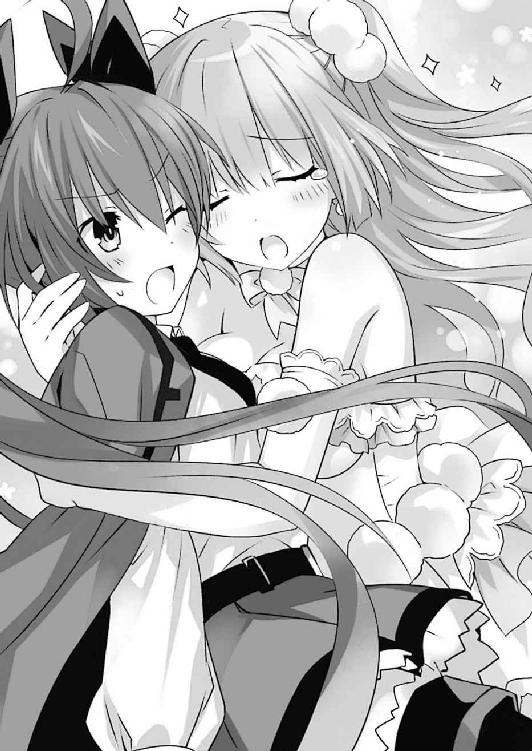

| デート・ア・ライブ 12 五河ディザスター <デート・ア・ライブ> (富士見ファンタジア文庫) | |
| 橘 公司 & つなこ | |
| Kadokawa / 富士見書房 (2015) | |
デート・ア・ライブ12
五河ディザスター
橘 公司

富士見ファンタジア文庫
本作品の全部または一部を無断で複製、転載、配信、送信したり、ホームページ上に転載することを禁止します。また、本作品の内容を無断で改変、改ざん等を行うことも禁止します。
本作品購入時にご承諾いただいた規約により、有償・無償にかかわらず本作品を第三者に譲渡することはできません。
本作品を示すサムネイルなどのイメージ画像は、再ダウンロード時に予告なく変更される場合があります。
本作品は縦書きでレイアウトされています。
また、ご覧になるリーディングシステムにより、表示の差が認められることがあります。
口絵・本文イラスト つなこ
序章 終焉の獣
──漆黒の空に、咆吼が響き渡る。
嗚呼、それは人の姿をしていながら、まさしく獣であり怪物であった。
意思はなく、自我もなく、ただ破壊を振りまく暴虐の塊。圧倒的な力の権化。光を纏うその姿は神代の怪異を思わせ、見る者に原始的で根源的な恐怖を覚えさせた。
それを中心に霊力が渦を巻き、辺りの木々を放射状に薙ぎ倒す。月のない夜を、それが発する光が目映く輝かせた。
「うそ......でしょ......」
空気を、天を、地を揺るがす吼え声を聞きながら、琴里は震える指を制するように拳を握りしめた。
その震えは、多分に漏れず恐怖によるものであった。だがそれは、目の前で吼える怪物に対するものというよりも──己が今なそうとしている行為に対する感情であったのかもしれなかった。
そう。琴里は何年も前から、その覚悟を胸に秘めていたのだ。その使命を、その背に負っていたのだ。
もしもこの怪物が現れたのならば。
そのときは、自分がこの手で──殺す、と。
だが、それを目の前にして最初に去来したものは、使命感や殺意ではなく、途方もない悲哀と、後悔であった。
なぜこんなことになってしまったのか。こうなってしまう前に、もっとできることがあったのではないか。そんな思いが心の中で渦を巻き、息をすることさえ困難になる。
しかし、もう遅い。
全ては、決してしまった。
全ては──終わってしまった。
あとは、琴里が幕を引くしかない。
琴里は、悲痛な声で『怪物』の名を呼んだ。
「なんで......どうしてよ、士道......！」
第一章 浸食する非日常
冬来たりなば春遠からじとは言うけれど、一二月一日という今日の日付を考えれば、冬は序の口、まだまだ春日は遠そうだった。
それを示すように、今朝は曇天も手伝ってか、今季一番の冷え込みを見せている。すっかり寂しくなった木々の枝が揺れるたび、五河士道はコートの襟と首の隙間を埋める作業に追われるのだった。
雲に覆われた空は白く、吐く息もまた白い。気温が低いと大気が澄んでいるように感じるのは、その冷たさが透き通った氷を想起させるからか──それとも、冷気によって細菌や有害物質の働きまでも鈍ると思ってしまうからなのか。まあもちろん、自身の感覚器が鈍っているだけというのも十分に考えられたのだけれど。
士道はかじかむ手を温めるように、はあと息を吹きかけた。冷たい指先が一瞬温かくなり──吐息に含まれる水分が冷えて先ほどよりも冷たくなる。
「はあ......なんか一気に寒くなったな。俺もマフラーとか手袋してくればよかったよ」
手のひらを摺り合わせながら、士道はもう一度息を吐いた。手に吐息を吹きかけることにさして意味がないとわかったため、今度はただのため息だったが。
今の士道は、いつもの制服に厚手のコートを一枚羽織っただけという格好だった。いくら一二月に入ったとはいえまだ大丈夫だろうと高をくくっていたのだが、どうも見込みが甘かったらしい。
しかも、夜から朝にかけての温度変化にやられてしまったのか、どうも今朝から体調が芳しくなかった。今からでも防寒具を取りに戻るべきだろうか。
「んー......」
だが、士道が今歩いているのは、家から学校へ至る通学路の、ちょうど中間辺りだった。今から家に戻っていては遅刻してしまうだろう。かといって、学校までもそれなりに距離がある。なんとも中途半端な位置だったのである。
「む、寒いのか、シドー」
そう言って士道の方を向いてきたのは、隣を歩いていた夜刀神十香だった。寒風に長い夜色の髪を揺らしながら、幻想的な水晶の瞳で士道を見上げてくる。
彼女は今、制服の上に暖かそうなダッフルコートを纏い、首にチェック柄のマフラーを巻いていた。ついでに手にはミトンタイプの手袋までしており、履いている靴下も心なしか厚手のものになっているような気がする。まさに冬仕様といった様相だった。
そういえば十香は先日、他の精霊や令音たちと一緒に冬物を買いに出かけていた。たぶんそのときに見繕ってきたのだろう。黒のコートに赤のマフラーは、十香にとてもよく似合っていた。
「ああ......ちょっと一二月を舐めてたみたいだ。明日からはもう少し暖かくして登校することにするよ」
士道が言うと、十香は士道の顔をジッと見ながら「ふむ......」とあごに手を当てた。そして、自分の首に巻かれていたマフラーを示してくる。
「そうだシドー、これを使うといい！ モコモコで暖かいぞ！」
「え？ いやいや、それじゃ十香が寒いじゃないか」
「む......私は別に大丈夫だぞ？ 手袋があるからな！」
言って、可愛らしいミトンをわきわきと動かしてみせる。士道は力なく苦笑した。
「いや、手袋じゃ首は暖かくないと思うんだが......」
「むう......」
士道の言葉に、十香はしばしの間考え込むと、何かを思いついたようにポンと手を打った。
「そうだ！ いいことを考えたぞ！」
十香は声を弾ませながら、マフラーを一周分だけ解き、半分は自分の首に巻いたまま、マフラーの裾を士道に手渡してきた。
「さあ、巻くといい。これならば私もシドーもあったかだぞ」
そう言って、十香が満面の笑みを浮かべる。
「い、いや、いいよ......」
しかし、士道は苦笑しながらそれを辞退した。
それはそうだ。確かに十香の提案した方法ならば二人とも暖が取れるかもしれなかったが、一つのマフラーを二人で巻いて登校だなんて漫画のカップルみたいな真似をした日には、クラスメートからどんな視線を浴びるかわからな......くはなかった。間違いなく羨望と嫉妬と殺意に満ちたものだ。
だが、十香は折れなかった。マフラーの裾を士道に握らせたまま、首に巻くように促してくる。
「何を言っているのだ。風邪を引いてしまうぞ？」
「いや、それはそうなんだがそうじゃなくてだな......」
と、士道が困り顔になっていると、後方からだだだっ！ という激しい足音が響いてきた。
「かか！ 愚鈍なり！ 二人ともまだこんなところにいおったか！」
「抜去。夕弦と耶俱矢は止められません」
そしてそんな声を上げながら、二つの影が士道と十香を追い抜いていく。
八舞耶俱矢と八舞夕弦。十香と同じく精霊マンションに住む、瓜二つの顔をした双子の精霊である。今は二人揃って制服の上にキャメルのダッフルコートを着込み、耳にモコモコの耳当てを着けていた。こちらも、防寒対策はバッチリのようである。ちなみに、夕弦は手に普通の手袋をはめていたのだが、耶俱矢のそれは指が出た革製だった。
「耶俱矢！ 夕弦！」
「ふっ、兵は拙速を尊ぶのだ。悪いが先に行かせ......って、何してんの二人とも？」
「怪訝。犬の散歩ごっこですか？ それとも朝も早よからそういうプレイですか？」
士道と十香の前に回り込んだ八舞姉妹が、眉根を寄せながら言ってくる。
そこで士道はハッと肩を揺らした。十香がマフラーの裾を士道に握らせているものだから、まるで士道が十香の首輪から伸びたリードを持っているような格好になってしまっていたのである。
「ぬ？ どういうことだ？」
「おいおい、誤解を招くようなこと言うなって。これは......」
士道が言いかけるも、耶俱矢と夕弦は言葉の途中でくるりと身を翻した。
「個人の趣味を咎めはせぬが、人目につく場所では控えることを勧めるぞ」
「首肯。士道の性癖に付き合わされる十香のことも考えてあげてください」
「だから、違うって──」
「では然らばだ！ 約束の地にてまた見えようぞ！」
「別離。八舞は風の子元気な子です」
そうとだけ残し、八舞姉妹は通学路を駆けていった。
「あっ！ おい、おまえら誤解したまま......」
あの二人のことだから士道の悪評を振りまいたりはするまいが......悪意なく漏らしてしまうことがないとも言えなかった。できるだけ早く誤解を解いておいた方がよいだろう。士道は二人の背を目で追いながら、隣に立つ十香に話しかけた。
「......なあ十香。マフラーを貸してもらわなくても、身体を温める方法を思いついたぞ」
「ぬ？ そんな方法があるのか？」
「ああ。......走るんだよ！」
言って士道が地面を蹴ると、十香が「おお！」と声を上げてあとをついてきた。
段々と小さくなる八舞姉妹の背になんとか食らいつきながら数分間走り続け──予定の時間よりもかなり早く学校へと辿り着く。
「はぁ......っ、はぁ......っ」
昇降口に至った士道は息を荒くして膝に手をついた。隣から平然とした様子の十香が声をかけてくる。
「大丈夫か、シドー」
「あ、ああ......」
士道は額の汗を拭いながらうなずいた。精霊である十香と体力の差があるのは当然だが......それにしてもいつもより疲労が激しい気がした。やはり、朝の冷え込みで風邪でもひいてしまったのだろうか。
「かか！ なかなかやるではないか二人とも」
「賞賛。ですがやはりスピードでは夕弦たちがチャンピオンです」
先に学校へ着いていた八舞姉妹が、無駄に格好いいポーズで士道と十香を出迎える。もとより追いつけるとは思っていなかったが、昇降口で待っていてくれたのは僥倖である。士道は呼吸を整えてから姿勢を起こし、口を開いた。
「おまえら、誤解してるみたいだから言っておくけどな、さっきのは──」
「うん？ 十香が士道にマフラーを貸そうとしていたのだろう？」
「当然。それくらい見ればわかります」
あっけらかんとした調子で二人が言う。士道は目を見開いた。
「って、気づいてたのかよ！」
「かか、当然よ。我が魔眼に見破れぬものがあると思うてか」
「首肯。さっきのはただ、やきもちを焼いた耶俱矢が士道をからかっただけです」
「ちょ......ッ！ 適当なこと言うなし！ 別にやきもちなんて焼いてないし！」
「逃亡。三十六計逃げるに如かずです」
「ちょ、待てこら夕弦ーっ！」
涼しい顔でそう言って、夕弦が走り去っていく。それを追って、耶俱矢もバタバタと学校へ入っていった。
その背を見送った士道は、はあと大きなため息を吐いた。
「ったくもう、相変わらず無駄に元気だなあの二人は......」
「シドー、私たちも学校へ入ろう。せっかく温まった身体が冷えてしまうぞ」
「ああ、そうだな」
士道は十香の言葉に首肯しながら応えると、靴を脱いで下駄箱を開けた。
と、そこで怪訝そうに眉根を寄せる。
「ん......？」
「む、どうかしたか、シドー」
「や......下駄箱に俺の上履きが見当たらないんだ」
そう。いつものように上履きを取り出そうとした士道の手が、すかっと空振りしてしまったのである。
「なんと。誰かが間違って履いていってしまったのか？」
「うーん......もしかしたらそうかもな」
目を丸くしてくる十香に、士道は曖昧に答えた。
上履きがなくなるだなんて、よくあるいじめの手段なのだが......そんなことを言ったなら、十香は不安がってしまうだろう。
それに、士道にそんな嫌がらせをする人物に心当たりがないのも確かだった。......まあ、ここ最近学校内で士道の評判が落ちまくっているのは事実であるので、完全には否定できないところが悲しかったが。
「仕方ない。今日はスリッパで間に合わせるか」
士道はそう言うと、事務室で来賓用のスリッパを借り、十香とともに二年四組の教室に向かった。
そして教室の扉を開け、自分の席に歩いていって──そこで足を止める。
理由は単純。そこに、先客がいたからだ。
肩をくすぐるくらいの髪に、人形のように端整な顔が特徴的な少女である。
だが、それだけならば別におかしなことでもない。女子が友だちとおしゃべりをするために別の生徒の席を借りるのはよくあることだった。
ただその少女が、机の下に潜り込むような格好で床に膝をつき、椅子に頰をぺったりとつけながら士道を待ち構えていたというのなら、話は別だった。周囲のクラスメートが、見て見ぬ振りをしているのが伝わってくる。
「......何してんだ、折紙」
士道は半眼を作りながらそう言った。
そう。彼女こそは鳶一折紙。士道のクラスメートであり──先月封印に成功した、新たな精霊の一人だった。
通常、精霊は纏めて五河家の隣の精霊マンションに住まうことになっているのだが、折紙は、両親との思い出の詰まった家を捨てることはできないということで、今ももとの家に留まっているのだった。そのため、登校時間も士道たちと少しずれているのである。
士道の言葉に、折紙はがさごそと机の下から這い出てきた。
「温めておいた」
「椅子を!?」
「それだけではない」
折紙はそう言ったのち、懐を探って一足の上履きを差し出してきた。
──折紙の体温でほかほかになった、士道の上履きを。
「これを」
「......って犯人おまえかよ！」
士道が叫ぶと、それに続くように十香が声を上げた。
「折紙！ シドーの上履きを取っては駄目だぞ！ シドーはそのせいでスリッパになってしまったのだ！」
「......！」
十香の言葉に弾かれるように、折紙は士道の足下を見たのち、深々と頭を下げてきた。
「ごめんなさい。そこまで考えが及ばなかった」
「い、いや、今度から気を付けてくれればいいけど......」
「今朝考案した、士道の椅子と上履きを同時に保温できるシステムの特許と商標を取らねばならないと思っていたら頭がいっぱいになって」
「安土桃山時代からあるやり方だよな!?」
士道はひとしきり絶叫したあと、疲れたようにはあとため息を吐き、自分の上履きに履き替えた。
そして机に鞄を掛け、コートを脱ごうとする。
「待って」
するとそこで、折紙が士道を制止するように声を上げてきた。
「ん？ なんだ？」
「士道保温システム・零式」
折紙は淡々とした調子でそう言うと、士道が脱ぎかけていたコートの中に手を突っ込み、士道の身体にぎゅうと抱きついてきた。まるで、一つのコートを二人で着ているような格好になる。
「な......っ!?」
「こ、こら折紙！ シドーに何をするっ！」
十香が泡を食った様子で折紙を引っぺがしにかかる。だが折紙は万力のような力で士道にしがみつき、離れようとしなかった。
だがそれから数秒後、折紙は何かに気づいたように士道の胸元に埋めていた顔を上げた。
「既に体温が高い。士道、熱があるの？」
「え？ ああ......いや、ちょっとそこまで走ってきたから、身体が温まってるんだろ」
「そう。それならばいい」
折紙はそう言うと士道から身を離した。そして、くるりと身体の向きを変えた。
「折紙？ どこに行くんだ？」
「ちょっと」
短く残して、折紙は教室を出て行ってしまった。
その背を見送りながら、十香がぷんすかと腕組みした。
「まったく、油断も隙もないやつめ！」
「はは......何ていうか、折紙は折紙だな......」
士道は力なく笑いながら席に着いた。
実は今の折紙は、これまで士道たちと過ごしていた折紙とは微妙に異なっていた。
もとの折紙と、士道が行った過去改変の結果生まれた大人しい折紙が統合された、新たな折紙ともいうべき存在だったのである。
だが、今の様子を見る限り、過去改変後の折紙よりも、もとの折紙の要素の方が強く出ているらしかった。
「む？」
しかし。十香は士道の言葉に首を捻った。
「何を言っているのだ？ 確かにあやつの行動は目に余るが、前と全く同じというわけではないぞ」
「そうか？ むしろ前よりヘビーになってる気がするんだが......」
「だが前の折紙なら、私が無理矢理引きはがすまでシドーにくっついたままだったはずだ。それに、今立ち去るときの顔は......」
「え？」
士道は、不思議そうに目を丸くした。
「............」
教室を出た折紙は、小走りになりながら廊下を進み、ひとけのない場所に至ってから、背を壁につけてヘナヘナとその場にしゃがみ込んだ。
「......ああああああああああああああああ」
両手で顔を覆い、のどを震わせる。
手のひらに伝わる体温。鏡を見たわけではないが、自分の顔が真っ赤に染まっているであろうことは容易に予想できた。
「私、なんであんなことを」
震える声で呟いて、折紙は髪をくしゃくしゃと搔き毟った。
折紙は普通に登校していたはずなのだ。だが、士道の下駄箱を目にした瞬間、折紙の心の木下鳶一郎秀吉が、殿の上履きを温めなければならないと叫びだしたのである。そして気づいたときには、懐に士道の上履きを抱きながら、ギロチンにかけられる罪人のような格好で士道の椅子に頭を載せていたのだ。今思い出しても何が何だかわからない。
だがその一方で、その行為が当然、それどころか、士道の体操着を制服の下に着て温めておかなかったのは失策ではなかっただろうか。士道はあったか私は満足。まさにウィンウィンの関係。やはり誰かに先を越される前に特許申請をしなければ。名称は折紙ぽっと。お湯を保温するポットと、頰を染める擬態語であるポッとをかけた、ウィットに富んだネーミングだ。と思う思考も同様に存在していたのである。
もともとこの世界を生きてきた折紙と、世界が改変される前の折紙の意識が混じったことにより起きた混沌。
そして、どちらも等しく折紙であるはずなのだが、なぜか士道を目の前にすると、後者の感覚が支配的になってしまうのであった。
もともとこの身体は、世界改変後の折紙のものである。均衡がとられこそすれ、新たに統合された改変前の折紙が優位に立つことはないはずなのだ。
だが、改変後の折紙の意識が『士道への思い三〇パーセント：節度七〇パーセント』だったところに、『士道への思い一二〇パーセント』が足されたなら、バランスも崩壊してしまおうというものだった。
「私、変な子って思われてないかな......」
折紙がため息交じりに呟くと、それに合わせたように、キーンコーンカーンコーン、と辺りに予鈴が鳴り響いた。
「あ......早く行かなくちゃ」
いつまでもこうしてはいられない。折紙は乱してしまった髪を手櫛で簡単に整えると、膝に手をついて立ち上がった。
が、折紙が廊下の角を曲がったところで、ぼすん、と誰かにぶつかってしまう。
「きゃっ」
「あ、ごめん......って折紙？」
そこにいたのは、先ほど教室で別れたはずの士道だった。
「ここにいたのか。っていうか今の声は......」
「なんでもない。それより、士道はなぜここに？」
折紙が問うと、士道は指で頰をかきながら答えてきた。
「いや......なんだか様子がおかしいみたいだったから、どうしたのかと思って様子を見に......」
「............！」
折紙は心臓がトクンと鳴るのを感じた。士道が折紙のことを気遣ってくれていた。それを思うだけで、心がほんのり温かくなる。
だが身体は、それを感じるより早く動いていた。
「うれしい。実は調子が悪いので触診をしてほしい。具体的には胸元と下腹部を」
言いながら、がっしと士道の手を摑む。士道が「ひっ！」と息を詰まらせた。
──えっ？ えっ？ 私何してるの!? という混乱をよそに、折紙の身体は迷いなく動きを続けた。
「先生、お願いします。優しく、それでいて大胆に」
「十香ー！ 十香ぁぁぁ！ やっぱり何も変わってなかったぁぁぁぁっ！」
士道の悲鳴が、始業前の学校に響き渡った。
◇
「............」
〈ラタトスク〉が天宮市内に所有する地下施設の一角に、司令官・五河琴里は一人、腰掛けていた。
黒いリボンで二つに括られた長い髪に、肩掛けにされた真紅のジャケット、そして口にくわえたチュッパチャプスが特徴的な少女である。顔立ちは年相応の可愛らしいものであったのだが、その表情は今、歴戦の軍人のように難しげなものになっていた。
とはいえそれも仕方あるまい。何しろ琴里の手元には、先月封印に成功した精霊〈デビル〉の資料があったのだから。
〈デビル〉。それは、最悪の精霊〈ナイトメア〉時崎狂三と並び、最重要警戒対象とされていた反転精霊であった。
その正体は、元ＡＳＴの鳶一折紙。琴里の見ている資料には、〈デビル〉の詳細なデータのほか、彼女からの聞き取り調査の結果が記されていたのである。
「......ふむ」
小さくうなりながら、紙面のある項目に視線を落とす。
世界改変や人格統合についての話も非常に興味深くはあったのだが──最も琴里の目を惹き付けたのは、折紙が狂三の天使〈刻々帝〉の力によって、五年前の天宮市に戻ったときの話だった。
そう。折紙は自分の両親を救うために五年前に舞い戻り、とある存在と対峙したのだという。
──〈ファントム〉。琴里や美九、折紙らに精霊の力を与えた、謎の存在と。
「尻尾を摑んだ......なんて言えるようなレベルではないけれど」
誰にともなく、琴里は呟いた。
琴里もかつて一度、〈ファントム〉に直接会った経験がある。しかしそのとき〈ファントム〉は、身体中をノイズのようなものに覆われ、声も変声機を通したようになっていたため、その実像をまったく摑めなかったのである。そしてそれは、美九に聞いた話でも同様だった。
しかし、折紙はこの〈ファントム〉と交戦、天使の力で以てそのノイズの障壁を剝ぎ取り、一瞬ではあるがその声を聞き、その後ろ姿を見たのだという。
曰く──〈ファントム〉は、年若い少女であった。
そして、「私には目的がある」と、言った。
琴里は、折紙の記憶をもとに描かれた〈ファントム〉のスケッチを睨むようにしながら、唇を動かした。
「〈ファントム〉......あなたは何者なの？ 目的って、一体」
と、その言葉に合わせるように、部屋の扉がノックされた。
「はい、誰？」
『......私だ』
「ああ、入ってちょうだい」
琴里が答えると同時、扉が開き、〈ラタトスク〉の制服を着た女性が一人、部屋に入ってきた。無造作に纏められた髪に分厚い隈で飾られた目。──〈ラタトスク〉解析官であり琴里の親友・村雨令音である。
「どうしたの、令音」
「......ん、端末に連絡を入れようと思ったのだが、今日は琴里が来ていると聞いてね」
「ああ」
琴里は小さくうなずいた。今日は平日、本来であれば琴里も士道や十香たちと同様、学校に行っているはずだったのだ。
「ちょっと調べたいことがあってね。あ、もちろんちゃんと出席日数は計算してるから大丈夫よ。──それで、何か用？」
「......ああ。少し気になることがあってね」
「気になること？」
琴里が首を傾げると、令音は手にしていたタブレット端末を示してきた。
画面には、様々な数値と、幾つもの線が重なったグラフが表示されている。
「これは......」
「......ここ最近の、皆の霊波数値のグラフだ。これを見てくれ」
言って、令音が一つの線を指さす。──一つだけ、極端な上昇を示しているそれを。
「何これ？ ここ数日、みんな精神状態は安定してるはずよね？ 一体誰の──」
言いかけて、琴里はハッと肩を揺らした。
「まさか、鳶一折紙？」
彼女は封印されたばかりであるし、もともと反転精霊として猛威を振るっていた存在である。某かのイレギュラーがあってもおかしくはない。
しかし、令音はゆっくりと首を横に振った。
「......いや」
「それじゃあ誰よ。十香？ 四糸乃？ まさか私なんて言わないでしょうね？」
「......いや、違うんだ。これは──」
令音は静かに、その名前を告げた。
◇
数学と現国の授業を終えて、三時間目。
二年四組の次の科目は、三組と合同の体育だった。
「おーい、五河、ぼちぼち行こうぜ」
そう言いながら寄ってきたのは、短い髪をワックスで逆立てた男子生徒だった。士道の悪友、殿町宏人である。
「ああ......次体育だっけか」
士道はゆらり、と顔を上げた。それを見て、殿町が怪訝そうな表情を作る。
「あん？ おまえどうしたんだ？ ちょっと顔色悪いぞ？ 風邪か？」
「んー......わからん。ちょっと今朝から気怠い感じはするんだが」
「むう、大丈夫かシドー」
「体調が悪いなら見学にした方がいい」
右隣の席から十香が、左隣の席から折紙が、それぞれ心配そうに顔を覗き込んでくる。士道はあははと笑いながら手を振った。
「大丈夫だって。そこまでひどいわけでもないし。──殿町、今日の体育って何やるんだっけ？」
士道が問うと、殿町は「忘れたのか？」というように肩をすくめてきた。
「今日は体力測定の日じゃねえか。しかも男子女子隣り合った場所でやるから、逞しい男をアピールし放題って寸法よ！ 俺なんかこの日のために、授業中ちょっと椅子から腰を浮かせてたくらいだぜ！」
「授業中ずっと!?」
「いや、一授業につき平均五秒くらいかな」
「短ッ！」
士道が突っ込むも、殿町はあまり聞いていないようだった。十香や折紙の方に向かってビッと親指を立ててみせる。
「つーわけで女子諸君。惚れ直すなら今のうちだぜ。俺の活躍に乞うご期待」
「本当に大丈夫なのかシドー。保健室に行くか？」
「無理はしないで士道。保健室で待っている」
「あれスルー？ ちょっとくらい聞いてくれてもいいんじゃないかなー。ヒロポン拗ねちゃうぞー」
殿町がぶー、と唇を突き出しながら不満そうに言う。士道はそんなやりとりに苦笑すると、ゆっくりと椅子から立ち上がった。
「体力測定くらいならまあ、大丈夫だろ。あとに持ち越されても面倒だし、参加するよ。すぐ行くから先に行っててくれ」
「おう。あんま無理すんなよ。おまえ人には気遣うくせに自分の体調に無頓着だったりするからな」
「はは......気を付けるよ。琴里にも似たようなこと言われたしな」
「え、マジで？ やっぱり俺と琴里ちゃん気が合うんじゃないですかねお義兄様」
「いいからさっさと行け」
士道が犬を追い払うように手を動かすと、殿町は軽く笑いながら教室を出ていった。
「さて......体力測定か」
言いながら、十香と折紙に視線を向ける。
「......念のため言っておくけど、あんまり本気出すなよ。力を封印してるって言っても、おまえらの身体能力は普通の人間より上なんだから」
「む、わかっているぞ。ちゃんと抑えるつもりだ」
「常識的な範囲内で収める」
「おう。......っていうか、おまえらより心配なのは耶俱矢と夕弦か。あの二人が張り合って記録伸ばしすぎないように注意してやってくれ」
士道が言うと、十香と折紙はこくりとうなずいてきた。
それを確認してから、体操着を携えて外に出ると、途中で二人と別れて更衣室に入り（なぜか折紙が士道の方についてこようとしたが十香に引っ張られて女子更衣室に連れていかれた）、着替えを済ませて校庭に出た。
するとすぐに始業のチャイムが鳴り、ジャージに身を包んだ体育担当の菅沼教諭が現れて、生徒たちを整列させる。
「............あ、やべ」
そこで、士道は微かに眉根を寄せた。
ここに来て、先ほどまではなかった強烈な立ちくらみに襲われたのである。
全身が発熱したように熱くなり、段々と意識がぼうっとしてくる。皆の前で菅沼教諭が何やら体力測定の種目や握力計の使い方を説明していたが、士道の耳にはほとんど聞こえていなかった。
「う......」
霞む目をゴシゴシと擦る。まさか、ここまで悪化するとは思っていなかった。......十香たちの忠告を素直に聞いて、保健室に行っていた方がよかっただろうか。
と、士道が靄のかかったような意識でそんなことを考えていると、不意に背中がトントンと叩かれた。
「ん......なん、だ......？」
見やると、士道の後ろに立っていた生徒が、前の方を指さしてきた。
「なんだじゃなくて。五河の番だろ、握力計」
「え？ ああ......」
促すように言われて、気づく。士道がぼうっとしている間に、前に並んでいた生徒たちはもう握力の測定を済ませていたらしい。
士道はふらふらとした足取りで前に出ると、アナログ式の握力計を手に取った。
「次は五河か。ほら、まずは右からだ。思い切り握ってみな」
言って、記録用のクリップボードを手にした菅沼教諭が、手をぐっと握るようなジェスチャーをしてくる。
「高校生男子の平均はだいたい四三キロだ。で、今のところの最高記録は、芳川の七五キロだな。超えられるか？」
菅沼教諭が冗談めかすように言うと、大柄な男子生徒──柔道部の芳川が苦笑した。
「止めてくれよ先生。さすがに五河にゃ負けねえって。......ていうか、リア王に握力でまで負けちまったら、俺のアイデンティティーがクライシスなんだけど」
「違いねえ」
周囲の男子生徒があははと笑う。『リア王』とは言わずと知れたシェイクスピアの四大悲劇の一つであるが、なぜそこでその名が出てくるのだろうか。なんだか本来の意味とは違う使われ方をしている気がして仕方なかった。
とはいえ、意識に靄がかかったような今の士道には、それに反応するような余裕もなかった。
こんな状態では、最高記録はおろか平均を超えることすら困難だろうが......やるしかない。右手にぐっと力を入れ、握力計を握る。
すると、次の瞬間。
パンッ、という音がしたかと思った瞬間、硬い何かが士道の頰を掠めていった。
「......？」
「お、おい、五河」
士道が首を傾げていると、周囲の生徒たちが士道の右手に視線を注いでいることがわかった。
「なんだ......？」
士道は皆の視線を追うように右手に握った握力計を見た。すると、その握力計が壊れてしまっていることがわかる。バネが千切れてグリップ部分が完全に密着し、目盛りの上にあったはずの針が弾け飛んでしまっている。どうやら先ほど士道の頰を掠めていったのはそれだったようだ。
にわかに、周囲の生徒たちがざわめき始める。
「な、なんだよ今の」
「握力一体何キロあるんだよ五河......」
「ち、ちょっと見せてみろ」
と、菅沼教諭が士道の手から握力計を取ると、それを様々な角度から、矯めつ眇めつした。
そして、はあと息を吐く。
「あー......多分、バネ部分の金属疲労だな。昔から使ってたやつだからガタが来てたんだろう。大丈夫だったか五河」
「え？ はあ......」
士道が答えると、ごくりと息を吞んでいた生徒たちの雰囲気が一気に緩んだ。
「あーあ、なんだよ、驚かせやがって」
「まあ、そりゃそうだよな、針振り切るならともかくバネ引き千切るって」
得心がいったように、生徒たちがうなずく。
「............」
そんな声を聞きながら、士道は無言で右手を何度か閉じたり開いたりしてみた。
......なるほど、バネが金属疲労を起こしていたのならば納得である。これといって特別な筋力トレーニングをしているわけではない士道が握力計を壊せるはずはなかったし、今は体調も最悪なのである。そもそも、士道は今握力計を握る際、ほとんど力を入れていなかったのだ。
と、士道が一人考えを巡らせていると、またも菅沼教諭の声が聞こえてきた。
「ほら、今度はハンドボール投げだ。順番にここからボールを投げろ。高校平均は大体二六メートルってところだ。ハンド部と野球部は平均割るなよー？」
菅沼教諭が言うと、クラスに数名いた部員たちが苦笑した。
そして教諭の指示に従い、適当な順番で生徒たちが所定の位置に立ち、ボールを投げていく。
「たっ！」
「浅井、二四メートル！」
「とりゃっ！」
「芳川、三〇メートル！」
「だらっしゃぁぁぁぁッ！」
「殿町、線踏んでる」
と、生徒と計測係の声が交互に響くこと、十数分。士道の番がやってきた。
「はい、次五河！ ハンドボールは壊れないから安心して投げな！」
「......あーい」
士道は気怠げな調子でそう返すと、カゴの中に入っているボールの中から適当な一球を手に取り、消石灰で描かれた円の中に立った。
そして、計測係が手を上げて合図をしてくるのをぼやけた視界で確認してから、ゆっくりと右手を後方にやった。
「とうっ！」
そう叫びながら地面を蹴り、十香は前方の砂場へと着地した。
するとメーターを持った計測係の女子生徒、亜衣がやってきて、踏み切り線から十香の足跡までの位置を測る。
「十香ちゃん、二メートル九〇センチ！」
「おおー！ 今までで一番だー！」
「さすがですなあ」
亜衣の声に合わせるように、亜衣と仲良しの麻衣と美衣が拍手をする。
皆の反応を見るに、常識的な記録の範囲内で上手く跳べたようである。十香は満足げにうなずいた。
握力測定、ハンドボール投げを終えた十香たちは今、立ち幅跳びの計測を行っていた。十香が砂場から出ると、既に計測を終えた八舞姉妹が寄ってくる。
「かか、やるではないか十香よ」
「首肯。絶妙な数字です」
「おお、耶俱矢、夕弦。二人はどれくらいだったのだ？」
十香が問うと、耶俱矢と夕弦はふふんと胸を反らしながら腕組みした。
「二メートル五〇センチだ。くく、颶風の御子たる我らが本気を出しては騒ぎになるからな。今日に限って勝負の形式を変えてみたのだ」
「同意。記録を競うのではなく、最初に定めた数値にどれだけ近づけることができるかで勝負しているのです。握力こそ簡単でしたが、ハンドボール投げと立ち幅跳びはなかなかスリリングでした」
「おお、なるほど！」
十香は目を見開きながら手を打った。確かにそれならば、皆に怪しまれることなく勝負ができるだろう。
と、十香と八舞姉妹がそんな会話をしていると、十香の次に並んでいたらしい生徒が、立ち幅跳びを終えた。
「──鳶一さん、二メートル九一センチ！」
「おおおおおおおおおおおおおおっ!?」
「十香ちゃんまさかの三分天下!?」
驚愕に染まった亜衣麻衣美衣の声に、十香は振り返った。
折紙が、澄ました顔で歩いてくる。十香は、むっと口をへの字にした。
「......折紙、おまえ、わざとやっているのではないだろうな」
「何のこと？」
「記録だ。なぜ綺麗に私の一センチ上なのだ」
「偶然」
「......本当か？ 握力計測も私より〇・一キロ上だった気がするのだが」
「偶然」
「ハンドボール投げも私の一センチ上で」
「偶然」
「むう......」
そこまできっぱり言われると、本当に偶然のような気もしてきたが......どうも腑に落ちない。十香は折紙に視線を向けたまま言葉を続けた。
「では次の種目は折紙からやるのだぞ。それならば偶然と認めてやろう」
「それはできない」
「やはりわざとではないかっ！」
たまらず叫びを上げる。が、既に折紙は十香を見ておらず、視線を校庭の奥の方──男子生徒たちが測定をやっている方に向けていた。
様子を見るに、男子たちはまだハンドボール投げをしているようだった。そういえば先ほど、男子たちが握力を測りながら何やら騒いでいた気がする。もしかしたら何か問題が起こって測定に時間がかかってしまったのかもしれなかった。
「ぬ？」
そこで、気づく。どうやらちょうど、士道がハンドボール投げをするところだったようだ。
しかし、十香は眉をひそめた。所定の位置につこうとする士道の足取りが、病人のようにふらふらであったのである。
「むう、大丈夫なのか、シドーは」
「やはり体調が優れないみたい。保健室へ連れていかないと。お姫様だっこで」
「待てっ！ なぜお姫様だっこをする必要があるのだ!?」
と、十香が折紙の手を摑んだ瞬間。
──ヒュゴッ、という風を切るような音が響いたかと思うと、士道の手から空に向かって、一直線に線が引かれた。
「は......？」
誰かの啞然とした声が、どこからともなく聞こえてくる。
だがそれも無理からぬことではあった。放物線などではない、定規で引かれたような直線の軌跡を描きながら、ハンドボールが雲を裂き、空の彼方へと消えていく。その様はもうボールというよりも、カタパルトで射出された戦闘機か弾道ミサイルである。大気との摩擦でボールの表面が焦げたのか、飛行機雲のように煙が線となり、空気に溶け消えていった。
『............』
校庭が、しばしの間沈黙に包まれる。
その静けさの中、美衣が「......バーイバーイキーン」と呟いたが、誰も突っ込まなかった。
結局、士道の異常な暴投は、急激な上昇気流のせいということで片が付いた。というか、そうとでもしておかねば皆の理解が追いつかなかったといった方が正しいかもしれない。
ともあれ、その騒動から十数分後。体力測定は続き、今は五〇メートル走のタイム測定となっていた。
「はい、じゃあ次、女子は夜刀神さん、鳶一さん、山吹さん。男子は殿町くん、浅井くん、五河くんね。位置についてちょうだい」
係の生徒が指示を出してくる。十香はうむ、とうなずいて白線の前に立った。それに続くように折紙と亜衣、そして男子生徒たちの後ろに続いて、ふらふらの士道がやってくる。
「む......シドー、ふらふらだぞ。体調が悪いのなら無理をしない方がよいのではないか？」
「ん、ああ......大丈夫だよ」
言って、士道がヒラヒラと手を振ってくる。十香はむうとうなった。不安ではあるが......本人が平気だと言っているのであれば十香が口を出すことではないのかもしれない。
「──はい、始めるわよ。男子の平均が七・三八秒、女子の平均が九・〇二秒よ。みんな頑張ってね」
そう言って、係の生徒が合図をするように手を上げる。十香たちはそれに従って地面に手を突き、クラウチングスタートの姿勢を取った。
「それでは......よーい、ドン！」
係の生徒が勢いよく手を振り下ろす。
十香は足に力を入れ、身体を前方に弾くように地面を蹴った。そしてそのまま、男子をも置き去りにしてグラウンドを走っていく。
が、独走状態かと思われた十香の隣に、一つの影が現れた。──折紙だ。
「く......！」
横目で併走する折紙を見やる。その表情からは、まだまだ余裕を隠していることが窺えた。恐らく今までの測定と同じく、ゴール直前で十香を抜き去り、〇・一秒差で勝つ算段なのだろう。
「させるか......！」
十香はぐっと拳を握ると、さらにスピードを上げた。しかし、折紙もまたそれに合わせて速度を調整し、まったく離れようとしない。二人は競い合うようにどんどんスピードを上げていった。
が──そこで気づく。
十香は折紙への対抗心のあまり、高校生女子の平均を大幅に超えた速度で走ってしまっていたのである。
「しまった......」
もし記録でも出してしまおうものなら、変に注目を集めてしまうことになる。となれば、十香たちに生きる場を提供してくれている〈ラタトスク〉にも迷惑がかかってしまうだろう。一体どうすれば──
が、十香がそんなことを考えていると。
十香の隣を、バヒュッ、と何かの影が凄まじい速さで通り抜けていった。
「ぬ──？」
一瞬置いて、気づく。
それが、ロケット花火のようにグラウンドを駆け抜けた士道の影であったことに。
「!? い、五河くん......タイム、四・三八秒です......」
「いいッ!?」
「ちょっと待て、世界記録が五・五六秒とかじゃなかったか!?」
「しかも五河くん、スタートのあと少し棒立ちだったわよね!?」
「えっ、じゃあ実質何秒なんだよ！」
ゴール地点にいた生徒たちが、にわかに騒ぎ出す。
「ん......なんだみんな、そんなに驚いて......」
だが、当の士道はさして気にしていない様子......というか、意識が朦朧とした様子で頭をふらふらと振り、そのまま、力なく地面に倒れ込んだ。
「！ シドーっ！」
「士道──」
十香と折紙はさらにスピードを上げると、ゴールを越えて士道のもとに走っていった。
◇
......何かがおかしい。
朦朧とする意識の中で、士道は思考を巡らせていた。
今士道がいるのは保健室のベッドの上である。身体が怠いということでしばらく休ませてもらっていたのだが、体調は良くなるどころか悪化していく一方だった。
目が霞み、頭はぼうっとし、身体は熱を帯び、途方もない倦怠感が全身を襲う。まるで質の悪いインフルエンザにでも罹ってしまったかのような症状である。
だが、問題はそんなことではない。
「......どうしちまったんだ、俺」
士道は小さな声で呟くと、微かに震える右手を持ち上げ、ジッと見つめた。
──数時間前、握力計を破壊し、ボールを星にしてしまった右手を。
クラスの面々や体育教諭も驚いていたようだったが、一番驚愕しているのは間違いなく士道だった。士道はほとんど力を入れていない......というか、全力でやったとしてもあのような結果が出るはずはなかったのだ。
あれではまるで──
「......精霊......」
声になりきっていないような掠れた音で、呟く。
そう。あの力は、十香たち精霊のものに近いように思えたのである。
確かに士道は、心を開いた精霊の霊力を、キスによって封印する能力を持っている。
それに、限定的とはいえ、精霊の力である天使を顕現させて戦ったこともあった。
だが今日のように、敵がいるわけでもなければ誰かが危機に瀕しているわけでもない状況で、何の自覚もなく力が発現してしまうのは初めてだったのだ。
「これって、一体......」
と、そこで、ベッドの周りに引かれていたカーテンが、勢いよく開かれた。
「士道！」
席を外していた養護教諭が戻ってきたのかと思ったが──違う。そこに居たのは、中学の制服を着た妹の琴里だった。
「あれ......琴里？ おまえ、なんでこんなところに......」
「十香たちから連絡があったのよ。士道が熱を出して倒れて──しかも、精霊としか思えない力を使ったって。体調に問題は......って、聞くまでもないわね」
琴里が士道の様子を見て、深刻そうな顔を作る。
「もしかして......何か心当たりがあるのか......？ 何時間か前から、身体がおかしいんだ......俺にも、何が何だか......」
「......とにかく、〈ラタトスク〉の施設で調べてみましょう。学校の裏に車を回してるわ。歩ける？」
「ああ......それくらいなら大丈夫だ」
士道はそう言うと、ゆっくりと身を起こしてベッドの脇に揃えてあった上履きを履いた。
そして琴里の手を借りながら保健室を出る。
「う、く......」
ふらふらとした足取りで、廊下を歩いていく。知らぬ間に昼休みに入っていたらしい。辺りには、ちらほらと弁当を抱えた生徒の姿が見受けられた。中学の制服を着た琴里と、それに支えられて歩く士道に好奇の視線を向ける者もいたが、今はそれに応対している余裕もない。
本当なら教室に戻って鞄や教科書などを回収したいところだったが、今は階段を上るのも一苦労だった。あとで十香たちにお願いして持ってきてもらった方がいいだろう。
「──シドー！ 琴里！」
と、士道がそんなことを考えながらのたのたと歩みを進めていると、前方から十香の声が響いてきた。
ゆっくりと顔を上げると、十香の他にも、折紙や八舞姉妹が小走りになって寄ってくるのがわかる。
「......おまえら。どうしたんだ、こんなところで......」
士道が問うと、八舞姉妹がバッとポーズを取った。
「知れたこと。昼休みになったので士道の様子を見に衛生室へ赴くところだったのだ」
「質問。士道こそどうしたのです。休んでいなくてよいのですか」
「ああ......ちょっと今日は......早退しようと思ってな......琴里が車を用意してくれたっていうんで、外に出ようとしてたんだ......」
士道が言うと、四人はなるほど、というように首肯した。すぐにささっと、折紙が進み出てくる。
「では、そこまで肩を貸す。何なら腰も貸す。摑まって、士道」
「む......」
折紙の言葉に十香が何かを言いかけるが、止める。たぶん、折紙に先んじられたのが悔しかったのだが、士道の辛そうな様子を見て、言い争っている場合ではないと判断したのだろう。
「ん......すまん。でももうすぐだし大丈──わッ」
と、士道は一歩足を踏み出そうとしたところでよろめき、左方にあった窓に手を突いてしまった。
すると、その瞬間。士道が手を触れた位置を起点にして、窓に放射状にヒビが入ったかと思うと、パン、と乾いた音とともにガラスの破片が弾け飛んだ。
「へ......っ？」
士道は間の抜けた声を発し、一瞬のうちに風通しがよくなってしまった窓を見つめた。周囲にいた生徒たちが、目を丸くしながら視線を送ってくる。偶然そこにいたらしい亜衣麻衣美衣が、にわかに声を上げた。
「えっ？ 何今の音......」
「うわ、あれ、ガラス割れてる！」
「何？ 五河くん昼の校舎窓ガラス壊して回ってるの？ 何から卒業したいの？」
「い、いや、俺は何も......」
士道は狼狽しながら窓から離れた。と、今度は勢い余って壁に手を突いてしまう。
すると、まるで力を入れていないというのに、固い壁がスポンジケーキのようにごっそりと抉れた。それを見た亜衣麻衣美衣がまたも驚愕する。
「わっ！ えっ！ 何あれ!?」
「触れるもの皆傷つけてる!?」
「それなんてギザギザハート!?」
「し、シドー！ どうしたのだ先ほどから！ それは一体──」
十香が、心配そうに言ってくる。
「俺にも何が何だか......」
と、士道はそこで目を細めた。壁を破壊してしまったことにより辺りに舞った建材の細かな粉塵が、士道の鼻腔を刺激したのである。
「──ふ、ふぁっくしょん！」
思わず、大きなくしゃみをしてしまう。
と、その瞬間、廊下中に巨大台風もかくやという暴風が吹き荒れた。窓ガラスが軋み、プリントが舞い、女子生徒のスカートが盛大に捲れ上がる。
「うわっ!?」
「............」
「う、うきゃぁぁっ！」
「動揺。何をするのですか」
「お、俺は何も......うぐ......」
士道は頭をふらふらと揺らすと──そのまま、くずおれるように廊下に倒れ込んだ。
◇
「──まさか〈デビル〉が〈ラタトスク〉の手に落ちるとはね」
ＤＥＭインダストリー日本支社の一室で、業務執行取締役アイザック・ウェストコットは小さく息を吐いた。
くすんだアッシュブロンドと刃物のような双眸が特徴的な、三十代半ばくらいの男である。闇のように黒いスーツを隙なく着込み、デスクの上に広げられた資料に視線を落としていた。
「申し訳ありません」
それに答えるように言ったのは、その側に控えたノルディックブロンドの少女だった。
エレン・メイザース。ＤＥＭの陰の実行力たる第二執行部の部長にして、世界最強の名を恣にする魔術師である。
ウェストコットは大仰に肩をすくめると、首を横に振った。
「君が謝ることではないさ。〈デビル〉の件は私にも予想がつかなかった」
ただ、と吐息する。
「──自然発生した反転精霊という貴重なサンプルを取り逃がしてしまったのは残念だ。あれほどに完璧な反転体は、〈プリンセス〉を除けば目にしたことがない」
言って、椅子を回転させ、窓の外を見やる。
ウェストコットとエレンは、今からおよそ三ヶ月前、精霊〈プリンセス〉を捕獲し、反転させることに成功していた。その際日本支社の社屋と周辺施設、数多の兵器に魔術師たちを失うことにはなったのだが──些末なことである。
半壊した社屋と施設の復旧は顕現装置によって既に完了しているし、〈バンダースナッチ〉はまた作ればいい。優秀な魔術師だけは惜しかったけれど、ウェストコットたちの悲願の礎と考えれば、それも仕方のない犠牲である。
「無論、精霊がもとから反転した状態で現れることはないだろう。──〈デビル〉は一体どのような理由で絶望の淵に立ったのだろうね。興味は尽きないよ。できることならご教授願いたいくらいだ」
そう言いながら、ウェストコットは椅子から立ち上がった。
「ときに──エレン。先ほどネリル島の施設から連絡があったのだがね」
ネリル島。その名前に、エレンがぴくりと眉の端を動かした。
その名が示すのは、ＤＥＭが所有する太平洋上の小さな島、及びその地下を改造した実験施設のことである。
エレンがその名に反応したのは当然のことであった。何しろその施設の最奥にはＤＥＭの最高機密──かつて彼女が捕らえた特殊災害指定生命体が監禁されているのだから。
「どうやら、『資材Ａ』の処理が完了した模様だ。〈プリンセス〉の反転は、我らに大きな前進をもたらしてくれた。推定成功率は七五パーセント。──悪くない数字だとは思わないかい？」
「では」
エレンの言葉に、ウェストコットは唇を歪めた。
「ああ。──そろそろ、我らも完璧な反転体を一つ、作ってみないかね？」
第二章 王者の行進
〈ラタトスク〉が所有する地下会議室で。
琴里は、円卓に着いたぬいぐるみたちと向き合っていた。
とはいえ無論、本当にぬいぐるみと喋っているわけではない。ぬいぐるみたちの下にはスピーカーが置かれ、そのそれぞれが、世界中にいる〈ラタトスク〉の最高幹部たちに繫がっていたのである。
『──五河司令。これはどういうことだね』
泣き顔のネズミに備えられたスピーカーが、ぬいぐるみの顔にぴったりの情けない声を発してくる。
『五河士道が暴走する可能性は非常に低い、とのことではなかったのかね？』
「......資料に間違いはありません。今回のケースは、起こってはならないことでした。全ての責任は私にあります」
『君が責任を取ったくらいでどうこうなる問題だと思っているのか』
涎を垂らしたブルドッグのぬいぐるみが、怒気のこもった声を上げてくる。
『今や彼は、精霊八体分もの霊力をその身に蓄えているのだぞ。それが暴走だなどと......一体どれだけの被害が出ると思っているのだね！』
それを抑えるように、ブサイクな猫のぬいぐるみが言う。
『落ち着きたまえ。──こうときのために備えて、〈ダインスレイフ〉を用意していたのだろう？』
「......っ」
その言葉に、琴里は眉をひそめて嫌悪の表情を作った。
思えば、士道の能力を利用した精霊の封印作戦を承認するに当たって『条件』をつけてきたのはこのブサ猫であった。
『......しかし、五河士道は精霊たちにとって特別な存在となっている。今彼を殺せば、精霊たちが揃って暴走、最悪反転してしまうのではないのか？』
『ああ、普通であればそうだろうね。だが、今ならば話は違うのではないかな？』
『それは......、だがどちらにせよ、その場合我々は今まで集めた精霊の力を全て失うことになるのだぞ？』
『わかっているさ。だが、最悪の結末を迎えるよりはマシだろう？』
ブサ猫の言葉に、バカ犬が黙り込む。この場においてそれは、肯定を示す行為に他ならなかった。
「............」
琴里はギリと奥歯を嚙みしめた。──どいつもこいつも、琴里を苛つかせてくれる。
そんな琴里の様子に気づいたわけではあるまいが、ブサ猫が琴里に向かって言葉を続けてきた。
『というわけだ、五河司令。万一のときは、彼の処理をよろしく頼むよ。それが、君の役目だ』
「............」
琴里は、今すぐスピーカーの先に乗り込んでいって、ふんぞり返ったブサ猫の声の主を殴り飛ばしてやりたい衝動を抑えながら、それに答えようとした。
だが琴里がその応答を発するより早く、円卓の最奥に座っていたリスのぬいぐるみ──この円卓会議の議長を務めるエリオット・ウッドマンが声を上げてきた。
『──勘違いしてはならないよ、五河司令』
「え......？」
『君の最も大事な仕事は、万一のとき手を下すことではない。「万一のとき」が起こらないよう努めることだ』
「............ッ！」
『頼んだよ、五河司令』
「......はっ！」
琴里は、姿勢を正して敬礼をした。
◇
士道が倒れてから数時間後。十香たちは制服姿のまま、広い休憩室のような場所にいた。
〈ラタトスク〉が所有する地下施設の一角である。壁際には数台の自動販売機やモニタ、観葉植物などが並び、椅子とテーブルが適当な間隔で配置されている。
本来ならば仕事の合間に機関員たちが談笑するスペースなのだろうが──今その部屋には、手術中の病院の待合室のような重苦しい空気が流れていた。
あのあと十香たちは、倒れた士道を皆で外まで運び、〈ラタトスク〉からの使いと合流したのち、士道に付き添ってこの施設までやってきていた。
処置と解析にある程度時間がかかるため、一度家に戻ってもよいと言われはしたのだが、十香も折紙も八舞姉妹も、ここを動こうとしなかった。もし自分が席を外しているときに士道に何かがあったら......と思うと、とても家になど帰れなかったのである。
「シドーは大丈夫だろうか......」
静かな部屋で、十香は幾度目とも知れない呟きを口にした。
しかし、誰もそれを咎めようとはしない。それはそうだ。その不安は、今ここにいる誰もが抱えているものだったのだから。
「大丈夫ですよ......きっと」
『そうそう、みんなで看病すればすぐよくなるってばー。あ、むしろ熱上がっちゃうかも？』
十香の声に答えたのは、十香の向かいに座っていた小柄な少女と、その左手に装着されたウサギのパペットだった。
四糸乃と、その友だち『よしのん』。十香たちと同じく、五河家の隣のマンションに住む精霊である。彼女も士道が倒れたとの報を聞き、ここに駆けつけていたのである。
「そ、そうだな......琴里や令音がついているのだ。きっと......」
しかし、十香がうなずこうとすると、四糸乃の隣に座った目つきの悪い少女が、暗い顔をしながら口を開いてきた。
「......いや、どうかしら。万一ってこともあるわ。念のため覚悟だけはしておいた方が......」
などと、もとより暗澹とした気分をさらに暗くさせるように言う。救いのないその言葉に、十香は愕然とした表情になった。
「そ、そんな......」
「こら！ 縁起でもないことを言うでない！」
「叱責。そうです七罪。十香が信じてしまいます」
八舞姉妹が声を上げる。すると七罪はビクッと肩を震わせ、猫背気味だった背をさらに縮こまらせた。
「......でも経験上、希望を持ってたところから叩き落とされるのと、ある程度最悪の状態を覚悟してから落ちるのとでは、まだ後者の方がマシよ......？」
「いやだから落ちる前提で話をしないで!?」
「......ご、ごめん......」
耶俱矢が声を裏返らせながら言うと、七罪は申し訳なさそうに視線を逸らした。
それからまたしばらく、沈黙が流れる。部屋の壁に設置されたアナログ時計の針の音が、やけに大きく感じられた。
「──にしても」
と、その静寂を破るように、折紙が声を発する。
「いくら体調が優れないとはいえ、今日の士道の様子は常軌を逸していた。あれではまるで──力を制御できていない、精霊」
「............」
折紙の言葉に、十香と八舞姉妹、実際に士道の様子を目の当たりにした面々はむうとのどを鳴らした。
確かに今までも士道が体調を崩すことは何度かあった。特に、おたふく風邪とやらで床に臥せっていたときは、大層辛そうにしていた気がする。
だが折紙の言うとおり、今日の士道はそれらのときと明らかに様子が異なっていた。
「それは......シドーも精霊だったということか？」
「わからない」
折紙が、表情を変えないまま首を振る。そしてそののち「でも」と続けた。
「士道が普通の人間だとは、到底思えない。そもそもの問題として、士道はなぜ精霊の力を封印することができるのか、それさえ私たちは説明されていない」
「......それって、士道や〈ラタトスク〉が私たちに隠し事をしてるってこと？」
そう言ったのは、四糸乃の陰に隠れた七罪だった。
「そうとまでは言わない。士道の能力の正体や、それが備わっている理由に関しては、本人も〈ラタトスク〉も完全には把握していない可能性がある。──でも、それを別にしたとしても、〈ラタトスク〉という組織には謎が多すぎる」
淡々と、折紙が続ける。
「私を救ってくれたことには感謝している。それこそ、言葉もないくらいに。けれど、そもそも一体なぜ〈ラタトスク〉は精霊を保護しようとするの？ こんな危険な行動に、何の見返りもなく莫大な費用を投じているとはとても思えない」
「それは......」
十香は唇を引き結んだ。
否、十香だけではない。耶俱矢も、夕弦も、四糸乃も、七罪も、折紙に視線を向けながら黙り込んでいた。
確かに、折紙の言うとおりなのかもしれない。この世界のことを何も知らなかった十香は最初そこまで疑問に思わなかったのだが、人間として生活をしていくうち、〈ラタトスク〉という組織が如何に凄まじい権能を持っているかはなんとなく理解できていたのである。
そんな組織が、十香たちのために様々な手を尽くしてくれている。当然の如く恩恵を受けていたためあまり意識していなかったが、〈ラタトスク〉がなければ、十香たちは学校に通うことさえできていなかったのである。
〈ラタトスク〉はなぜ、十香たちをそこまで丁重に扱ってくれるのか──改めて問われると、すぐには答えが出ないのが事実であった。
「むう......」
と、十香が難しげにうなりを上げるのと同時に部屋の扉が開き、そこから琴里と令音が入ってきた。
「──琴里！」
「ハイ、十香。悪かったわね、うちの士道が迷惑かけちゃって」
十香が声を上げると、琴里が肩をすくめながら部屋の中を見回した。
「......？ どうかした？」
琴里が、部屋に満ちる奇妙な空気を察したように首を傾げる。すると折紙が、話題を変えるように首を振った。
「なんでもない。それより、士道の容態は？」
「............？」
琴里はもう一度不思議そうに皆の顔を見たが、すぐにこくりと首肯した。
「じゃあ説明するけど......美九がまだみたいね」
琴里が言うと、隣に控えていた令音が静かな声を響かせた。
「......既に連絡はしたのだが、どうやら今仕事で関西にいるらしくてね」
「うーん、それじゃ仕方ないわね。まあ、今日中に来てくれればなんとかなるでしょ。じゃあ先にみんなに──」
と、琴里が言いかけたところで、廊下の方からダダダダッ、というけたたましい音が響いてくる。
「──だぁぁぁぁぁぁぁぁりぃぃぃぃぃぃぃぃぃんっ!!」
「えっ？」
琴里が目を丸くしていると、開いていた扉からバッと人影が躍り出てきて、そこに立っていた琴里をはしっと抱きしめた。
紫紺の髪をした、長身の少女である。今はお化粧をバッチリ決めて、ステージ衣装と思しき煌びやかな服を纏い、その上にコートを羽織るという格好をしていた。
「み、美九!?」
琴里が声を上げるが、美九は気づいていない様子で両手に力を入れ、琴里をぎゅうと抱きしめながら頰ずりをした。
「大丈夫ですかだーりん！ だーりんが倒れたって聞いていても立ってもいられず、ヘリをチャーターして戻ってきたあなたの美九ですよぉぉ！」
「ちょ......落ち着きなさいって──」
「ああっ、おいたわしやだーりん！ こんなに小さくなってしまって......！ 腕とか足とかぷにぷにじゃないですかー！ かと思えばお肌すっべすべでまるで琴里さんみたいですよー！」
「まるでどころか私だっての！」
琴里が叫ぶと、美九はようやくハッと目を見開いた。
「あらー、琴里さん。こんなところで何やってるんですかー？ 私の知らない間に私の手の中に収まるだなんて、くふふ、琴里さんも甘えんぼですねぇ」
「わざとやってんでしょあなた!? ていうかその手をもぞもぞ動かすのやめてくれる!?」
「ああん、いけずぅ」
琴里が美九を押しのけるようにして拘束から逃れると、美九が名残惜しそうに唇を尖らせた。
「まったく......ほら、適当な席に着いてちょうだい。士道の容態を説明するわよ」
「はーい」

美九が素直に手を上げ、手近な椅子に座る。七罪がビクッと身体を震わせ、美九から見えない位置に移動した。
そんな様子を眺めてから小さく息を吐き、琴里が令音に視線を向ける。
「じゃあ令音、お願い」
「......ああ」
令音はそう言うと、手にしていた端末をテーブルの上に広げ、何やら操作をし始めた。
すると、部屋の壁にはめ込まれていた大きなモニタに、令音の端末と同じ画面が表示される。
「これは......」
十香は小さく呟きながら、そのモニタを見上げた。
そこには、士道の全身図と複雑な数字、そしてグラフのようなものが映し出されていた。
「今の士道の状態を解析して図式化したものよ。──〈フラクシナス〉であればもっと手早くできてたんだけど、どこかの誰かさんが派手に壊してくれちゃったものでねえ」
「ひどいことをする人間がいる」
琴里が皮肉げに言うと、折紙が間髪入れずしれっと答えた。琴里が苦笑しながら肩をすくめる。
「──まあとにかく、これが士道の現状よ。このグラフの赤い線。これが士道の霊波反応を示しているわ。はっきりいって、異常な数値よ。......ていうかまあ、そもそも人間から霊波が観測されること自体異常なんだけど」
「むう......よくわからんが、なぜそんなことが起こってしまったのだ？」
十香が問うと、琴里が「令音」と声を掛けた。令音がそれに応じて、モニタに表示されているグラフを別のものに変える。
表示されたのは、真ん中に士道が、そしてその周囲に十香や折紙たち精霊が配置された画像だった。士道と精霊たちの間にはそれぞれぼんやりと輝く線が表示されており、そこを、光が行ったり来たりしていた。
「......これが、通常の状態だと思ってくれ。シンは精霊の霊力を封印する力を持つが、それは精霊から完全に力を奪って隔離してしまうわけではなく、自分と精霊の間に目に見えない経路を繫ぎ、霊力の大部分を自身の中に保有しながら、少しずつ循環させている状態にあると考えて欲しい」
言いながら令音がキーを叩く。すると士道の方にあった光が、経路を通って精霊たちの方に分配された。
「......君たち精霊の精神状態が不安定になった際の図がこれだ。シンと君たちの中における霊力の比率が変わり、君たちは限定霊装や天使を顕現させることができるようになる」
「ふむ......なるほどな」
「指摘。耶俱矢が理解できたフリをしています」
「ふ、フリじゃないし！ ちゃんとわかってるし！」
耶俱矢と夕弦が小競り合いを始める。令音がコホンと小さく咳払いをした。
「......続けていいかな？」
「は、はーい......」
「謝罪。お願いします」
二人がしゅんとして肩をすぼめると、令音が再び端末を操作し、画面が先ほどのものに戻った。
「......そして、これが今シンの身に起こっていることだ」
令音が言うと同時、今度は士道と精霊たちの間にあった経路が細くなり、そこを巡っていた光の動きが鈍くなってしまった。
「こ、これは......」
「......解析の結果、シンと君たちを繫ぐ経路が急激に狭まり、霊力の循環を妨げている状態にあることがわかった」
「それって......どうなるんですか？」
不安そうに眉を八の字にしながら四糸乃が問うと、令音はゆらりとした動作でうなずいた。
「......ああ、本来であれば循環するはずの霊力がシンに留まり続け──オーバーヒートのような状態を起こしてしまう。それが、シンの症状の原因だ。さらに放出場所を失った霊力がシンの身体を通して発現し、異常な身体能力として現れてしまったのだろう」
令音がキーを叩くと、画像の士道が赤く染まっていった。
「なんと......大変ではないか！」
十香が机を叩きながら立ち上がると、琴里が腕組みしながら、口にくわえたチュッパチャプスの棒を立てた。
「ええ。あまり芳しくない状況よ。このままの状態がずっと続けば、士道の中に溜まった霊力が暴走してしまう可能性だってある。八人分の霊力の爆発よ。考えただけでも恐ろしいわ」
「し、シドーを助ける方法はないのか!?」
十香は縋るように琴里に詰め寄った。すると琴里は、十香を落ち着かせるように頭をぽんぽん、と撫でるようにしてきた。
「もちろん、あるわ。──だからこそ、あなたたちを呼んだんだもの」
「む......？」
十香が目を丸くしていると、琴里は椅子から立ち上がり、続けた。
「要は、士道と私たちの間にある経路を、正常な状態に戻せばいいのよ。それさえできれば、霊力の循環が行われ、士道の症状も改善するはずよ」
「そ、そうか！」
「でも、経路を広げるって、一体どうすればいいんですかー？」
美九が指をあごに当てながら首を傾げる。
するとなぜかそこで琴里が、気まずそうに口ごもった。
「ええと、それはね......」
「......えっ、まさか、方法もわからないのにやれっていうの？」
七罪が半眼で言う。
「ち、違うわよ。方法はわかってるわよ」
「......えっと、じゃあその方法がすごく難しいとか......ですか？」
「いえ......そういうわけでもないんだけど」
「じゃあ教えてくださいよー。一体どうやればだーりんを助けられるんですかー？」
「そ、それは......」
琴里が頰を染めながら言葉に窮していると、それを見かねたように令音が唇を開いた。
「......キス、だよ」
「えっ？」
「今、なんて......」
皆の驚きに答えるように、令音が首肯する。
「......シンは、精霊の霊力を封印するために、キスをする。つまりその行動によって互いの間に経路が繫がれるんだ。狭窄してしまった経路を再び広げるためには、君たち全員が再びシンとキスをする必要がある」
「な、なるほど......」
十香はこくりと首肯してから、自分の指で唇に触れた。
そういえば、十香の力が封印されたとき、十香は士道とキスをしていた。あれで二人の間に経路が結ばれたというのならば、再度それを行うことによって経路が開くのも道理だろう。
が。そこまで考えたところで、十香は「む？」と首を捻った。
「ちょっと待ってくれ令音。......ということは、シドーはもしかして、皆とキスをしていたのか？」
「......？ ああ、そうだが」
令音の言葉に、十香は目を見開いた。
「な......っ、そ、そうだったのか!?」
「えっ、もしかして十香さん知らなかったんですかー？」
「ええと......じゃあどうやって封印してたと思ってたのよ」
「む......？ それはこう......」
耶俱矢に言われ、十香は考え込むようにあごに手を当ててうなった。そもそもの問題として十香の中ではキスと封印がイコールで結びついていなかったのである。
「そうか......そうだったのか」
十香は以前、士道に精霊を助けてあげて欲しい、と言ったことがある。だがそのとき同時に、私以外とはキスをするな、とも言っていたのだ。
「むう......」
あのとき、士道が困ったような顔をしていた理由がようやく知れた。何しろ精霊の力を封印するためには、そのキスが必須だというのである。十香は知らず知らずのうちに、士道に無理を言ってしまっていたらしい。
「あのー、十香さん？」
美九が考え込む十香の顔を覗き込むように言ってくる。それに合わせるように、十香はバッと顔を上げた。
「よし......やる！ 私はやるぞ！ 私はシドーに助けられた。今度は私がシドーを救う番だ！」
十香が言うと、周りの精霊たちもそれに続くように声を上げた。
「私も......頑張ります......！」
「ふん......手のかかる兄なんだから」
「呵々！ 接吻で目覚めるとはまるでおとぎ話よの！」
「首肯。眠れる森の士織姫です」
「えっ、なんですかそれ。ちょっとそのお話詳しく聞かせてもらってもいいですかー？」
「......そこ食いつくとこなんだ」
「なんでも構わない。士道が救えて尚且つキスもできるなんて一粒で二度美味しい。異存はない」
精霊たちの返答に、令音はゆっくりとうなずいた。
「......ありがとう。では早速、シンのいる病室に案内しよう。あまり長引かせると、彼も辛いだろうからね」
「うむ、行くぞ！」
言いながら、十香は胸をバン、と叩きながら立ち上がった。他の皆も、決意を表すようにうなずきながらそれに続く。
だが、令音は皆を先導するように部屋を出ようとしたところで、不意に足を止めた。
「......ああ、そうだ。もし皆の前でキスをするのが恥ずかしければ、順番に病室に入るということでも構わないが......どうしようか？」
令音の言葉に、精霊たちは自分がキスをする場面を想像するようにふうむとうなり──すぐに、ほんのりと頰を染めた。
「む......できればそうしてもらえると助かるぞ」
「そ、そうですね......」
「ふ......っ、我が接吻を目にした者はその両の目に逃れ得ぬ呪を受けることになるのだ」
「翻訳。耶俱矢は恥ずかしいと言っています」
「べ、別にそんなん言ってないし！」
やはり皆、自分のキスを見られるのは恥ずかしいらしい。一人「えー、別に私は大丈夫ですけどねー。むしろだーりんの横に並んで寝てだーりんのついでに皆さんにキスしてもらいたいくらいですけどねー」と言っていた少女が若干一名いたが、まあそれはレアケースだろう。
「......ふむ。ではそうしよう。適当に順番を決めておいてくれ」
「ええ、そうするわ」
琴里の言葉に、精霊たちが同意を示す。
だが。
「私は最後で構わない。それと、病室に鍵があるかどうかを教えて欲しい。防音設備も整っているとなおいい」
折紙がそう言った瞬間、皆の眉がピクッと揺れた。
「......やはり、皆一緒に部屋に入る方がいいと思うのだが」
「そうね、その方がよさそうね」
「なぜ」
折紙が首を傾げてくるが、皆は構わず令音についていった。
そして長い廊下を歩き、とある扉の前に至ったところで、令音が足を止める。
「......ここだ。多分まだ眠っていると思うから、静かに入ってくれ」
「うむ、わかったぞ」
十香はこくりと首を前に倒すと、ゆっくりと扉を開けた。
部屋の中は、本物の病室のような造りになっていた。白を基調にした一二畳くらいのスペースの中に、大きなベッドが置かれている。
そして、その上に、うなされながら眠る士道の姿が──
なかった。
「ぬ......？」
「あれ......士道さん、は......」
部屋に入った一同は、同時に目を見開いた。
しかしそれも当然だ。士道が寝ていると思われたベッドには、先刻まで誰かが横たわっていたであろうくぼみと、無造作に抜かれた点滴の針や、身体に貼られていたであろう電極が散らばっているだけだったのである。
◇
太平洋に浮かぶ小島・ネリル島に、この日は珍しく喧噪が訪れていた。
今からおよそ二〇年前、英国の企業ＤＥＭインダストリーに買い上げられてから、地下に大規模な実験施設が建造された無人島である。
とはいえその存在は公表されておらず、島の位置は地図にも記されていない。要はＤＥＭが、表沙汰になったなら世界からの批判は避けられないような実験をするための施設であった。
それゆえ、普段ここに常駐しているのは、五〇名ほどの研究員に雑務をこなす作業要員が三〇名、あとは護衛の魔術師が数名といったところだった。──まあ、施設の中にいる被験体たちを人間として数えるのなら、その数は倍以上になっただろうけれど。
ともあれ、地上から見たネリル島は、週に一回の頻度で行われる物資の補給と、気まぐれにやってくる本社のお偉方以外は何も訪れることのない、非常に静かな島であった。
──そんな小島に今、一〇〇名近い魔術師が集結しているのである。しかも皆ワイヤリングスーツにＣＲ-ユニットを装着し、臨戦態勢を整えている。加え島の周りには、遠隔操作型の〈バンダースナッチ〉が三〇〇以上展開しているという話だ。いつもの島の景色しか知らない者がこの光景を見たなら、戦争でも始まったかと思うに違いなかった。
「......随分と物騒なこったな」
輸送機のコクピットから魔術師だらけの滑走路を眺めながら、ノックスはふうと息を吐いた。それに応ずるように、隣に座った副操縦士のバートンがうなずいてくる。
「それだけこの『資材Ａ』が大切なんでしょう」
言って、コクピットの後方を親指で指す。
そう。ノックスたちはこのネリル島の最奥に安置されていた重要物資──通称『資材Ａ』輸送の任を受けていたのである。
「まあそりゃあそうなんだろうけどよ。それにしたって気合い入れすぎだろう。なんだよこの魔術師の数は。第七艦隊でも襲ってくるってのか？」
冗談めかしたノックスの言葉に、バートンが苦笑する。
と、そこで、ノックスは目をしばたたかせた。
輸送機のちょうど直線上──滑走路のど真ん中に、いつの間にか小さな人影が現れていたのである。
「ん......？」
魔術師かネリル島の研究員かと思ったが──違う。そこに立っていたのは、年若い少女だった。
影と血を纏ったかのようなドレスに、左右不均等に括られた黒髪。そして──時計の文字盤のような左目。
「なんだ......ありゃあ。ハロウィンは先々月に終わったろうに」
ノックスが不審げに呟くと同時、滑走路にいた魔術師たちが一拍遅れて少女の存在に気づいたらしい。少女に銃を向け、声を張り上げる。
『何者だ！ 一体どこから入った！』
通信機を通して、魔術師の声が聞こえてくる。
だが、次の瞬間。
『──きひひ、ようやく見つけましたわよ、第二の精霊さん』
通信機越しに少女の声が響いたかと思うと、少女の足下から、銃を構えていた魔術師たちの足下に影が伸びていった。そしてそこから白い手が幾本も生え、魔術師たちを影に引きずり込んでいく。
『な......なんだ、これは......ッ！』
『か、影が......!?』
『馬鹿者！ 迂闊に近づくな！ そいつは──〈ナイトメア〉だッ！』
魔術師の一人が言うと、少女がニイッと唇を笑みの形にした。
すると次の瞬間、絨毯のように広がった影から、〈ナイトメア〉と同じ姿をした少女の群れが、幾人も這い出てきた。
『う、うわぁぁぁぁッ！』
『落ち着け！「資材Ａ」を守るんだ！』
魔術師たちがＣＲ-ユニットを構え、〈ナイトメア〉たちが影から古式の歩兵銃と短銃を取り出す。
──静かな島は、一転して苛烈な戦場へと早変わりした。
盤石と思われた守りが、次々と突破されていく。何しろ、魔術師が何人敵を屠ろうとも、影の中から無尽蔵に少女たちが湧き出てくるのである。輸送機にその魔の手が至るのは時間の問題であった。
『──ノックス操縦士！ このままでは保たない！ 輸送機を発進させてくれ！』
「冗談だろう!? まだ護衛の魔術師も乗り込んでないじゃないか！ それに、こんな滑走路の上を走れっていうのか!?」
『他に方法がない！ 早くしろ！』
「く......！」
ノックスは顔をしかめると、操縦桿を握った。
──輸送機から響いていた低い駆動音が、段々と大きくなり始める。
それを耳ざとく捉えた〈ナイトメア〉──時崎狂三は、ニッと笑みを作ると、手にした歩兵銃を掲げて『狂三たち』に号令を発した。
「逃がしませんわよ。ねえ──わたくしたち？」
狂三の声に従い、何人もの分身体が輸送機に飛びかかった。
だが、次の瞬間。
「──ッ！」
と、息の詰まるような音が聞こえたかと思うと、輸送機に向かっていた分身体五人の首が、同時に宙を舞った。数瞬ののち、首から下の身体が盛大に血を噴き出しながら地面に倒れ、びくんと痙攣する。
「......あら、あら？」
視線を鋭くしながら、狂三はその場に現れた魔術師を見やった。
「............」
他の魔術師たちとは違う──エレン・メイザースのそれによく似たデザインのワイヤリングスーツを纏った、金髪の少女である。どこか幼さの残る柔和な顔つきを、今は剣吞な表情が飾っていた。
狂三は小さく鼻を鳴らした。一目で、他の魔術師たちとはものが違うとわかる。随意領域の練度。分身体の首を一瞬で飛ばした手管。明らかにただ者ではなかった。
「少し厄介そうな方が出てきましたわね。......でも、それくらいでわたくしが諦めるとお思いでして？」
挑発するように笑ってみせる。
だが少女はそれに言葉を返すことなく、手にしていた特徴的なレイザーブレイドを構えてきた。
「──〈アロンダイト〉」
瞬間、周囲に展開していた分身体たちが一斉に少女に飛びかかる。
しかし少女は随意領域を操作すると分身体たちの動きを一瞬鈍らせ、その隙に身体を弾くようにして狂三に肉薄すると、そのまま狂三の身体を切り裂いた。
「あ──が......っ」
胸から盛大に噴き出た血と、雲一つない青空を見つめながら、狂三は滑走路に仰向けに倒れた。
数秒のあと、視界の端を、轟音を上げた輸送機が飛んでいくのが見える。
「あら、あら......して、ッ、やられ......ましたわね、ぇ......」
喀血しながらも、狂三は不敵な笑みを崩さなかった。
「でも......これで終わりでは......ありませんわよ？ 第二の精霊さんは......『わたくし』が、いただき......ます、わ......」
「............」
少女が、〈アロンダイト〉を振り上げる。
狂三の意識は、そこで途絶えた。
◇
高熱で混濁した意識の中、士道はゆっくりとした足取りで街を歩いていた。
自分の身体がドロドロに溶けて、人の形を保っているかどうかも曖昧な感覚。実際、正常な平衡感覚を保って二足で歩いていること自体が奇蹟のようにさえ思える。だというのに、なぜか先ほどまでよりも歩調はしっかりとしていた。きっと傍から見たならば、士道が深刻な体調不良であるとは誰も思わないだろう。
「えー......っと、俺、何するんだっけ......？」
そこまで考えて、士道は道に立ち止まり、首を傾げた。そもそも自分がなぜここにいて、どこを目的に歩いているかが思い出せなかったのである。
確か目が覚めたら見知らぬ部屋にいて、まるで病人の如く点滴や電極が身体に繫がれていたのだ。それに気づいたとき、士道はなぜかそこにいてはいけない気がして、その部屋から抜け、外に出ていたのである。
そしてしばらく歩いているうちに、見覚えのある街並みに辿り着いていた。広い道路に、それに沿うように並んだ幾つもの店舗。士道もよく買い物に来る、天宮市の大通りである。
時刻はよくわからなかったが、街には学校帰りと思しき生徒たちがちらほら見受けられた。皆暖かそうなコートを着込み、口から白い息を吐きながら歩いている。
「......あれ？」
そこでまた一つ、おかしなことに気づく。
士道は顔を下に向けるようにして自分の装いを覗き込んだ。──見慣れ、着慣れた、来禅高校の制服である。ベッドの側に掛けられていたブレザーこそ羽織ってきていたものの、コートなどの防寒具は一切身につけていなかった。
だというのに、士道は先ほどから寒さというものを一切感じていなかったのである。道行く人々の装いを見て、初めてそのことに気づいたくらいだ。
まさか、高熱を出しているから......だなんてことはないだろう。まるで、自分の周りに目に見えない膜でも張っていて、身体が適温に保たれているかのような感覚だった。
と。
「あっれー？ 五河くん？ 今日早退したんじゃないの？」
「あ、ホントだ。しかもこの寒空の下コートもなしという元気少年っぷり」
「さてはズル休みだな。ギルティ！」
士道がぼんやりとしていると、不意に後方からそんな声がかけられた。
見やると、色違いのコートを纏った士道のクラスの仲良し三人娘・山吹亜衣、葉桜麻衣、藤袴美衣が立っていることがわかる。
「ていうかさー、五河くん。今日の体力測定でのあれってなんだったの？」
「ねー。あれ一体どういうカラクリ？ ドラフト一位なの？」
「そーそー。まあくしゃみタイフーンはなんかこう五河くんは女の子のパンツ覗きたい欲くらい具現化できそうだから置いとくとして」
言いながら、三人が士道の方に歩み寄ってくる。士道は無言のまま、ゆっくりとそちらに向き直った。
そして三人の顔を順に見つめながら、熱に浮かされた頭で思考を巡らせる。
この少女たちは一体士道に何の用なのだろうか。いろいろと言ってきてはいたが、どうも要領を得ない。というか、士道が彼女らの声を、半ば音としか認識できていない感さえあった。
士道は、一体どう言葉を返すべきなのか、どのような行動を取るべきなのかを考え──
「ああ......そうだ......」
一つの答えに辿り着いた。
目の前に、女の子がいるのである。
だとしたら、士道がするべきことはたった一つだった。
士道は未だぺちゃくちゃと話を続ける三人に、静かな声を発した。
「──山吹、葉桜、藤袴......おまえたちって、よく見るとこんなに可愛かったんだな」
そして、真摯な瞳で三人を見つめる。
そう。女の子を前にした士道がすべきこと。
幾度となく繰り返してきた世界を救うための行為。
女の子と会ったなら、士道はそれをデレさせなければならなかったのだ。
するとその瞬間、おしゃべりを続けていた三人が、リモコンの一時停止ボタンを押したかのようにピタッと動きを止めた。
そして数秒の間を置いたのち、怪訝そうに眉根を寄せてくる。
「は......はあ？」
「いきなり何冗談言ってるの......？」
「暑さならともかく寒さで頭やられるってレアケースね......」
亜衣麻衣美衣がそれぞれ言ってくる。だが士道はおどけるでも笑うでもなく、真剣な調子で続けた。
「冗談なんかじゃない。おまえら三人、みんな超可愛いよ。なんで俺は今まで気づかなかったんだろう。──山吹、いや、亜衣」
「へっ!?」
ファーストネームを呼びながら手を取ると、亜衣が驚いたように目を見開いた。そしてそののち、何かを思い出したようにハッとして、自由な方の手で自分の唇を隠す。
しかし士道は構わず、優しい微笑みを湛えながら言葉を続けた。
「おまえがどんなに優しい子か、俺はよく知ってるよ。十香をいつも気に掛けてくれてありがとうな。でもいつしか気づいてしまったんだ。十香の肩越しに、亜衣の姿を追ってしまっている自分に......」
「あ、あの、五河くん？ 私は、その」
「ああ、知ってるよ。亜衣が隣のクラスの岸和田のことを好きなのは。恋する乙女が綺麗っていうのは本当なんだな。──ちょっと、妬けるぜ」
「ひでぶ！」
真剣な眼差しでそう言われた亜衣は、顔を真っ赤にして後ずさった。
士道はニコッと微笑み、今度は隣の麻衣の手を取った。
「──麻衣」
「ひ、ひゃい！」
亜衣の顚末を見ていたのだろう。麻衣が緊張に上擦った声を上げる。
「おまえは、自分のこと普通だ普通だって言うけど、俺はそうは思わない。無理に着飾ったり、キャラを演じたりしなくったっていいんだ。麻衣は麻衣でいてくれる、ただそれだけで、俺の特別で唯一なんだから」
「あべし！」
恐らくその言葉が麻衣の心の琴線に触れたのだろう。麻衣が亜衣と同じように頰を紅潮させて身を反らす。
それを見てから、士道は次いで美衣の手に触れた。
「美衣」
「な、何よ」
美衣が士道を警戒するような、しかし何かを期待するような、複雑な表情を作る。
「思えば、三人の中で一番秘密が多いのはおまえだったな。最初はただの好奇心だった。でも、美衣と話しているうち、そのミステリアスな仮面の向こう側を覗いてみたくなったんだ。──俺に、全てを見せて欲しい」
「たわば！」
最後の台詞に合わせて顔を近づけると、美衣が耳から煙を噴いた。
それらを眺めてから士道はふっと微笑み、一歩足を引くと、パチンと指を鳴らした。
なぜだろうか、至極自然に、『そうする』ことによって『何が起こる』のかを、頭が理解していたのだ。
すると、それに合わせてただでさえ低かった辺りの気温がさらに低下し、空気中の水分が凍って士道の周りにキラキラと結晶を作った。
そして士道が手を下から上に動かすと、その軌跡に沿うようにして、氷の結晶が薔薇の花を形作った。それを三度繰り返し、亜衣麻衣美衣に透明な花をそれぞれ一輪ずつ手渡す。
「どうぞ、お姫様たち」
「な、何これ!?」
「すっご......手品？」
「冷た！ 本物!?」
亜衣麻衣美衣が表情を驚愕に染める。それを見て、士道は微笑みながら言葉を続けた。
「その花は、俺そのものさ。季節が変われば──いや、人の手のひらの体温でも容易く溶けてしまう儚い花だけれど、その姿が一瞬でもおまえたちの目に、心に残ったなら、思い残すことはない」
士道は指を一本立てると、ふっと息を吹きかけた。するとそこから、ひらひらと氷の花びらが舞い上がった。
「──おまえたちが俺を何とも思っていないことは十分わかってる。無理矢理俺のものになれだなんて言えない。でも、心の奥で、亜衣を、麻衣を、美衣を想い続けることくらいは、許してくれないか？」
士道がそう言って手を差し出すと、亜衣麻衣美衣は赤い顔をさらに赤くして、混乱したように大声を上げた。
「う、うわぁぁぁぁぁぁん！」
「お、覚えてやがれコンチクショー！」
「言ってる意味よくわかんないけどなんかキザったらしー！」
そして、その手に氷の花を持ったまま走り去ってしまう。
士道はその背を追うことはせず、優しげに頰を緩めた。
「ふふ......初心なおまえらも可愛いぜ」
と、そこでハッと肩を揺らす。
「──って、何言ってんだ俺......？」
士道は思わず額を押さえた。亜衣麻衣美衣を目の前にした瞬間、なぜか無性に口説かねばならない気がしてしまったのである。
しかも、今士道は、至極自然に精霊の力を扱っていた。指先一つで水と冷気を操る力。それは紛れもなく、〈ハーミット〉四糸乃の霊力であったのだ。
「何がどうなってるんだ？ 俺は一体......」
が、士道が表情を歪めた瞬間。
「あら、五河くん？ どぉしたんですかこんなところで」
前方から先ほどとは異なる女性の声が掛けられ、士道の意識は再びそちらに向いた。
見やると、そこに眼鏡をかけた小柄な女性が立っていることがわかる。士道の担任岡峰珠恵教諭、通称タマちゃん先生である。
その姿を見るやいなや、士道は悲痛な表情を作りながらタマちゃんの前に跪いた。
「先生、俺を許してください！」
「へっ!? ど、どうしたんですかぁ、一体」
突然のことに、タマちゃんが驚きを露わにする。士道は王女に傅く騎士のような姿勢を崩さぬまま顔を上げ、タマちゃんの目をジッと見つめながら続けた。
「俺......怖かったんです。一度は先生と結婚したいって言いながら、いざとなったら本当に俺なんかで先生を支えられるんだろうかって思ってしまって」
「い、五河くん......」
「でも、ようやく決心が固まりました。俺、先生が二〇代のうちに、ウェディングドレスを着させてあげたいんです！」
「はうわ！」
士道が熱っぽく言うと、タマちゃんは心臓を撃ち抜かれたかのように胸を押さえながら身を捩った。
「ほ、本当ですか、五河くん......!? わ、私が二〇代のうちって......あと三ヶ月くらいしかないですよ!?」
「入籍は無理でも、結婚式は挙げられるはずです！ 今のうちにチャペルで式を挙げて、籍を入れたら神前でやりましょう！」
「なにそれすてき!?」
タマちゃんが頰に手を当てながら声を上げる。士道はその勢いのまま、近場にあった植え込みから、手頃な大きさの石を一つ手に取り、タマちゃんの方に差し出した。
「先生──いや、珠恵、受け取ってくれ」
「え？ これをですかぁ......？ ただの石ですよね？」
タマちゃんが訝しげな表情をして士道の手の中にある石を覗き込む。
士道はニッと唇の端を上げると、その手を両手で覆い、ふっと息を吹きかけた。
そして士道が手を開くと、一瞬前まで路傍の石に過ぎなかったそれが、綺麗なリングケースに変貌していた。
「きゃっ！ これは......」
タマちゃんが目を丸くする。士道はゆっくりとリングケースを開き、中に入っていた銀色のエンゲージリングを見せた。
そしてそれと同時、辺りの通行人たちに呼びかけるように、大きな声を上げる。
【ほら、みんな珠恵を祝福してくれているよ。──なあ、みんな！】
『......！』
すると、今の今まで普通に歩いていた見知らぬ人々が、一斉にピクッと肩を震わせた。そして士道とタマちゃんの方を向くと、パチパチと拍手をし始める。
「おめでとう！」
「お似合いよー！」
「うぉぉん！ 幸せになれよぉぉぉ！」
「えっ？ えっ？」
急なことに、タマちゃんが戸惑いの表情を浮かべ、辺りをキョロキョロと見回す。
士道はそんな様子を見ながら片手を高く掲げると、パチンと指を鳴らした。すると、士道の頭上に一瞬、輝く鏡のようなものが出現し、周囲に光を放った。
次の瞬間、通行人たちが手にしていた鞄や傘が、トランペットやヴァイオリンなどの楽器に変貌していき──見事な曲を奏で始めた。
フェリックス・メンデルスゾーン作曲『結婚行進曲』。誰もが一度は耳にしたことがあるであろう、女の子憧れの一曲である。
最初は呆気にとられていたタマちゃんも、多分士道がフラッシュモブを雇っていたと理解したのだろう。次第にうっとりとした表情になっていった。
「珠恵──俺と、結婚してくれますか？」
「......はいっ！」
タマちゃんは頰を紅潮させながらうなずくと、何かを思い出したように手にしていた鞄を探り始めた。
「は......っ、私としたことが、婚姻届を忘れてしまうなんて......！ ちょ、ちょっと待っててください五河く──いえ、あ・な・た！」
タマちゃんはそう言うと、指輪を受け取ることも忘れて走り去っていった。
◇
「く......何が『日本の冬は大したことがない』ですか。十分寒いではないですか」
ＤＥＭインダストリー第二執行部部長エレン・メイザースは、微かに身を震わせながら天宮市の街路を歩いていた。
ノルディックブロンドの髪に色素の薄い肌が特徴的な少女である。今はその身にモコモコのコートを纏い、頭に暖かそうなロシア帽を被っていた。
本国イギリスにいたとき、部下の一人が「ニホンの冬は大したことないですよー」と言っていたものだから油断していたが、よく考えてみたところ、そのとき話していた部下はアラスカ出身だった。別にその部下に落ち度はないのかもしれなかったが、本国に戻った際は特別訓練のコースを組んでやろうと心に決めるエレンであった。
エレンは自他共に認める最強の魔術師である。ワイヤリングスーツなしでも顕現装置を扱うことは可能であるし、そうすれば身体の周囲に随意領域を展開させて温度調節をすることは容易かった。
とはいえ、基本的に任務外で顕現装置を使うのは決して褒められたことではないし、何よりそんなことで顕現装置を使ってしまうなど、エレンの最強のプライドが許さなかったのである。
そう。特にここが東京であるというのがいけない。日本の中でも北海道や東北地方ならばまだ言い訳が立つのだが、ここは関東地方の中でも南に位置し、ケッペンの気候区分では温暖湿潤気候に指定される都市なのである。そんな場所で最強の魔術師エレン・Ｍ・メイザースが寒さに屈するわけにはいかなかった。
「は......はっくちょい！」
鼻がむずむずしたかと思うと、甲高いくしゃみが出てしまう。
「うく......」
エレンは口元を押さえながら、その珍妙な生理現象を誰にも聞かれていないことを確かめるように辺りを見回した。
幸い、エレンの方を向いている通行人はいないようだった。ほうと息を吐き、再び歩みを進める。
「......やはり、社内のカフェで済ませるべきだったでしょうか」
そして小さな声で、ぽつりと言葉をこぼす。
そう。午後の仕事を早めに終わらせたエレンは、休憩を兼ねてアフタヌーンティーを楽しもうと、市内の喫茶店に赴いていたのである。
別に社員用のカフェが嫌というわけではなかったのだが......ＤＥＭのカフェにはエレンの好物であるイチゴのショートケーキがなかったのだ。
エレンはふっと顔を上げ、天を仰いだ。分厚い雲に覆われた空は、まるで堆く積もった雪が浮いているかのような様相だった。
「......この調子では、今月中には本当に雪が降ってきそうですね」
微かに眉根を寄せながら、考えを巡らせる。
もし雪でも積もろうものなら、支社から喫茶店までの道がさらに過酷なものになってしまうだろう。そうなる前に、社内カフェのメニューにイチゴのショートケーキを追加してくれるようリクエストを出しておいた方がいいかもしれない。
と、エレンがそんな思案を巡らせながら歩いていると、不意にドンという軽い衝撃が身体を襲った。どうやら、よそ見をしていたため、前方からやってきた通行人とぶつかってしまったらしい。
「失礼。不注意で──」
エレンは視線を前方に戻すと、そう言おうとしたところで言葉を止めた。
理由は単純。その人物に、見覚えがあったからだ。
「......ッ、五河士道」
エレンはその少年の名を呼ぶと、視線を鋭くした。
そこにいたのは、精霊と同じく作戦対象の一人である高校生、五河士道であったのだ。
なぜかはわからないが妙にぼうっとした様子で、この寒空の下コート一枚羽織っていない。なんだか見ているだけで少し寒くなるような格好だった。
「ん......おまえは」
士道が、エレンの声に反応するように視線を向けてくる。するとその瞬間、士道の表情が微かに変化した気がした。目に光が灯ったとでもいうべきか、スリープ状態にあった機械がアクティブ状態に移行したというべきか、とにかく、一瞬前までの呆けたような調子がなくなり、エレンをジッと見つめてくる。
「な、何ですか」
エレンは警戒するように言うと、足を一歩引いた。
しかし士道は、そんなエレンを逃がすまいとでもするかのように、エレンの手を握りしめてきた。
そしてそのまま目を潤ませ、囁くように唇を動かしてくる。
「エレン──ずっと、会いたかった」
「は......っ？」
予想外の言葉に、エレンは間の抜けた声を発した。
「おまえはＤＥＭの魔術師。俺たちとは相容れない存在。それはわかってる。俺も何度か殺されかけたしな。──でも、敵同士だからってわかり合っちゃいけないなんて決まりはないはずだ」
「......一体何を言っているのですか、あなたは」
エレンが怪訝そうな眼差しで返すも、士道は熱っぽく言葉を続けてきた。
「最後におまえに会った日からずっと、エレン、おまえのことが頭から離れなかった。お願いだ、エレン。俺と一緒に〈ラタトスク〉に来てくれ」
そして、エレンの瞳を見つめながらそう言ってくる。
一瞬状況がわからず呆気にとられたエレンではあったが、すぐに察する。恐らくエレンという最強の魔術師をＤＥＭから〈ラタトスク〉に引き込むために、下手な芝居を打っているのだろう。
「笑えない冗談ですね。離してください」
エレンは吐き捨てるように言うと、士道の手を払おうとした。
だが士道はさらに力を込めると、エレンの手を引き、もう片方の手をエレンの腰に回してきた。通行人たちが、興味深そうに視線を注いでくる。
「な......っ」
さすがにここまでしてくるとは思わなかった。思わず顔を驚きに染めてしまう。
「冗談なんかじゃない。俺は──おまえのことが......」
「......少し、おいたが過ぎるのではないですか？」
エレンは士道の言葉を遮るように言うと、軽く眉根を寄せて意識を集中させた。
するとエレンの意思を受け、懐に忍ばせていた顕現装置が発動、エレンの身体を中心として半径二メートル程度の小さな随意領域を形作る。
随意領域とはその名の通り、使用者の意思によって自在に性質を変える空間のことである。エレンはフンと息を吐くと、頭の中で士道の身体を押さえつけるようなイメージを思い描いた。
瞬間、随意領域中の重力が増し、士道の身体がズンと地面に沈み込んだ。
だが──
「な......」
エレンは狼狽に目を見開いた。
理由は単純。完全にエレンの間合いの中にいるはずの士道が、先ほどまでと変わらずエレンを抱いたまま、訴えかけるような眼差しでエレンを見つめてきていたからだ。
「そんな、まさか」
エレンは一瞬、顕現装置の故障を疑った。が──違う。確かに随意領域を展開する感触はあったし、何より士道の身につけている服の袖や裾は強い力で下方に引っ張られるように微かに震えている。士道が踏んでいる地面などは、細かなヒビが入りピキピキと音を立てていた。
そう。士道はエレンの随意領域の干渉を受けてなお、表情さえ変えずにエレンの身体を抱き続けていたのである。
明らかに、異常な事態であった。
無論、手加減はした。エレンの随意領域の精度は世界一である。生身の人間相手に本気など出そうものなら、対象の身体は一瞬で圧搾され血袋となってしまうだろう。
しかしだからといって、今エレンが展開している随意領域は、一般的な高校生男子が活動できるようなレベルではないはずである。実際以前エレンが五河家に忍び込んでいた際には、これと同程度の拘束で士道は身動き一つ取れなくなっていた。
だとしたら、一体──
と、エレンがそんなことを考えていると、士道がエレンの腰を抱いたまま数歩ずしずしと歩き、エレンを壁際に追い詰めるようにして、くい、とあごを持ち上げてきた。
「エレン......わかってくれ。おまえを、愛している」
「......ッ！」
エレンは顔をしかめると、随意領域の強度を高め、身体能力を強化、身体を回転させるようにして士道の手を振り払った。
「おっと」
「ふ──ッ」
そしてその勢いのまま、士道の頭部に掌打を放つ。
随意領域で以て強化された一撃である。避けることはおろか、常人の反射神経では攻撃を認識することさえ困難だろう。
だが士道はそんな一撃を容易くかわすと、再びエレンの身体に手を伸ばしてきた。
「舐めるな......ッ！」
士道の手を掌底で打ち払い、鳩尾目がけて蹴りを放つ。だがそれも、すんでのところで士道が身を翻し、空振りに終わった。
エレンの攻撃を士道が避け、防ぎ、捌き、士道の接近をエレンが拒絶する。数秒の間、目にも留まらぬ攻防が展開された。アクション映画のワンシーンのような光景に、通行人たちが啞然とした様子で足を止める。
「く──」
ワイヤリングスーツを装着していないとはいえ、随意領域を展開したエレンと素手で打ち合える人間がいるなどとは考えがたかった。エレンは忌々しげに奥歯を嚙みしめると、頭に被っていたロシア帽を摑み、士道の顔面目がけて思い切り投げつけた。
「──っと」
無論、士道は身を引き、それを難なくかわしてしまう。
だが、その行動は予想の内である。一瞬でも、士道の視界を覆えればそれでよかったのだ。
「はッ！」
エレンは士道の死角から、鋭い回し蹴りを放った。
完璧なタイミングである。一瞬あとには、悶絶する士道の声が聞こえてくるはずだった。
しかし。
「え......？」
エレンは思わず目を丸くした。エレンの蹴りが士道を捉えたかと思った瞬間、士道の身体が光のように搔き消えたのである。
そして次の瞬間、蹴りをかわされてバランスを崩したエレンに肉薄する位置に、士道がぬっと現れた。
「な──」
「あまり困らせないでくれよ、エレン」
士道は甘い声でそう言うと、いつの間にか手にしていたロシア帽をエレンの頭に戻すと、エレンの足に手を回し、その身体をひょいと持ち上げた。いわゆる、お姫様だっこのような格好である。
「ひゃっ!?」
突然のことに、エレンは裏返った声を上げてしまった。士道が、そんな反応さえも慈しむように優しく微笑んでくる。
「な......何をするのですか」
エレンは調子を戻すように視線を鋭くすると、随意領域を操作して士道を払いのけようとした。だが先ほど同様、制服の裾がはためくだけで、士道の身体はビクとも動こうとしない。
ワイヤリングスーツを着装すれば、今とは比べものにならない強度の随意領域が展開できるのだが、こんな衆人環視の中で緊急着装デバイスを使うのは上手くなかった。しかし、今の状況を打破するためには──
エレンが逡巡していると、士道はふっと唇を綻ばせた。
「──聞き分けのない子には、お仕置きだ」
そしてそう言って、ゆっくりとエレンの唇に、自分の唇を近づけてくる。
「は......ッ!?」
士道の意図を察し、エレンは息を詰まらせた。
「えっ、あの、ちょっと......こらっ!?」
狼狽に目を泳がせ、士道から逃れようと手足をジタバタと動かす。だが士道の力は強く、振り払うことは叶わなかった。随意領域強度を高めようとするも、頭が混乱して上手く集中ができない。
「や、やめてください、私は──」
「──エレン」
吐息の温度がわかる距離で名を呼ばれ、エレンは肩を震わせながら目をきゅっと瞑った。
すると次の瞬間、エレンの額に、ちゅっ、という柔らかな感触が生まれる。
「......へっ？」
恐る恐る目を開けると同時、エレンはゆっくりと地面に下ろされた。士道が、手をヒラヒラと振ってくる。
「今日はこれくらいにしておこうか。嫌がる子を無理矢理っていうのは趣味じゃないんだ。──じゃあ、またな。可愛いエレン」
そしてそう残して、士道は軽やかに去っていってしまった。
「............」
エレンはしばしの間呆然とその場にへたり込んでいたが、すぐにハッとなって顔を赤くした。
そしてコートの袖でごしごしと額を拭ったのち、拳をぎゅうと握りしめながら忌々しげな声を発する。
「五河......士道......ッ、この屈辱......忘れませんよ......ッ！」
エレンは泣きはらしたような目でそう言うと、通行人の目から逃れるように足早に会社へと戻っていった。
◇
「シドー！ シドー！ どこだっ！」
十香は、他の精霊たちとともに、大声を張り上げながら街を走り回っていた。
辺りを歩く住民たちがなんだなんだと怪訝そうな目を寄越してくるが、そんなものは微塵も気にせず、ひたすらに声を上げ続ける。
捜索を始めてから、既に一時間近くが経過していた。最初は〈ラタトスク〉の地下施設を皆で探し回っていたのだが、すぐに士道が外部へ逃げ出した形跡が発見され、十香たちも地上へ出て周辺の捜索に移っていたのである。
「むう......シドー、あんな体で、一体どこへ行ってしまったのだ」
「もしかして......どこかで倒れてるなんてことはないですよね......？」
十香が言うと、四糸乃が不安そうに眉根を八の字にしながら返してきた。確かに、今の士道の体調ではないとも言い切れない。十香は心配そうな顔をしながら琴里の方を見た。
すると、琴里がわかっている、というようにうなずいてくる。
「一応その可能性も視野に入れて、近隣の病院にも探りを入れてあるわ。士道らしい急患が運び込まれてたら、令音から連絡があるはずよ」
と、琴里がそう言った瞬間、タイミングよくインカムに通信が入ってきた。
『......みんな、聞こえるかい？』
令音の眠たげな声音が、右耳の鼓膜を震わせてくる。皆、情報を聞き逃さないようにインカムに手を添えた。
「令音、どうかした？」
『......ああ、シンが見つかった』
「！ 本当!? どこにいるの？ やっぱり倒れてどこかの病院に......!?」
琴里が声を上げると、令音は小さく唸るようにのどを鳴らしてきた。
『......いや、倒れてはいないようだ。それどころか──』
「......それどころか？」
言いよどむような令音の言葉に、七罪がインカムを押さえながら訝しげな顔を作る。
『......見てもらった方が早いだろう。とにかく現場へ向かってくれ。三丁目の大通りだ』
そうとだけ残して、通信が切れる。七罪が不満そうに唇を尖らせた。
「な、何よ、気になる言い方して......」
「だが居場所がわかったのは朗報だ。さっそく向かおう！」
その言葉に皆がうなずく。十香は地面を蹴って走り出した。
「さあ、行くぞ！ シドーのもとへ！」
だがすぐに、後方から琴里の声がかけられた。
「十香、方向違う！ 三丁目こっち！」
「む！ おお、そうだったか！」
十香は声を上げると、極力減速をすることなくタン、タン、とステップを踏むように身を翻し、鮮やかにターンをして皆に追いついた。
苦笑する四糸乃ややれやれと肩をすくめる琴里たちとともに道を行き──やがて十香たちは、開けた通りへと出た。
「三丁目の大通りって言ったらこの辺りのはずだけど......」
「だーりんはどこにいるんでしょうかー」
「......！ み、皆さん、あれ......！」
皆がキョロキョロと辺りを見回していると、不意に四糸乃が声を上げ、通りの奥の方を指さした。
精霊たちが一斉にそちらに視線を注ぐ。そして、一斉に息を詰まらせた。
だがそれも当然だ。何しろその一帯だけに気の早い雪が降り、一面を白い色に染めていたのだから
否、それだけではない。雪に交じって虚空からキラキラと氷の粒が舞い降りてきたかと思うと、広い街路の脇に、美しい氷の燭台を幾つも形作っていった。
そしてそれに次いで、通りの奥の方からその燭台に、ボッ、ボッ、と規則的に炎が灯っていき、幻想的な花道を描き出す。
「こ、これは......」
十香がその不思議な光景に驚愕していると、その道の真ん中を闊歩するように、一人の少年が悠然と歩いてきた。
見慣れた来禅高校の制服に、中性的な相貌。
──間違いない。十香たちが探していた、五河士道である。先ほどまでのようなふらついた足取りではなく、顔色も悪いようには見えなかった。
「し、シドー......？」
十香は困惑したように眉根を寄せた。するとそれに合わせるように、周囲にいた通行人たちがパチパチと拍手を始め、わぁっと歓声を上げた。──まるで、士道を出迎えるかのように。
「ぐ、小癪な。なんだこの登場は。ちょっと格好いいではないか」
「指摘。耶俱矢、そういう問題ではない気がします」
悔しげに歯嚙みする耶俱矢に、夕弦が言う。だがそんな気の抜けた会話の中、琴里が戦慄するように手を震わせていた。
「これは......まさか、四糸乃の力に、私の力──それに、周りの人たちを美九の力で従わせてるっていうの？」
今士道に何が起こっているのかはわからない。だが琴里の反応を見るに、それが歓迎すべき事態でないことは想像がついた。十香は士道の前に躍り出ると、のどを震わせて大声を張り上げた。
「シドー！」
「──ん？」
すると士道は、そこでようやく十香たちの存在に気づいたかのように顔を向け、ゆっくりと歩み寄ってきた。
「ああ、十香か。それにみんなも。どうしたんだ、そんなに慌てて」
いつものように優しげな調子で、士道が言ってくる。少なくとも、この少年が昼間体調を崩して倒れてしまったといっても、信じてくれる者はそういないだろう。
だが、十香たちは既に令音と琴里から士道の状態の説明を受け、彼が尋常な状態でないことを知っていた。それになにより、今の士道が普通でないことは、目の前に展開された異様な光景がこの上ないほどに裏付けていた。
十香のあとを追うようにやってきた琴里が、焦燥に満ちた声を発する。
「どうしたもこうしたもないわよ！ そんな状態で病室から抜け出すなんて、何を考えてるの!?」
「ああ......悪かったよ。心配かけちまったな。──でも、もう大丈夫だ。身体の方は全然問題なし。それどころか、前よりも力が漲ってるくらいだ」
言って、士道が指を一本立て、その先端にふうと息を吹きかけてみせる。するとそこに炎が灯り、くるくると渦を巻いて消えていった。
「士道、あなた......」
「はは、凄いだろ。こんなこともできるようになったんだ。これで俺も、みんなと一緒に戦える。みんなばかりに危険なことは──」
「士道ッ！」
悲鳴のような琴里の呼び声に、士道が言葉を止めた。
「お願い。落ち着いて話を聞いて。──今、あなたと私たちの間の経路が狭窄していて、とても危険な状態にあるの。一刻も早く処置をしないと、取り返しのつかないことになる。だからお願い。私の言うことを聞いてちょうだい」
「危険な状態？ 処置って一体、何をするんだ？」
「それは......」
「私たち全員と、情熱的なチューをするんですよー」
琴里の言葉を遮るように、美九が腰をくねらせながら言う。すると士道は一瞬目を丸くしたのち、ふふっと不敵な笑みを浮かべてきた。
「本当か？ それって、琴里が俺とキスをするために言った噓ってことはないのか？」
言いながら、士道が妖しい手つきで琴里のあごをくっと持ち上げる。琴里が顔を真っ赤にした。
「な......ッ!? 何冗談言ってるのよ。そんな場合じゃ──」
『あー』
と、耶俱矢、夕弦、美九、七罪、折紙の五人が、何やら納得を示すようにうなずく。
「って、『あー』って何よあなたたち!?」
琴里が叫ぶと、士道が愉快そうに笑いながら身を翻した。
「冗談だよ。俺の可愛い妹が、私利私欲のためにそんな噓を吐くはずがないじゃないか」
「......っ、あなたねえ......！」
琴里が顔を赤くしながら眉根を寄せる。士道はふむとあごに手を当てた。
「でも、せっかく手に入れたこの力を失うのは惜しいし、何より、みんなとのキスを流れ作業的にやってしまったんじゃ勿体ないな。せっかくの機会だ。どうせなら、素敵な思い出にしたいじゃないか」
言って、士道がぱちりとウインクをする。見慣れない光景に、十香は頰に汗を垂らした。
「......やはり体調が悪いのではないか、シドー」
「まさか、すこぶる良好だよ。愛しい十香」
「む、むう......」
やはり少しおかしい気がする。十香は困惑したように渋面を作った。
しかし士道は、構わずあとを続けてきた。
「そこで、こういうのはどうだ？ 今日の夜一二時ちょうど、俺がみんなにキスをするっていうのは」
「一二時......？」
「──魔法が解けるのは一二時って相場が決まってるだろう？」
「............」
恥ずかしい台詞を何の衒いもなく言ってくる士道に、琴里が汗を垂らす。しかし士道は気にする素振りも見せず言葉を続けた。
「ただし、一つ条件がある」
士道がピン、と人差し指を立てる。
そして──その提案を口にした。
「俺は今まで、霊力を封印するために、みんなをデレさせてきた。
──なら、みんなも、俺のことをデレさせてくれよ」
士道の言葉に、精霊たちは目を丸くした。
「な......」
「む......？」
「デレさせる......ですか？」
皆の反応に、士道が「ああ」と首肯する。
「まあ、正確に言うなら、もう既に俺はみんなのことが好きなわけだから、『デレさせる』って表現は適当じゃないのかもしれないけど──」
士道が肩をすくめながら苦笑し、あとを続ける。
「どんなやり方でも構わない。俺をドキッとさせてくれよ。俺が、みんなにキスをしたくてたまらなくなるくらいにさ」
そう言って、士道は右手の人差し指と親指を立て、「バン！」と十香たちの心を撃ち抜くような仕草をしてきた。
精霊たちは士道の提案にしばし呆然としていたが──すぐに琴里が、怒気の籠もった声を上げる。
「聞いてなかったの!? 一刻を争うのよ!? そんな悠長なことしてる暇はないの！」
「はは、いいじゃないか、これくらい。人生は短いんだ。楽しくいこうぜ」
「ふ......っざ、けんじゃないわよっ！」
琴里は叫ぶと、バッと手を広げた。
「耶俱矢！ 夕弦！ 士道を押さえて！ こうなったら強硬手段よ！」
「くく、我を使うとはいい度胸だな、琴里よ。だがこの局面で疾き八舞を選ぶ慧眼は褒めておこう！」
「拘束。士道、お覚悟を」
琴里の指示と同時、耶俱矢と夕弦が地面を蹴り、それぞれが士道の両手を押さえ込む。磔のような格好にされた士道は驚いたように目を見開いた。
「おいおい、これって〈ラタトスク〉のやり方に反さないか？」
「うっさい！ あなたが聞き分けないからでしょ！ それに──」
琴里が士道の方にのしのしと歩みを進めながら、自棄気味に叫ぶ。
「士道、私のこと好きでしょ!? だったら問題なし！」
琴里の言葉に、士道はしばしキョトンとしたのち、頰を緩めた。
「ははは......なるほど。そりゃそうだ。愛してるぞ、琴里」
「......ッ」
琴里が顔を真っ赤に染める。それを見てか、士道を押さえた耶俱矢と夕弦が苦笑した。
「自分から言い出しといて照れてるし......」
「赤面。なんだか見てるこっちが恥ずかしいです」
「う、うるさいわね！ とにかく、先に済まさせてもらうわよ！」
琴里がそう言って足を止め、士道の頰に両手を当てる。そして緊張したような面持ちで、ゆっくりと唇を近づけていった。
「ふうん......」
と。士道が悪戯っぽく微笑んだかと思うと、次の瞬間、その身体が淡く発光し始めた。
「な──」
「──これでも、続ける？」
そして光が収まったあと、そう言った声は、士道のものとは異なっていた。
いや、正しく言うのなら少し違う。十香たちは、その声に聞き覚えがあったのだ。
「お、おまえは......」
「──士織」
折紙が、静かな声でそこに現れた少女の名を呼ぶ。
そう。今の今まで士道がいた場所には、一人の少女が存在していたのだ。顔立ちこそ士道と変わらないものの、髪は長く、身に纏っているのは女子の制服である。
その名は五河士織。かつて士道が女装をした際の姿だった。
否──それだけではない。十香の目は、そこにいる士織と、以前目にした士織が、まったく同じ存在とは思えなかったのである。
何というのだろうか。前に見た士織とは雰囲気が違うのだ。身体のラインが丸みを帯びているというか、スカートの裾から覗く太ももが妙に柔らかそうというか──
十香がそんなことを考えていると、琴里が顔を戦慄の色に染めた。
「一瞬で女装......いえ、この力、七罪の変身能力......!?」
「ご名答。でも、それだけじゃ五〇点だな」
「......ッ！ ま、まさか──」
琴里はハッと肩を震わせると、右手で士織の胸をむんずと鷲摑みにした。
「やんっ」
「ひ......ッ!?」
士織が妙に色っぽい声を上げると、琴里が息を詰まらせ一歩後ずさる。
「こ、この感触は......」
「うん。自前」
「ギャーッ!?」
全身を震わせながら、琴里が絶叫を上げた。士織が、可笑しくて仕方がないといった様子で破顔する。
「ふふ、琴里がいけないんだぞ。無理矢理キスなんかしようとするから」
「だ、だからって、あなたねえ......！」
「さ、どうする？ 別にこのままでもキスすれば経路は広げられるんじゃないか？」
言って、士織が不敵に微笑む。琴里は一瞬「うっ......」と言いよどんだものの、すぐに拳を握って声を上げた。
「な、舐めんじゃ──」
「きゃーっ！」
だが。琴里の言葉の途中で、その背後から甲高い嬌声が上がった。──美九である。
「えっ、えっ、もしかして本当の女の子モードなんですかぁ!? そんなことってあっていいんですかぁ!? いいです！ 私このままでいいです！ 今キスしますっ！」
「あはは......そういえば美九がいたな。こりゃ悪手だったかな？」
士織が苦笑しながら頭をかく。美九はブンブンと首を横に振った。
「いーえっ！ むしろグッジョブです！ い、いただきまぁぁぁすっ！」
叫び、美九がプールに飛び込むかのような挙動で士織に飛びかかる。
しかし士織はふっと唇を歪めると、パチンと指を鳴らした。
するとその瞬間、士織の手の中に光り輝く鏡のようなものが現れ、辺りに目映い光を放つ。
「え──っ!?」
「く......！」
突然の閃光に、十香は思わず目を覆った。
「な、何だ？ 何が起こったのだ......？」
数秒後、十香は目を数度瞬かせてから辺りを見回した。
そして──そこに広がっていた異様な光景に目を見開く。
「なっ!?」
しかしそれも無理からぬことではあった。何しろ──そこに集まっていた精霊たちが、皆士織の姿になってしまっていたのだから。
「し、士織がいっぱい!?」
「驚愕。なんですか、これは」
「えっ、わ、私も......!?」
皆もその異常事態に気づいたのだろう。口々に狼狽を露わにする。まあ若干一名、「きゃぁぁぁぁっ！ パァァラダァァァイスッ！」とやたら元気な声を上げていた者もいたのだけれど。
十香も自分の姿を見下ろし、息を詰まらせた。顔を確認することはできなかったが、衣服や髪が、士織と同じものになっていたのである。
しかも、それだけではない。何やら辺りからドドドド......と地鳴りのような音が響いてきたかと思うと、十香たち目がけて、士織の大群が走り寄ってきた。
「おーい！」
「みんなー！」
「俺たちも混ぜてくれよー！」
「な......っ!?」
予想外の光景に、十香はビクッと身体を震わせた。どうやら辺りにいた通行人の姿をも、士織と同じに変化させてしまったらしい。しかも、『声』で士織の意思に従っているのだろう。本物の士織を覆い隠すように、一箇所に集まってきていた。
「く......の、退けっ！」
七罪の力を使っているとはいえ、よく見比べさえすれば十香には本物を判別できる自信があった。だが、数が多すぎる上、この押しくらまんじゅう状態ではそれも叶わなかった。もはや誰が誰かわからない状態で、本物の士織を見失ってしまう。
「み、みんな、大丈夫!?」
「は、はい......なんとか......」
「返答。しかし、本物は一体どこに──」
と、夕弦（と思しき士織）が言った瞬間。
辺りに風が巻き起こり、無数の士織たちの中から、一つの人影が上空へと飛び立った。
「あれは......！」
「シドー！」
その姿を捉え、十香は叫んだ。
そう。『風』に乗るようにして宙に舞ったのは、本来の男の姿に戻った士道だったのである。
「はは、悪いな、みんな。でも、俺をドキッとさせてくれたら、キスするってのは噓じゃないぜ」
士道はニッと唇の端を上げた。
「──さあ、俺を、デレさせてみな」
そしてそうとだけ言い残し──士道は、空へと消えていった。
第三章 バカンスタイム
「............」
エレンは、苛立たしげに肩を怒らせながらＤＥＭインダストリー臨時社屋の廊下を歩いていた。
口はへの字に結ばれ、眉間にはしわが寄り、心なしか足音も荒々しくなっている。最強たる者、所作は全て優雅たれと常日頃から心がけているエレンには珍しい事態ではあった。
しかし、それも当然である。何しろ、ワイヤリングスーツを纏っていなかったとはいえ、ただの人間であるはずの五河士道にいいように翻弄されてしまったというのだ。誇り高いエレンにとってこれ以上の屈辱はなかった。
「......くっ」
考えまい考えまいとするほどに、あの少年の小憎たらしい顔が頭の中に浮かんでくる。エレンはギリと奥歯を嚙みしめると、固めた拳をドン！ と廊下の壁に突き立てた。
「あうっ......」
予想よりも痛かった。涙目になりながらその場に蹲り、手をさする。
とはいえ、今はそんなことをしている場合ではない。そう、社内に帰ってすぐ、ウェストコットがエレンを呼んでいるとの報せを受けていたのである。エレンは思い直すと、エレベーターに乗って目的の部屋へと向かい、扉をノックした。
「──アイク。私です」
『ああ、入ってくれ』
「失礼します」
短く言って、扉を開ける。ウェストコットはいつもの如く、エレンを待ち構えるように悠然と椅子に腰掛けていた。
「悪いね、急に呼び立てて」
「いえ。──『資材Ａ』の件で何かありましたか？」
このタイミングでエレンに用があるといえば、それくらいしか思いあたらなかった。姿勢を崩さぬままそう言う。ウェストコットが大仰に肩をすくめた。
「ああ、それもあるね。どうやら、輸送機が発進直前に、〈ナイトメア〉に襲われたらしい」
「〈ナイトメア〉に......？」
その名に、エレンは眉根を寄せた。〈ナイトメア〉時崎狂三。他の精霊たちとは異なり〈ラタトスク〉の庇護を受けないまま暗躍する、謎の精霊である。ＤＥＭ社にとっても因縁浅からぬ相手であり、先のＤＥＭ日本支社での戦闘では、この精霊に多大な被害を被っていた。
「一体なぜ......〈ナイトメア〉は『資材Ａ』の正体を知っているというのですか？」
「さてね。だがもしそうだとしたなら──何か識りたいことがあるのかもしれないな」
ウェストコットが面白がるようにくつくつと笑う。
もし『資材Ａ』に何かあったなら笑い事では済まないはずなのだが、彼の表情は強がりや虚勢によるものには見えなかった。
「それで、輸送機は」
「護衛の魔術師のお陰で、難を逃れたらしい」
その言葉に、エレンは微かに目を細めた。
「──アデプタス２、ですか」
「ああ。着任早々、いい仕事をしてくれた。『資材Ａ』は、今日の夜にもここに到着するはずさ」
「そうですか。それは何よりです」
言いながらも、エレンは頭に疑問符を浮かべた。『資材Ａ』が〈ナイトメア〉に奪われたためそれを奪還せよ──というのならばわかるのだが、無事こちらに向けて発進できたのならばエレンの出る幕はないはずだった。
だがそこで、先ほどのウェストコットの言葉を思い出す。
「──それもある、と言いましたか？」
「ああ。君を呼んだのはもう一つの案件の方だ」
ウェストコットは首肯してからあとを続けてきた。
「先刻、君が外出している最中、市内に奇妙な霊波反応が観測されてね。新たな精霊かと思ったのだが、どうも様子がおかしい。まるで、複数の霊波を無理矢理一つに凝縮したかのような反応という話だ」
「私の外出中に──はっ」
エレンはとあることに思い至り、ハッと目を見開いた。
そう。エレンは出会っていたのだ。霊力を行使しているとしか思えない、異様な力を持った少年に......！
「そこで君に──」
「──お任せください」
エレンは、ウェストコットの言葉が終わるより先に、執務机に齧り付くような格好でそう言った。
「随分とやる気だね。何かあったのかい？」
「そんなことはありません。いつも通りです。──必ずや、ターゲットの首をここに」
「いや、できればサンプルとして捕獲してもらいたいのだがね」
ウェストコットは、珍しく驚いたように目を丸くしながらそう言った。
◇
士道に逃げられたあと、十香たちは〈ラタトスク〉の地下施設の一角にあるブリーフィングルームに集まっていた。楕円形のテーブルを囲うようにしながら、皆難しげな表情を浮かべている。
「むう......一体どうすればいいのだ」
十香がテーブルに肘を突きながら言うと、同意を示すように八舞姉妹がうなずいた。
「そもそも、あれは本当に士道か？ 少し言動がおかしいようだったが」
「首肯。随分とジゴロになっていました」
確かに、先ほどの士道はいつもと様子が違っていた。妙に自信に溢れていたし、いつもの士道なら、おかしな条件など付けずに十香たちの要請に応えてくれるはずだった。そして何よりも、いつもの士道なら七罪の能力を得たとしても完全な女の子に変身しようなどとは思わない気がしたのである。
そんな疑問に答えるように、椅子に座っていた令音が声を上げる。
「......もちろん、あれはシンだよ。ただ、高熱と霊力の影響で、少々自制心が外れ、ハイになっている状態にあるようだ」
「えっ、もしかしてだーりん、女の子になりたい願望とかあるんですかー？」
美九が目をキラキラさせながら身を捩る。令音がぽりぽりと頰をかいた。
「......さてね。あれは琴里たちから逃れるための手段だったようにも思えるが」
「どちらにせよ、厄介な状態であることに変わりはないわ。く......あの馬鹿兄め、調子に乗って。自分がどれだけ危険な状態にあるかわかってないの......!?」
琴里が苛立たしげにチュッパチャプスをガリガリと嚙み砕き、腰元のキャンディホルダーから二本目を取り出して口に放り込む。
「泣き言を言っても始まらない」
と、静かにそう言ったのは折紙だった。冷静な調子のまま、言葉を続ける。
「士道は、自分をドキッとさせさえすれば、今日の夜一二時にキスを受け入れると言っている。ならば、それを行うしかない。──時間の猶予は？」
「......そうだな。数値を見るに、今日の一二時にキスをすることができるなら十分間に合うだろう。ただ問題は──それまでに全員がシンをデレさせられるか、だが」
令音の言葉に、皆が壁の時計を見やった。現在の時刻は午後六時。つまりあと六時間程度しか猶予がないということだった。
精霊たちは全部で八人。単純計算で一人四五分。しかもそれには、準備や士道と接触するまでの時間も含まれる。一人当たりの時間はもっと少なくなるだろう。
「......っ」
十香はごくりとのどを鳴らした。事態を軽く見ているつもりはなかったが、こうして残り時間が示されると、自分の意思とは関係なく心拍が激しくなっていくのがわかった。
「とにかく、士道さんをドキッとさせないといけないん......ですよね」
十香の隣に座っていた四糸乃が、少し緊張した面持ちでうなずく。それに応ずるように、七罪がむうと腕組みした。
「......でも、一体どうやって？」
「それは......」
『やぁん、四糸乃に何言わせようとしてるのかなー？ 七罪ちゃんのエッチー』
「なっ、わ、私は別にそんなつもりじゃ......」
起用に手で顔を覆いながら言う『よしのん』に、七罪が慌てて返す。そんなやりとりを見て、四糸乃が苦笑した。
「......それについては提案がある」
言って、令音が人差し指を立て、トントン、と自分の右耳を指さす。──皆が着けたインカムを示すように。
その動作から令音の意図を察したのか、耶俱矢と夕弦が同時に手を打った。
「成るほど！ 或美島で我らが用いた手だな！」
「納得。最適な手です」
「む、どういうことだ？」
十香が首を傾げながら問うと、補足するように令音が続けた。
「......つまり、インカムを通じてこちらからサポートを入れようということさ。〈フラクシナス〉は改修中だがＡＩは無事だし、ここから指示を出すことは可能だろう。デレさせる、とは言っても、シンの君たちに対する好感度は元から非常に高い。要は、制限時間内にシンを一度ドキッとさせれば資格は得られるはずだ」
「ふむ......令音たちが手伝ってくれるということか」
「......ああ。同時にシンの心拍数や精神状態もモニタリングしておく。基準として、彼の興奮値が九〇を超えた場合を『ドキッとした』状態と定義しよう。その場合、インカムを通じてクリアの音を鳴らす」
「へー、そんなことできるんですか？ それは心強いですねー」
美九が声を弾ませると、令音は小さく首肯してから「それと」と言った。
「......皆に一つ、注意しておいて欲しいことがある。霊力の限定解除についてだ」
令音の言葉に、七罪が首を捻る。
「......？ 経路が狭まってるってことは、私たちは士道から霊力を逆流させられないってことなんじゃないの？」
「......基本的には、ね。だがそもそも君たちの身体にも、ごく微量ではあるが霊力が残っている。恐らくその気になれば、僅かな時間ではあるがそれを顕在化することは不可能ではないはずだ」
「えっ？ じゃあ──」
美九が言いかけたところで、令音が首を振る。
「......だが、できる限り霊力は使用しないでくれ。霊力の供給がない状態で無理に力を使えば、君たちの身体にどんな影響が出るかわからない」
『──！』
精霊たちが顔を緊張の色に染める。しかし、十香はブンブンと首を振った。
「いや、しかしそれでシドーが助かるのなら」
「......万一君が倒れたなら、シンを助けることも不可能になってしまうよ？」
「む、むう......」
言われて、十香は口ごもった。確かにそれでは本末転倒である。
「わかった。できるだけ霊力は使わないようにするぞ」
「そうですねー。まあ、皆さんのかわゆさがあれば霊力なんて使わなくてもだーりんはイチコロですよー」
美九が脳天気に笑う。なんとも楽観的なことではあったが......まあ、あまり構えすぎてもよくないだろう。
「......あとの問題はやはり、時間だ。できる限り一箇所で攻略にあたりたいところだが」
令音が言うと、折紙があごに手を当てながら考えを巡らせるようにうつむき──数秒ののち、顔を上げた。
「一つ、考えがある」
「......聞こうか」
令音が、静かにそう返した。
◇
「......ん？」
士道が道を歩いていると、不意に、上着のポケットに入っていた携帯電話が震え始めた。──検査の際に精密機器は取り去られたと思っていたのだが、どうやら上着の方に移動させられていただけらしい。
バイブレーションのリズムと着信音からいって、電話ではない。メールだ。画面を見やると、それが琴里の携帯電話から発信されたものであることがわかる。
「ふうん......？」
それを見て、士道は面白がるように唇の端を上げた。
そのメールにはとある場所の地図が添付され、本文には、その場所を示すと思しき住所のみが記されていたのである。
簡潔な文面ではあったけれど、その意図は十分に知れた。
要は、士道のリクエストに応える準備ができたということだろう。
「さて、一体何を仕掛けてくるつもりかね......っと」
士道はそう言うと携帯電話をポケットにしまい込み、トン、と地面を蹴った。
するとたったそれだけの動作で、士道の身体が重力の軛から解き放たれたかのようにふわりと宙に浮く。周囲を歩いていた人々が、そんな士道の姿を見てか、驚愕に目を見開いていた。
精霊の力を一般市民に晒すのは望ましいことではないのだが、今の士道にとってそんなことはどうでもよかった。力を自在に振るうたび、熱に浮かされた頭が高揚に満たされる。麻薬というのはこういう感覚なのかもしれないと、何とはなしに思う士道だった。
「さ──じゃあ、誘い出されてみますか」
士道は顔を上げると、頭の中で先ほど見た地図を思い浮かべた。ここからさほど遠くない場所である。今の士道ならばすぐに着くだろう。
軽く足を縮め、虚空を蹴る。するとそれと同時、辺りに風が渦を巻いたかと思うと、士道の身体が超高速で空へと舞った。
まるで弾丸になったかのような感覚。視界に映る景色が目まぐるしく流れていき、痛いくらいに風が肌を打つ。きっと普段の士道であれば、飛んでいる最中に気を失ってしまい、地面に頭から激突してしまっていたに違いなかった。
だが、今の士道はそんな無様な真似はしない。数分間の飛行ののち、士道はくるりと身を翻すと、華麗に着地を決めた。
そして、凄まじい風圧で乱れた服や髪を簡単に整えながら、辺りを見回す。
「ここか......」
言って、士道は顔を上げた。街から離れた物寂しい森の中に、大きな建物が建っていた。縦の高さはさほどでもないのだが、とにかく横方向に広い。ドーム球場を四角い箱で覆えば、こんな形になるのかもしれなかった。
建物を眺め回すも、それが一体何の施設かを示すような看板などはどこにも見当たらない。何か危ない薬を生産している秘密工場のような、怪しさ極まる佇まいであった。
とはいえ、今の士道にそれを恐れるような機微は残っていなかった。期待と軽い高揚を覚えつつ、建物の方に歩いていき──その扉を開ける。
すると、その瞬間。
「シドー！」
「士道......さん！」
「だーりーん！」
「......！」
士道は思わず目を丸くした。
視界にカッと目映い光が溢れたかと思うと、まるで南国のビーチのような光景が広がり──色とりどりの水着に身を包んだ精霊たちが、士道を出迎えたのである。
同時刻。天宮市の地下に位置する〈ラタトスク〉の施設。その一角にある部屋に、空中艦〈フラクシナス〉のクルーたちが勢揃いしていた。
「──目標、ドーム内に入りました！」
言って、〈保護観察処分〉箕輪が手元のコンソールを操作する。すると、壁面に設えられた巨大なモニタに、士道の姿がアップで映し出され、その両サイドに、精神状態や好感度などを示す数値が表示された。
そう。ここは地下施設の中に作られた、臨時司令室だったのである。〈フラクシナス〉と完全に同程度の設備とはいかないが、これならば、十分精霊たちのサポートを務められるはずである。
モニタの映像を眺めながら、司令官席の隣に立った長身の男──〈フラクシナス〉副艦長・神無月恭平が、高らかに声を上げる。
「よろしい。では、攻略を開始します。イレギュラーではありますが、これは非常に重要度の高いミッションです。総員、気を引き締めてください」
『はっ！』
すると、それに合わせるように、スピーカーから意図的にトーンを落としたような声が聞こえてくる。
『......神無月。わかってるとは思うけど、ふざけた選択はしないでよ？ 前に私がいなかったときは、随分いろいろしてくれたって聞いてるわよ？』
モニタの端に、白いセパレート水着を着た司令・五河琴里の姿が映し出された。鋭い視線で、自律カメラの方を睨み付けている。しかし神無月はそんな刺々しい雰囲気に気づいていない調子で、飼い主を前にした犬のように軽やかに敬礼をした。
「もっちろんです！ お任せくださいっ！ 不肖神無月恭平、必ずや士道くんを落としてみせます！」
『その言い方もなんか引っかかるわね......まあいいわ。とにかく、士道はここで止めるわよ』
琴里の言葉に、クルーたちが再び『はっ！』と答える。
と、そののち、〈次元を越える者〉中津川がうなるように声を上げた。
「しかし、さすがですな司令。この『ドキッ！ 精霊だらけの水泳大会』作戦ならば、士道くんに間を置かずアプローチができるうえ、みんな水着姿でドキドキポイントもバッチリです」
中津川が言うように、屋内プールの中にいる精霊たちは皆、可愛らしい、或いはセクシーな水着を身につけていた。年頃の少年ならばそれを目にしただけで昇天してしまいかねない、夢のような光景である。
「そうですね。冬に水着というミスマッチさも相まってインパクトも十分。これなら士道くんもイチコロでしょう」
同意を示すように、〈早過ぎた倦怠期〉川越が首肯する。しかし琴里は、頰に汗を垂らすようにして肩をすくめた。
『いえ、この作戦の発案者は私じゃなくて──』
『──不服を申し立てる』
と、琴里の声を遮るようにして、静かな声がスピーカーから響いてきた。同時、モニタにウィンドウが開き、黒の水着を纏った折紙の姿が映し出される。
『私が提案したのはこの程度の作戦ではない。今からでも遅くない。方針の転換を』
『あなたねえ......ヌーディストビーチなんて無理に決まってるでしょ!?』
琴里の発言に、クルーたちが思わず咳き込んだ。
「......さ、最初はそんな案だったんですか......」
「なんというか......さすが鳶一折紙......」
〈藁人形〉椎崎と〈社長〉幹本が額に汗を滲ませながら言う。だが折紙は、けろっとした様子で言葉を続けた。
『なぜ』
『な、なぜって......』
『その方が確実に士道の意表を突ける。今は士道とキスをし、経路を広げることが最優先のはず』
『それは......そうかもしれないけど......』
琴里がゴニョゴニョと口ごもる。
「......落ち着きたまえ、折紙。あくまでジャッジを下すのはシンだ。度を超えた露出は、シンを驚かせてしまうかもしれない」
『なるほど。つまり徐々に脱いでいった方がいいと』
「......いや、そういうわけでもないのだが」
令音はポリポリと頰をかくと、気を取り直すようにコホンと咳払いをし、モニタに目を向けた。
モニタの中の士道は既に、七罪の能力で一瞬にして水着に着替え、皆のもとに歩み寄っていた。最初こそ驚いていたようだったが、もう今は興奮しているような数値も見られない。やはりキスをするためには、能動的な攻略が必要のようだった。
「......とにかく、攻略に移ろう。まずは誰から行くかね？」
と、令音が言った瞬間、スピーカーから新たな声が聞こえてきた。
『くく、兵とは戦場に魁ける者。ここは、我らが行かせてもらおうか』
『自負。夕弦と耶俱矢にお任せです』
モニタに新たなウィンドウが展開され、同じデザインの水着（ただし、柄は左右逆だった）を着た八舞姉妹の姿が映し出される。
「......ふむ、八舞姉妹か。皆、異存はないかい？」
『ええ、もちろん。お手並み拝見といこうかしら』
『構わない。露払いは任せた』
『......別に、好きにしたら』
と、今士道から離れた位置にいる精霊たちが応答してくる。
インカムを通してそれを聞いた耶俱矢と夕弦は、二人同時にこくりとうなずいたのち、どこで覚えたのか、モデルのようなウォーキングで士道の方に歩いていった。
『かか、士道よ、よくぞ恐れずに参ったな！』
『首肯。どうやら、よほど夕弦たちの魅力に骨抜きにされたいようです』
すると、その声に応えるように士道が二人の方を向いた。
『おう、耶俱矢に夕弦か。はは、二人の水着姿を見るのなんて天央祭以来か？ やっぱりスタイルがいいと水着が映えるんだな。よく似合ってるよ、二人とも。凄く──綺麗だ』
言って、屈託のない笑みを浮かべる。
そんなストレートな褒め言葉は予想していなかったのか、自信満々といった調子で歩いていった耶俱矢と夕弦がボンッと顔を赤くした。
「耶俱矢ちゃん、夕弦ちゃん、ともに好感度上昇！」
「いやこっちがデレさせられちゃ駄目ですよね!?」
椎崎の金切り声が臨時司令室に響く。
するとそれに合わせるように、モニタに新たなウィンドウが表示された。
三つの選択肢が記された、それが。
①左右から士道を挟んで、必殺当ててんのよ攻撃。
②ソフトクリーム越しのバニラフレーバーキッス。
③士道を人間バナナボートにして二人で搭乗、プール遊覧の旅。
「ほう、出ましたね！ 総員、選択！」
神無月が高らかに声を上げる。クルーたちが手元のコンソールを操作し、それぞれが選んだ選択肢へと票を投じた。
そして、すぐにその結果が表示される。①と②が接戦を繰り広げ、③は一票だけが入っていた。
「やっぱり、①ですよね」
「ええ、二人ならではの方法だしね。②も捨てがたいですが......③は特定の趣味でもないと喜ばない気が」
クルーたちが言っていると、神無月が意外そうに目を剝いた。
「ええっ!? いいじゃないですか③！ 素敵ですよ！ ドキッとしますよ！ 首に縄とかかけてくれるとなおいい！ きっと士道くんもわかってくれるはずです。聞こえますかお二方。③で──」
「──川越さん！」
「任せろ！」
と、神無月が八舞姉妹に指示を出そうとした瞬間、川越が神無月に飛びかかった。そしてその隙に幹本が両手を押さえ、中津川がロープで神無月を椅子に縛り付ける。
「なっ、何をするのですか皆さんっ！ クーデター!?」
「すみませんね、副司令」
「でも司令から、副司令が暴走しそうになったらこうしろと言われてまして......」
「なるほど！ さすが司令、私のツボを心得ていらっしゃる！ ではもっと強くお願いします！ 左手、縛り方弱いよ何やってんのォ！」
椅子に縛り付けられた神無月が、頰を紅潮させながらハァハァと息を荒くする。クルーたちが頰に汗を垂らした。
「......、ではあとは村雨解析官、お願いします！」
言われて、令音は「......ああ」と首肯し、インカムに繫がるマイクに口を近づけた。
『......聞こえるかい二人とも。①だ』
インカムから、令音の指示が届く。
「ふん......なるほどな。くく、我ら八舞にそんなことをされては、初心な士道はたまらんだろうて」
「注意。耶俱矢、こういうのは思い切りが大事です。くれぐれも恥ずかしがってへっぴり腰にならないようにしてください」
「な、ならんわっ！ 大丈夫だし！ 心配されるまでもないし！」
「首肯。ならば──いきましょう」
耶俱矢と夕弦は小さくうなずき合ってから士道に向き直った。
そして、士道の横にぴったりと沿うように腰掛け、腕を絡ませる。
「ん？ どうした、二人とも」
士道が目をぱちくりさせながら二人の顔を交互に見てくる。耶俱矢と夕弦は一瞬視線を交じらせると、声は発さず「せーのっ」と唇のみを動かし、全く同時に、士道の腕に自らの乳房を押し当てた。
「おっ？」
その感触に、士道が眉を跳ね上げる。耶俱矢と夕弦は頰を赤くしながらもニッと唇の端を上げた。
「く、くく......どうだ士道。我らが色香にドキがムネムネだろう」
「同意。無理をしなくてもいいのですよ。さあ、さあ」
言いながら、ぐいぐいと士道に寄っていく。
だが士道はふっと息を吐くと、小さく首を振った。
「おいおい二人とも。俺としては嬉しい限りだけど、嫁入り前の女の子が、みだりにそんなことをするもんじゃないぞ」
「な......っ!?」
「驚愕。士道らしからぬ余裕です」
士道の反応に、耶俱矢と夕弦は思わず汗を垂らした。
いつもの士道であれば、二人が胸を押しつけようものなら瞬時に顔をトマト化させ、狼狽に満ちた声を上げていたに違いない。しかし今の士道に、そんな様子は微塵も見られなかった。
落ち着いてそう言われてしまうと、逆に耶俱矢と夕弦の方が恥ずかしくなってしまう。二人はむうと唸ると、気まずげに視線を逸らした。
すると士道が、二人の頭をぽんぽん、と撫でてきた。
「でも、ありがとうな。耶俱矢も夕弦も、俺を助けるために、ドキッとさせようとしてくれたんだろ？ その気持ちは、凄く嬉しいよ」
「うぐ......」
「赤面。なんだかずるいです」
耶俱矢と夕弦は、なんだかやり込められたような感覚を覚え、ぐうとのどを鳴らした。
『......そう悲観的になることはない。耶俱矢、夕弦』
と、令音の声が耳に聞こえてくる。
『......シンは涼しい顔をしているようだが、二人に胸を押しつけられた瞬間、明らかに興奮値が上昇していた。もう一押しだ』
それを聞いて、耶俱矢と夕弦は目を見合わせた。
「く......くく、なんだ、ちゃんと反応していたのではないか」
「首肯。いつにも増してむっつりスケベです」
『......次は②を試してみよう。ソフトクリーム越しのバニラフレーバーキッスだ。プールの端に、アイスクリームショップがあるだろう？』
令音に言われた方向を見やると、確かにそこにトロピカルな意匠の施された屋台が見受けられた。〈ラタトスク〉の機関員と思しき女性が、ニコニコしながら立っている。
耶俱矢と夕弦は小さくうなずき合うと、バッとその場に立ち上がった。
「くく、士道よ、しばし待つがいい！ 雪の女神の口づけを届けてくれよう！」
「通訳。ソフトクリームを買ってくるので少し待っていてください」
言って二人で砂浜を駆けていき、屋台でソフトクリームを二つ注文して、士道のもとに戻ってくる。
「ん？」
二人の手にあるソフトクリームの数を見て、士道が首を傾げた。
「なんだ、二人分だけか？ ひどいなあ」
苦笑しながら士道が肩をすくめる。だが、耶俱矢と夕弦はふるふると首を振った。
「ふっ、早計であるぞ士道」
「譲渡。一つは士道のものです。どうぞ」
夕弦がソフトクリームを手渡すと、士道が不思議そうに目を丸くする。
「ん、ありがとう。でもこれじゃあ、夕弦の分がないじゃないか。もしかして、お金が足りなかったのか？」
「否定。そういうわけではありません。ですが、夕弦と耶俱矢は一つで十分なのです。......耶俱矢」
「......ん」
夕弦が促すように言うと、耶俱矢は少し恥ずかしそうに一瞬逡巡を覗かせたのち、手にしたソフトクリームを差し出した。夕弦が、それに優しく手を添える。
そして耶俱矢と夕弦はこくりとうなずき合うと、唇を開いて舌を覗かせ、士道の目の前でソフトクリームを舐め始めた。──二人、同時に。
「ん......あふ」
「甘......美。これは......」
相手の吐息が、頰を優しくくすぐる。白く甘いクリームを隔てて、互いの舌が蠢いているのがわかる。耶俱矢と夕弦はその淫蕩な様に脳髄が焦げついていくかのような感覚を覚えた。背徳的で官能的で蠱惑的な快感。なるほど、これは存外刺激的である。これならば士道も......
『......二人とも。奮闘中のところ申し訳ないのだが、それは耶俱矢と夕弦でではなく、シンとやるべきではないかな？』
が。耳に届いた令音の言葉に、二人は動きを止めた。
「......あっ」
「失念。言われてみれば」
確かにその通りである。字面から勝手に二人でやるものと判断していたが、これでは士道に二人のいちゃつきを見せつけているだけだった。自分たちの行為への恥ずかしさと勘違いの恥ずかしさのダブルパンチで顔を真っ赤に染める。
だがそこで二人は、士道の頰もまた、ほんのりと色づいていることに気づいた。
「......？ あれ？」
「怪訝。間違ったのではないのですか？」
『待ってください村雨解析官！ 士道くんの興奮値が上昇しています！』
インカムから、〈社長〉幹本の声が響いてくる。
『どうやら、八舞姉妹のイチャイチャが視覚的な興奮を引き起こしたようです！』
『無理もありませぬ......！ ちょっと今のはアレです。録画して夜一人で楽しみたいレベルでした』
〈次元を越える者〉中津川の言葉に、数名の人間がうなずくような音が聞こえてくる。次いで、呆れたような〈藁人形〉椎崎の声が響いた。
『......箕輪さん、ここを退出する際に男性クルーの身体検査を提案します』
『そうね。そうしましょう』
『そんな！ あくまで研究用でござりますよ！』
『そうだ！ 純粋な知的好奇心だ！』
『あーはいはい。──それより、村雨解析官』
『......ああ、これは僥倖だ。だが、現在の興奮値は八四。あと一押し、何かがあれば』
令音の言葉に、耶俱矢と夕弦は眉根を寄せた。
「何か......何かって言われても......」
「注意。耶俱矢、ソフトクリームが」
夕弦が言うと同時、二人の体温で温められたソフトクリームが、コーンから夕弦の胸元に落ちてしまった。
「冷感。ひゃん」
夕弦がビクッと肩を揺らす。すると溶けたソフトクリームは夕弦の胸の合間を通るようにして、今度は耶俱矢の太ももに垂れ落ちた。
「うきゃっ！ つ、冷たー......」
耶俱矢は目をきゅっと瞑ったあと、不快そうに渋面を作った。
「うわぁ、べたべたー。何か拭くものあったっけ？」
「提案。プールに入ればこれくらいはすぐに──」
と。言いかけたところで夕弦がピクリと眉の端を揺らした。耶俱矢が、不思議そうに首を捻る。
「ん、どうしたの、夕弦」
「天啓。これならば」
夕弦はそう言うと、突然耶俱矢の後方へと回り込み、その両肩を摑んでぐいと士道の方へと差し出すようにした。
そして、
「請願。士道、夕弦と耶俱矢はソフトクリームでべたべたになってしまいました。──士道の舌で、綺麗にしてください」
「うん？」
士道が、目を丸くしながら返してくる。一拍置いて、夕弦の言葉が意味するところを理解した耶俱矢が声を上げた。
「ちょ......っ!? な、何言ってるのよ夕弦！」
「制止。落ち着いてください耶俱矢。禍転じて福と為す。これこそ逆転の一手です。耶俱矢は胸のサイズこそ平凡ですが、張りのある肌は一級品です」
「平凡で悪かったわね!? ていうかそれなら夕弦の胸から綺麗にしてもらいなさいよ！」
「拒否。夕弦が先だと、耶俱矢の番になったとき刺激不足で興奮しないかもしれません」
「褒めてんの!? 馬鹿にしてんの!?」
耶俱矢が悲鳴じみた叫びを上げると、すぐ目の前でそれを見ていた士道がニッと笑った。
「へえ......？ 綺麗にして欲しいのか、耶俱矢」
「......！ そ、それは......」
「忠言。耶俱矢」
夕弦が耶俱矢の耳元で囁く。耶俱矢は顔を真っ赤にしながらうなずいた。
「......お、お願い......しまふ」
耶俱矢が言うと、士道は「ふうん？」と楽しげに微笑み、ぺろりと唇を舐めた。
そしてその場に膝を折り、ゆっくりと耶俱矢の太ももに顔を近づけてくる。
「............っ！」
士道の舌が、耶俱矢の肌に触れ──ようとしたところで。
突然右耳に、『パンパカパーン！』という大音量のファンファーレが鳴り響き、耶俱矢と夕弦は同時に身体をビクッと揺らした。
「うひあっ!?」
「驚愕。なんですか今の音は」
二人で目を白黒させていると、それに答えるようにインカムから令音の声が聞こえてきた。
『......おめでとう、二人とも。たった今、シンの興奮値が九〇を超えた。しかも、君たち二人に対してね』
「えっ！ っていうことは......」
「達成。士道が夕弦たちにドキッとしてくれたということですか」
耶俱矢と夕弦が言うと、その会話の様子から事情を察したらしい士道が、フッと肩をすくめた。
「どうやら、やられちまったみたいだな。さすがは八舞姉妹」
「え？ あ──く、くくく！ そうであろう！ 颶風の御子八舞の魅力、思い知ったか！」
取り繕うように耶俱矢が哄笑を上げる。すると士道が、面白がるように目を細めながら、クリームに濡れた太ももを指さしてきた。
「......で、続ける？」
「......！ あ、あうぅ......」
耶俱矢は、再び頰を赤くして顔を俯かせた。
◇
「............」
色気のないワンピース水着に身を包んだ七罪（まあ色気がないのは水着のせいばかりではないのだけれど）は、屋内プール施設に設営された岩の陰に隠れながら、士道と八舞姉妹の様子を窺っていた。
見つからぬよう少し離れた場所にいたものの、インカムのチャンネルを合わせれば三人の会話を聞くことができたため、どんなやり取りが交わされ、どんな結果を迎えたかは知ることができた。
どうやら二人は士道をドキッとさせることができたらしい。さすがは常に自信満々の耶俱矢と、隠れハイスペックの夕弦である。見事一番槍の役目を果たしていた。
とはいえ、別に七罪はそこまで驚きはしなかった。美人の姉妹二人があそこまで言い寄って、袖にする男など存在しようがないからである。
それと同じように、他の精霊たちに関しても、七罪は特に心配していなかった。我らが女神四糸乃神は当然として、十香は無邪気で可愛くスタイルも抜群であるし、琴里は義妹という背徳感と強がりな性格が男心をくすぐる。少々素行に問題がある美九だってあの胸はもはや凶器だし、折紙だって......捕縛術に長けている。皆、士道とキスをすることができるだろう。
しかしそこで問題となってくるのが、他ならぬ七罪であった。
「ドキッとさせろって......何なのよその条件」
七罪は忌々しげに言うと、ぎゅうと拳を固めた。
透けて見える悪意。見目麗しい精霊たちの中、一人がっつり平均点を下げている問題児・七罪のことを狙い澄ましているとしか思えない条件である。
皆が当然のごとく達成できるであろう条件を、一人だけクリアできないという焦燥。そして、それによって皆に迷惑がかかってしまうという恐怖。当事者にならなければわかりづらいかもしれないが、それは存外大きいものなのだ。
言うなれば、クラス対抗大縄跳びで「よっしゃ、他のクラスの記録は大したことないぞ！」「ああ、一〇回跳べば優勝だ！」「これはもうもらったも同然ね！」「よし、いくわよ！ いーち、にーい、さー......あっ」「おいおい誰だよ......」「うわ、ありえねー......」となるような感覚である。だから最初から私縄跳び苦手って言ってたじゃん！ なんでちゃんと跳べる奴が縄回してんの!? 持つ者が持たざる者を虐げる社会なの!?
なんだか無性にのどを搔き毟りたくなる七罪だった。
「......と、とにかく、この条件じゃ私には不可能よ......」
七罪は頭をガリガリとかきながら暗い声を発し、考えを巡らせた。
七罪が士道をドキッとさせることができなかったとしても、今夜一二時に皆がキスをして経路を広げていけば、きっと士道は今より弱体化するはずである。そうしたら、皆に士道を取り押さえてもらって、無理矢理キスをする......あまり褒められた方法ではないかもしれなかったが、緊急事態である。皆も納得してくれるだろう。
「よし......これでいこう」
「どれでいくんだ？」
「だから、まずは皆に──って、ひゃぁっ!?」
突然かけられた声に、七罪は甲高い声を上げて飛び跳ねた。
「しっ、士道!?」
そして、いつの間にか背後に現れていた人物の名を呼ぶ。
そう。そこにいたのは、つい先ほどまで七罪の視界の先で八舞姉妹と話していた士道だったのである。
「おう。こんなところで何してるんだ、七罪」
「......っ、べ、別に......何もしてないわよ......それより、早く他の子のところ行きなさいよ。ほら、十香とかあんた探してるっぽいし......」
七罪が言うと、士道は「うーん」と何やら考えるような仕草を見せたのち、悪そうな笑みを浮かべてきた。
「いやだって言ったら、どうする？」
「は......？ な、何言ってんのよ。意味が......」
「だから、七罪が俺をドキッとさせてくれるまで、他の精霊たちのところには行かないって言ってるんだよ」
「......へぁッ!?」
士道の言葉に、七罪は目を白黒させた。
「ちょ......ちょちょちょちょ待ちなさいよ何それ噓でしょ!? じ、順番はこっちの自由じゃないの!? だいいちなんで私なのよ！」
「きぶん」
「っざっけんなぁぁぁぁぁっ!?」
『......落ち着きたまえ、七罪』
と、七罪が金切り声を上げると同時、インカムから眠たげな声が聞こえてきた。
地下臨時司令室のモニタに映し出された七罪と士道の上に、選択肢ウィンドウが表示される。
①未熟なカラダを活かしての無邪気なアプローチにドキドキ。
②余裕溢れる大人のお姉さん的対応でギャップ勝負。
③老獪なロリババァ的魅力で勝負。
「......総員、選択してくれ」
ぼうっとした調子で令音が言うのに合わせて、クルーたちがコンソールを操作する。すぐに、画面に結果が表示された。
結果は──②。
「......なるほど、②か」
「ええ、士道くんは小さい子好きな感じもあるので①もいいのですが、七罪ちゃんにやらせるのは多少酷かと......」
「うんまあ②も酷じゃないかといえばそんなこともないんですけど、お姉さんモードのときを思い出してもらえればなんとか......」
「ええっ、③駄目ですか？ 今までにない感じでいけると思うのでござりますが......」
「うーん......中津川さんは副司令ほどでないにしろ、若干性癖がニッチだからなあ......」
クルーたちが口々に言う。令音はインカムに繫がったマイクに口を近づけた。
「......聞こえたかい七罪。②だ」
インカムから令音の指示を受け取った七罪は、ごくりと息を吞んだ。
──余裕溢れる大人のお姉さん的対応でギャップ勝負。それを今、士道に対して行えというのか。
「......っ」
どくんどくんと心臓が脈打ち、緊張のためか身体中にぶわっと汗が噴き出す。
しかしそれも当然だ。今の七罪は、士道との経路が狭まっている状態であり、これだけ精神状態が不安定になっても、霊力がほとんど逆流してこない。つまり、七罪の心の拠り所である変身能力が満足に使えないのである。
確かに七罪は士道と初めて遭遇したとき、大人の魅力で士道を翻弄した。しかしそれは、〈贋造魔女〉で作り上げたお姉さんモードという仮面が存在して初めて成立する事柄なのだ。元来人見知りで対人恐怖症で生まれ変わったら単為生殖が可能な生物になりたいと思っている七罪には、土台無理な話である。
しかし、そんなことを言っていられるような状況でないことは、七罪もよく理解していた。ここで七罪が諦めたなら、士道は力を暴走させ、最悪死んでしまうかもしれないのだ。そんなことになってしまったら四糸乃たちも悲しむし──何より、七罪だって絶対に許容できなかった。
今の七罪があるのは、士道のお陰なのである。確かに緊張で目眩はするし声は上擦る。しかし、やらねばならない。七罪は全身からどうにかかき集めた一握りの勇気を胸に、意を決したように顔を上げた。
そして、ぎこちなくしなを作りながら、士道に話しかける。
「う......うふーん、士道くんったら......そんなに私がいいの？ 仕方の......ない、子ねえ......」
言って、七罪は精一杯の色っぽさを込めて、士道の腕を指でなぞった。
だが。
「............ぷっ」
士道が手で顔を隠しながら、小さく噴き出す。
瞬間、表面張力によってコップの縁ギリギリに留まる水の如く張り詰めていた七罪の羞恥心が、爆発した。
「が......がぁぁぁぁぁぁぁっ！ な、何よ何よ何笑ってンのよぉぉ！ 馬鹿にしやがってェ、馬鹿にしやがってェ！ ヘンなのは重々承知してるわよこんなちんちくりんがエロいお姉さんの真似事したところで滑稽なだけに決まってるからねぇぇぇ！ でも仕方ないじゃない！ 他にどうしろっていうのよぉぉぉぉッ！」
「悪い悪い。別に馬鹿にしてたわけじゃないんだ。ちょっと微笑ましく思っただけさ」
「うっさい！ 何よその言葉のオブラート！ ぶあっつすぎて飲み込めないわよ！」
七罪は絶叫を上げると、髪をぐわっしぐわっしと搔き毟った。
──ああ、駄目だ。やっぱり駄目だ。自分は『このまま』では戦えない。『このまま』では、士道を助けることができない。
七罪はそう判断すると、士道にビシッと指を突きつけた。
「......ちょっと待ってなさい！」
「え？」
士道が目を丸くしてくるが、七罪はそれを無視してバッと身を翻すと、先ほど着替えを済ませた更衣室の方へと走っていった。
屋内プールに併設された更衣室の中には、様々なサイズ、デザインの水着が揃えられていた。士道が来る前に皆でそれを吟味し、それぞれ似合う水着を見繕っていたのである。まあ、七罪はできるだけ地味なものという基準で選んでいたのだが。
七罪は水着の山をひっくり返すと、素早く新たな水着を選び出した。今着ているようなワンピースタイプのものではなく、大胆なビキニタイプの水着、しかも恐らく美九か夕弦用に用意されていたであろうサイズのものを。
「よし......」
七罪は意を決したように拳を握ると、着ている水着を脱いで全裸になった。
今の状態で霊力を顕在化させるのが危険なのは重々承知している。だが、七罪が士道を助けるためには、『これ』しか方法がなかったのである。
七罪は細く息を吐き、意識を集中させた。
──おーい、みんなで通信対戦やろー。うんいいよー......って、あ、七罪ちゃんこのゲーム持ってないんだっけ？ あ、ごめーん。そうだっけ。じゃあちょっと一人で遊んでてくれない？
「......ってあんた私がそれ持ってないって最初から知ってただろがぁぁぁぁぁぁぁッ！」
頭の中でネガティブな妄想を展開させ、叫びを上げる。すると、七罪の身体が淡く発光し、そのシルエットが、やせっぽちのちんちくりんから、グラマラスな女性のそれに変貌していく。
そう。他の精霊よりも群を抜いてメンタルが弱い七罪は、ネガティブなシーンを思い浮かべることによって霊力を限定解除することができるのである。
そして──大人のお姉さんモードになった七罪に、怖いものなどなかった。
「うふふ......じゃあ、士道くんのお相手をしてあげようかしら」
七罪は先ほどまでとは打って変わって自信に溢れた所作で鏡の前でポーズを取ると、用意したビキニを着用して更衣室を出ていった。
するとそこで、インカムから令音の声が響いてくる。
『......七罪、その姿──霊力を使ったね？ 危険だ。今すぐもとに戻るんだ』
「ふふ、大丈夫よ、そんなに心配しなくても。霊力節約のために水着は変質させずに本物を使ってるし」
『......駄目だ。危険すぎる。すぐに──』
「はいはい、わかったわよ」
七罪はやれやれと肩をすくめながら吐息すると、
「──すぐに士道くんをデレさせれば、問題ないでしょ？」
ふふんと鼻を鳴らして士道のもとへと歩いていった。
「士道くん、お・待・た・せ♪」
「ああ、七罪......っておまえ、その姿は」
士道が驚いたように目を丸くしてくる。七罪は余裕のある笑みを浮かべながら士道にぴたりと身を寄せ、その腕をつつ......っと指先でなぞった。
「この姿？ ふうん......士道くんたら、私の身体に興味あるんだぁ」
悪戯っぽく言いながら、七罪は士道を弄ぶように続けた。
「士道くんは女の子のどの部分が好きなのかなぁ。お姉さんに教えてちょうだい？ そうしたら、特別に触らせてあげてもいいわよ？」
挑発するような七罪の言葉に、士道がニッと唇の端を上げる。いつもの士道ならば頰を染めて慌てふためくところだったろうに、やはり熱と霊力で少しおかしくなっているようだった。
「はっは、そんなこと言っていいのか、七罪。高校二年生男子の妄想を甘く見ちゃいないか？」
「ええ、遠慮はいらないわよ。ほら......もっとお姉さんに甘えてごらんなさい」
言いながら、士道のあごをクイと持ち上げる。
が、そのとき。
「──あうっ!?」
突然胸に鋭い痛みが走ったかと思うと、七罪の全身が小刻みに震え始めた。
「く、くぅ......これは......」
「おい、七罪？ どうかしたのか？」
脂汗を浮かべながら身体を折る七罪に、士道が心配そうに声を掛ける。しかし、痛みは一向に引かなかった。段々と身体が熱を帯び始め、呼吸までもが苦しくなっていく。
そして──七罪の意識が途絶えそうになった瞬間。
七罪の身体が淡く輝いたかと思うと、その姿が、大人のお姉さんモードからもとの小柄な体軀に戻ってしまった。どうやら、早くも霊力に限界が来てしまったらしい。
しかも、お姉さんモードになるに当たって水着を替えていたものだからさあ大変。
もともとのものより二〇センチ以上大きなバストを覆っていたビキニのトップスは、七罪の胸に留まることができず、辛うじて片方の肩紐のみを残した状態でヒラヒラと落ちていってしまった。
「ギャーッ!?」
七罪は悲鳴を上げてその場に蹲り、胸元と下腹を手で覆い隠した。
士道はしばしの間、そんな七罪の様子をポカンと眺めていたが、
「──ぷ、ふふ、ははは、あはははははははっ！」
やがて、堪えきれないといった様子で腹を抱えて笑い始めた。
「う......う、うるさぁぁぁぁいっ！ 笑うなぁぁぁっ！ 元はと言えばあんたがこの姿じゃドキッとしてくんないから悪いんでしょぉぉぉぉッ！」
「はは......いや、すまん。ちょっと驚いてな......」
「知ってるんだから！ 知ってるんだから！ あんただってどうせこんなブスとキスするのなんてゴメンとか思ってるんでしょ!? ドキッとさせたらとかもっともらしい条件つけちゃって！ はっきり言えばいいじゃない！」
捲し立てるように七罪が言うと、士道が肩をすくめてきた。
「おいおい、誰もそんなこと言ってないじゃないか。実際──」
「言わなくてもわかるわよそれくらいぃぃぃ！ んで最終的に『はーい、この中に俺をドキッとさせられなかった人が一人だけいまーす』とか言ってみんなの前で晒し上げ公開処刑するつもりなんでしょぉぉぉぉッ!? 畜生畜生畜生ォォ！ どうやったらドキッとなんて──」
と。そこまで叫んで七罪は気づいた。
右耳のインカムから、クリアを示すファンファーレが鳴り響いていることに。
「──え？」
七罪は目を丸くした。一瞬、何が起こったのか理解できず、ポカンとしてしまう。
『......おめでとう七罪。クリアーだ。シンは君の艶姿に、ちゃんと心動かされているよ』
「え......噓。ホントに......？」
インカムから聞こえてきた令音の言葉が信じられず、呆然とする。
すると士道が、近くに設置されていたビーチベッドから薄手のパーカーを取ってくると、七罪の肩に優しく掛けた。
そして数秒の間七罪を見つめたかと思うと、ふっと唇を緩める。
「......な、何よ」
「ふふ......いや、悪い。七罪、おまえって本当に......かわいいな」
「な......っ!?」
突然発された言葉に、七罪は顔を戦慄の色に染めた。
「何言ってんのよいきなり......！ 目腐ってんじゃないの......!?」
「いや、そんなことないよ。七罪はかわいい。俺が保証する」
「う......うぐ......」
「かわいい。七罪かわいい。超かわいい」
「ちょっと......」
「本当にかわいい。マジかわいい」
「............むぅぅ............」
「かわいいよ、七罪」
「......、が、がぁぁぁぁぁぁぁぁぁっ！」
七罪は顔をトマトのようにしながら、士道をプールに突き落とした。
◇
『おっほー、七罪ちゃんたらやるねー。おっと、これからはかわいい七罪ちゃんって呼ばないと駄目かなー？』
「うん、七罪さん......凄い」
七罪の奮闘を見ていた四糸乃は、左手の『よしのん』の言葉にこくりとうなずいた。
これで、先の八舞姉妹と合わせて三人が、士道をドキッとさせるのに成功したことになる。無論予断を許さない状況ではあるが、比較的順調と言えるだろう。
『......さて、次は誰がいくかね』
と、そこで令音の声が、インカム越しに聞こえてくる。
するとその瞬間、『よしのん』がパタパタと手を振った。
『はいはーい、次は四糸乃がいかせてもらうよー』
「......！ よ、よしのん......？」
突然の言葉に、四糸乃は目を見開いた。
『......ん、四糸乃にするかい？』
「い、いえ、私はまだ......」
『四糸乃ー、ここが頑張りどきだよー？ いつも助けてもらってる分、士道くんを助けてあげなくちゃ！ そのために、さっき作戦会議もしたんじゃなーい！』
「......っ」
言われて、四糸乃は小さく肩を揺らした。『よしのん』の言うとおりである。今士道を助けられるのは、四糸乃たち精霊しかいないのだ。尻込みしているような猶予はないはずだった。
意を決して、令音に返事を返す。
「や、やらせて、ください......！」
『......ん、了解した。頑張ってくれ』
令音が静かな調子で言ってくる。四糸乃は心を落ち着けるように胸元に手を置きながらすうっと深呼吸をすると、ゆっくりと顔を上げた。
「いくよ、よしのん......！」
『ガッテン！ じゃあ四糸乃、さっそくさっき立てた作戦通りに！』
「う、うん......」
四糸乃は意を決するようにうなずくと、士道のもとへと走っていった。それに気づいた士道が視線を向けてくる。
「お、四糸乃によしのん。はは、可愛い水着だな」
「あ、ありがとう......ございます」
「まあ、四糸乃の方が可愛いけど」
「............！」
顔を合わせてすぐそう言われて、四糸乃は思わず赤面してしまった。
そのまま数秒間何も言えずにいると、『よしのん』が先を促すようにつんつん、と脇腹をつついてきた。
「あ......士道さん、あの......」
言いながら、『よしのん』の中に忍ばせておいた小さなボトルを取り出す。その際『よしのん』が『んほぉぉぉ！』と妙な声を上げた。
「ん、なんだそれ」
「その......日焼け止めクリーム......です。士道さんに塗ってあげようと思って......」
「日焼け止め？」
言いながら、士道は顔を上げた。南国風に飾られたセットの天井には青空が映し出され、人工的な太陽が輝いているが......これで日焼けをするのかどうかはわからなかった。
だが士道は、ニッと気持ちのいい笑みを浮かべた。
「そっか、じゃあよろしく頼むよ。耶俱矢と夕弦に塗ったことはあったけど、塗られるのは初めてかもな」
そう言って、人工砂浜の上にシートを敷き、うつぶせになる。
「は、はい......っ」
四糸乃はこくりとうなずくと、『よしのん』の身体にビニールカバーを被せたのち、日焼け止めクリームを手に取った。そして。
「し、失礼......します」
四糸乃は意を決すると、士道の背中に馬乗りになるように跨がった。
「おっと、随分と大胆だな」
「......っ！ あ、あの......すみません......」
「謝ることなんてないぞ。続けてくれ」
「は、はい......」
四糸乃はその言葉に従い、『よしのん』とともに、士道の背中をマッサージするようにクリームを塗っていった。
「............」
こうして触れてみると、自分の身体との差がよくわかる。どちらかというと中性的な容貌の士道だけれど、その背中は大きく、腕にはしなやかな筋肉の感触があった。なんだか触れているだけで、少し顔が熱くなってしまう。
「あー......なかなか気持ちいいもんだな、こりゃあ。耶俱矢と夕弦が騒いでたのもわかる気がするよ。上手いな、四糸乃」
「あ、ありがとうございます......」
照れるように言ってから、丹念にクリームを塗っていく。
そして背中全体に塗り終えたところで、四糸乃はすうっと息を吸い、呼吸を整えてから唇を動かした。
「あの......士道さん。背中、終わりました」
「ん？ ああ、ありがとう」
「だから、その......こ、今度は、前を......塗ります......！」
目をきゅっと瞑りながら四糸乃が言うと、士道は一瞬目を丸くしたのち、「ふうん」と面白がるように呟いた。
「そっか。じゃあ......お言葉に甘えようかな」
そしてそう言って、四糸乃に一旦その場から退くようジェスチャーをしてくる。四糸乃は慌てて士道の背から離れた。
すると士道は、なんだか妙に艶っぽい仕草をしながら身体を起こすと、そのまま仰向けに横たわった。
「さあ......四糸乃。おいで」
士道が四糸乃を誘うように手招きをしてくる。
「は、はい......」
四糸乃は小さな声で答えると、恐る恐る士道の腹を跨ぎ──そのまま、ゆっくりと腰を下ろした。
「じ、じゃあ......始めます」
そして、先ほどと同じように手にオイルを取り、士道の胸に、腹に塗り込んでいく。四糸乃の指が触れるたび、微かに士道の筋肉が震えた。
するとそこで、右耳に装着していたインカムから令音の声が聞こえてくる。
『......シンの興奮値が順調に上昇している。四糸乃、あと少しだ』
「あと......少し......」
「ん？ 何だ？」
「え......えっと......」
四糸乃はもじもじしながら視線を逸らした。すると、左手の『よしのん』が、四糸乃の言葉を代弁するように口をパクパクと動かす。
『ねーねー士道くぅん？ よしのん的にはさー、もうちょっと下の方までしっかり塗った方がいいと思うわけよー』
「うん？ 下の方......っていうと」
『よしのん』の言葉に、士道が視線を徐々に滑らせてくる。
だが、今士道の腹部には四糸乃が跨がっている。必然的に、士道の視線は四糸乃の下半身に遮られた。足の先からすね、膝、そして──水着から伸びるむき出しの太ももに。
「......っ」
視線に舐め回されるかのような錯覚に、四糸乃は思わず息を詰まらせた。
「どうする四糸乃、よしのんはこう言ってるけど」
「あ......私......」
四糸乃は右手で顔を覆いながら、か細い声を発した。
「............や、やらせて......ください......」
「よく言えました」
士道がゆっくりとうなずいてくる。四糸乃ははぁはぁと呼吸を荒くしながら、士道のお腹の上で方向を転換し、士道の足の方に向いた。
が、四糸乃の手が士道の太ももに触れようとした瞬間。
凄まじい震動が、四糸乃たちのいる施設を襲った。
「──き、きゃぁっ!?」
巨大地震もかくやという衝撃に、思わず悲鳴を発する。天井の上から爆音が鳴り響き、壁にヒビが入り、擬似的な南国を形作っていたオブジェが音を立てて倒壊する。施設内にいた精霊たちや〈ラタトスク〉の機関員が、顔を戦慄の色に染めた。
「四糸乃！」
瞬間、士道の声が響いたかと思うと、四糸乃は士道に抱え込まれ、そのままプールへとダイブさせられた。
士道の行動の意味はすぐに知れた。一瞬前まで四糸乃が立っていた場所に、天井から巨大な照明が落ちてきたのである。
「あ、ありがとうございます......」
「いや、それより、なんなんだこれは」
「これは......」
それが自然災害の類でないことはすぐにわかった。──士道に力を封印される以前に幾度も味わった感覚。人間の悪意と殺意によって作り出された兵器の臭いである。
四糸乃が、穴の空いた施設の天井を見やると、その先の空に、歪な人型のシルエットが幾つも確認できた。
「何!? 一体何事!?」
南国風オブジェの陰から四糸乃の奮闘を見守っていた琴里は、随分と見晴らしのよくなってしまった天井を見上げながら眉根を寄せた。
「──令音!? 一体どうなってるの!?」
『......緊急事態だ。君たちのいる施設の上空に、〈バンダースナッチ〉の反応が幾つも確認されている。それに──少し離れて、エレン・メイザースと思しき反応も』
「なんですって!?」
〈バンダースナッチ〉。ＤＥＭインダストリーの遠隔操作式人型兵器である。令音の言うとおり、煙を上げる天井の隙間から、赤く光るカメラアイが幾つも確認できた。
そして、エレン・メイザース。人類最強の魔術師にして、ＤＥＭが保有する最大戦力である。
「く......ＤＥＭに嗅ぎ付けられたっていうの!?」
『......ああ。恐らく狙いはシンだろう。......すまない。こちらの落ち度だ。まさかこんなに簡単に接近を許してしまうとは』
「いえ、仕方ないわ。〈フラクシナス〉のようにいかないのは重々承知してる。──それよりも、この状況をどう逃れるかよ。く、なんだってこんなときに......！」
琴里が忌々しげに言う。しかしそれも当然である。今は〈フラクシナス〉もなく、精霊たちは霊力を扱えない状態なのだ。そこに最強の魔術師エレン・メイザースが現れるなど、まさに最悪の取り合わせと言えた。
『......時間がない。琴里たちはどうにかシンの攻略を継続してくれ。エレン・メイザースの方はなんとかこちらで対応する』
「対応って、そんなこと──」
『......できれば使いたくはなかったが、こんなこともあろうかと対抗策は用意してある。任せてくれ』
令音が落ち着いた調子で言ってくる。琴里は一瞬の逡巡ののち、わかった、とうなずいた。
「令音がそう言うなら、きっと大丈夫なんでしょう。──そっちは任せるわ。この状態じゃあもうプールは使えないわね。セカンドシークエンス発動、予備施設を用意してちょうだい」
『......ああ、では、健闘を──』
と。令音の言葉の途中で、琴里の視界の端にゆっくりと歩み出る影があった。──士道だ。
「おいおい、随分と派手にやってくれたな。──始めたのはそっちだぜ。もちろん、覚悟はできてるんだろうな？」
言って、空に浮かぶ無数の〈バンダースナッチ〉を睨み付けながら、地面を踏みしめるように足を開き、両手を揃えて腰だめに構える。
「士道......？ 何してるの？」
琴里が怪訝そうな顔で問うと、士道は琴里を一瞥し、ふふんと鼻を鳴らしてきた。
「見てな」
するとその手の中に、霊力の光が集束されていった。
そして──叫ぶ。
その、技の名を。
裂帛の気合いとともに士道が両手を上方へと突き出す。
瞬間、士道の手のひらから、凄まじい霊力波が った。
った。
十香の〈鏖殺公〉や折紙の〈絶滅天使〉と比べても遜色ない濃密な力の奔流が、崩れかけていた天井を完全に貫き、夜空を数瞬真昼のように白く照らす。その上方に密集していたと思しき数十機の〈バンダースナッチ〉たちは、突然の攻撃に逃げることも叶わず、花火のように散っていった。
「うそぉ!?」
琴里は思わず声を裏返らせた。いや、よくよく考えれば今の士道は精霊八人分の霊力を保有しているわけでこれくらいできても不思議はないのだが......なんというのだろうか。もの凄く異様な光景を見ている気になってしまったのである。
「れ、令音、対抗策ってこれのことじゃないわよね......」
『......さすがに、違うよ』
琴里が困惑したように尋ねると、令音が静かな声で返してきた。
すると、士道が一仕事を終えた様子で額を拭った。
「長きに亘る我が鍛錬の成果、思い知ったか。──なんてな」
「............」
あまりに滑稽であるが、恐しい威力である。やはり、このまま士道を放ってはおけない。別に気を緩めていたつもりはなかったけれど、決意を新たにする琴里だった。
「士道さん......！」
琴里がそんなことを考えていると、士道のもとに四糸乃が走り寄ってきた。そういえば、今は四糸乃が士道を攻略している最中だったはずである。
「ああ、四糸乃。安心しろ。お邪魔虫は片付けておいたからな」
「は、はあ......」
四糸乃が頰に汗を垂らしながら曖昧な返事をする。とはいえその気持ちはわからなくもなかった。今の一撃を見たあとでは、そんな反応も当然である。
と、琴里はそこで、目をしばたたかせた。四糸乃のワンピース水着のお腹の辺りが裂け、かわいいおへそが覗いていたのである。
「四糸乃、それ」
「はい、なんです──あっ」
琴里に言われて気づいたらしい。四糸乃は自分のお腹を見下ろして驚いたような声を上げた。
「あらら......どこかに引っかけちゃったのね。着替えてきた方がいいんじゃない？」
「あ......大丈夫です。それなら......」
琴里の言葉に、四糸乃はそう言っておもむろに水着の肩紐に手をかけた。そしてそのまま、それをぐいっと下ろす。
「ちょ、ちょっと四糸乃!?」
琴里が慌てて止めようとするも、遅い。四糸乃は『よしのん』と協力して、水着を腰元まで下ろしてしまった。ワンピース水着に覆い隠されていた四糸乃の白い肌が外気に晒される。
「......へっ？」
が──琴里は目をぱちくりさせた。
四糸乃は水着の下に、もう一枚、チューブトップタイプのビキニを着ていたのである。
「四糸乃、それ」
「はい......念のため、着ておいた方がいいってよしのんが......」
「念のためって......水着が破れたときのためってわけじゃないわよね」
「え、えと......その......はい」
四糸乃が恥ずかしそうに肩をすぼませながら顔を赤くする。
その瞬間。インカムから、興奮値九〇突破を示すファンファーレが鳴り響いてきた。
「......!?」
驚いて士道の方をみやると、もの凄く興味深そうな視線で、水着脱ぎかけの四糸乃を凝視していた。あごに手を置き、美術評論家のような調子で時折小さくうなずいている。
「あ、あの......」
その視線に気づいてか、四糸乃がさらに顔を赤くした。
「......四糸乃......恐ろしい子」
琴里は、戦慄を声に乗せて呟いた。
第四章 パーティータイム
「な......」
天宮市から少し離れた森の中に位置する謎の施設。奇妙な霊波反応が観測されたそれを一望できる高台で、エレンは驚愕に目を見開いていた。
しかしそれも当然だ。何しろ、先遣隊として施設を攻撃させていた二〇機もの〈バンダースナッチ〉が、施設から放出された謎の光線によって悉く破壊されてしまったのだから。
『──〈バンダースナッチ〉隊、消滅しました......！』
『す、凄まじい霊力値です......！』
ＣＲ‐ユニットに搭載された通信機から、オペレーターの声が響いてくる。エレンは忌々しげに眉根を寄せ──しかし思い直すようにフンと鼻を鳴らした。
「......なるほど。やはりただの施設ではないようですね」
言って腕組みし、兵装をかちゃりと鳴らす。
今エレンが身に纏っているのは、昼間着ていたようなコートではなく、王の名を冠せし白銀のＣＲ‐ユニット〈ペンドラゴン〉であった。
人類最強の魔術師たるエレンのために誂えられた最強の鎧であり、剣。この戦装束を纏ったエレンに敵などいはしない。いわんや魔術師ですらない五河士道など、手すら触れることなく跪かせることができるだろう。
「............」
それを考えると同時、昼間の失態が思い出される。エレンは苛立たしげに指でカツカツと肘を打つと、〈バンダースナッチ〉たちに指示を発した。
「第二陣、用意。次は私も出ます。対空砲撃に注意してください」
『はっ！』
エレンの言葉に応ずるようにオペレーターの返事が響き、エレンの背後に控えていた〈バンダースナッチ〉隊が、武器を構えながら順に空へと飛び立つ。
が──そのとき。
「......!?」
視界に一条の光が現れたかと思うと、先行していた〈バンダースナッチ〉三機の頭部が、一瞬のうちに爆散した。
「これは──」
エレンは呟くと、半ば無意識のうちに、背に負った高出力レイザーブレイド〈カレドヴルフ〉の柄に手をかけた。そしてそれを引き抜き、魔力で光の刃を生成すると同時、目前に現れた影目がけて振り下ろす。
瞬間、辺りに凄まじい魔力光が散った。
「──真那」
「さすがはエレン。簡単にやられちゃくれねーですね」
エレンが名を呼ぶと、一瞬のうちにそこに現れた少女は、ニッと唇の端を歪め、後方へと飛び退いた。
髪を一つに括った、年若い少女である。だがその身に纏う漆黒と蒼のＣＲ‐ユニットが、彼女の尋常ならざる経歴を示していた。
崇宮真那。五河士道の実妹にして、元ＤＥＭナンバー２の魔術師である。
「まさか、あなたが出てくるとは思いませんでしたよ」
「兄様の一大事って言われたら、黙ってるわけにもいかねーでしょう。わりーですが、私が来たからにはあなたの思うようにはいきませんよ、エレン」
真那が挑発するように言ってくる。エレンは不快そうに眉を歪めた。
「......あなた方兄妹は、本当に私を不愉快にさせてくれますね。──今さら言っても詮ないことですが、やはりあのとき殺しておくべきでした。まったく、アイクの道楽にも困ったものです」
エレンが言うと、真那が不審そうに眉根を寄せた。
「......あのとき？ 何のことを言ってやがるんですか」
「さて、何のことでしょうね」
「ふん......まあいいです。とにかく、ここは通さねーですよ」
言って真那が、右手に装着された剣をエレンに向けてくる。
エレンは小さく鼻を鳴らすと、それに応ずるように〈カレドヴルフ〉の切っ先を真那に向けた。
◇
四糸乃が士道をデレさせたあと。〈バンダースナッチ〉の攻撃と、士道の奥義・瞬閃轟爆破によって、今にも崩落しそうな状態に陥った屋内プール施設の一角で、精霊たちは臨時会議を行っていた。
「──よし、茶々は入ったけど、これで四糸乃も攻略成功。残りは四人よ！」
琴里が言うと同時、他の精霊たちが『おおっ』と色めき立つ。
「うむ、なかなか順調ではないか」
「でも、問題はここからよ。裏を返せばまだ半分。その上、上空にはエレン・メイザースときてる。令音たちのチームはそっちの対応に当たってもらってるから、ここからはサポートが期待できないわ」
「うーん、それも問題なんですけど、それ以前に──」
と、美九があごに指を一本当てながら、周囲を見回す。
「なんだかさっきまで南国の楽園だったのが紛争地帯みたいになってるんですけど......このロケーションでどうやってだーりんをドキッとさせましょうねー」
確かにその通りである。せっかく〈ラタトスク〉が用意した特別施設が、ＤＥＭの襲撃のせいで台無しになっていたのである。いつ壁が崩落するとも知れない状況では、士道をデレさせるどころではないだろう。
だが、琴里は心配ない、というように首を振った。
「安心して。それについては用意があるわ。──さっきセカンドシークエンスを発動させたから、もう準備ができてるはずよ」
「セカンド......？ なんなのだ、それは」
十香が怪訝そうに問うてくる。否、十香だけではない。他の精霊たちも、今ひとつピンと来ていない様子だった。
「見てなさい」
琴里は右手の指をくわえると、そのままピィィィィィ────ッ、と指笛を鳴らした。
するとそれに応ずるように、建物の壁がゴゴゴゴ......と音を立てて振動を始める。
皆、一瞬上空からの攻撃が再開したのかと思ったようだが、すぐに先ほどのそれとは違うことに気づいたらしい。キョロキョロと辺りを見回し、驚愕の表情を作っていく。
それはそうだろう。何しろ、青空を映し出していた壁が変形し、そこはかとない南国感を醸し出していた椰子の木が根元の金属部分を晒しながら可変し、プールの水が凄まじいスピードで排出され、地面全体がエレベーターのように沈んでいったのである。
「お......おおっ!?」
そして、地面が数メートル下方へと移動したところで天井にシェルターのように分厚い蓋がされ、人工砂浜が綺麗に割れて、下から臙脂色のカーペットが姿を現す。
それだけではない。やたらとメカニカルな駆動音を立てながら、照明が展開され、床からテーブルがせり上がり、煌びやかな装飾が次々と設営されていく。次いで、タキシードやナイトドレスでめかし込んだエキストラが辺りに散らばり、楽器を奏でたり、給仕を始めたり、ハイソサエティな話題に花を咲かせたりし始める。
数分と待たず、そこは小洒落たパーティーホールへと変貌を遂げたのである。
「な、なんだこれは!?」
「ほう......！ なかなかに豪華ではないか。それにこのメカ感......なかなかに昂ぶるわ！」
「首肯。変形はロマンです」
「......うわ、すっご。私の能力いらずじゃん......」
精霊たちが口々に驚きを発する。
だが、まだ足りない。この豪奢な空間に、琴里たちの水着姿はあまりに場違いだった。
「──着替え隊！」
『はい、ただいま！』
琴里が声を上げると、精霊たちのもとに何人もの女性スタッフが走り寄ってきた。
「な、何をする!?」
「ささ、どうぞこちらへ」
女性スタッフが、精霊たちをホールの端に設営されていたカーテンの向こうへと誘導していく。
そして、数分後。
カーテンが開くと同時、綺麗なドレスに身を包んだ精霊たちが、パーティーホールに姿を現した。
「おお、これは！」
「すごい......です」
「きゃー！ 素敵です皆さーん！」
美九が皆の姿を見ながらくねくねと腰をくねらせる。
琴里はバッと手を広げながら高らかに宣言した。
「これこそ士道攻略用セカンドシークエンス、エレガントスタイル！ さあみんな、上品なレディの手管で、士道をデレさせるのよ！」
それに応ずるように、皆は『おー！』と拳を突き上げた。あまりレディっぽくない仕草ではあったけれど、今重要なのは細かなマナーではなく、士道を救いたいと思う気持ちである。
琴里は、腰に手を当てながら胸を反らした。
「よろしい。──じゃあ、お手本を見せてあげるわ」
琴里がスカートを翻しながら言うと、皆がうなずいてきた。
折紙が、琴里を見送るようにビッと親指を立ててくる。
「武運を」
「ええ、ありがとう」
琴里はヒールをカツカツと鳴らしながら歩いていくと、そのまま士道の正面に立った。
「お、ようやくご登場かい、司令官殿」
士道が微笑を浮かべながらからかうように言ってくる。ちなみに士道の装いも、琴里たちと同じく水着から瀟洒なタキシードに替わっていた。
琴里は腕を組みながらフンと鼻を鳴らした。
「ええ。士道が慣れないパーティーホールで狼狽えてると思って」
「それはそれは」
士道はおどけるように肩をすくめた。
「で、琴里は一体何をするつもりなんだ？」
そして、面白がるようにそう言ってくる。琴里は組んでいた腕を解くと右手を高らかに頭上に掲げ、パチン！ と小気味よく指を鳴らした。
するとそれに合わせて、ホールの奥で音楽を奏でていた演奏者たちが、曲調を優美なものに変えた。
そして、辺りで談笑していた機関員たちが、自然に男女のペアを作り、その曲に合わせてダンスを踊り始める。突然展開された映画の中のような光景に、士道が驚いたように目を丸くした。
「おお、こりゃすごいな。本当にパーティーみたいだ」
言って、無邪気に目を輝かせる。そんな士道を見ながら、琴里はやれやれと息を吐いた。
「士道」
「ん、なんだよ」
「──まさかこんな状況で、女の子から言わせるつもり？」
半眼を作りながら言うと、士道はすぐに琴里の意図を察したように小さく笑った。
「ああ......そうだな」
そして、琴里に礼をしながら、手を差し出してくる。
「そこの綺麗なお嬢さん。私と踊っていただけませんか？」
「よくできました」
琴里はふっと唇を緩めながらそれに応じると、士道の手を取って膝を屈めてみせた。
二人で視線を交じらせたのち、皆がダンスをしているエリアへと歩いていく。
だが、二人でホールの中心に立ったところで、士道が声を発してきた。
「さて琴里。ここまで来て何なんだが、一つ困ったことがある」
「何よ」
「おにーちゃんダンスとか全然やったことない」
「............」
まあ、それはそうである。今の士道は熱と霊力とでやたらと言動がプレイボーイっぽくなってはいるものの、知らないことまでできるようになっているはずはなかった。
「いいわ。それくらい予想済みよ。──とりあえず、左手で私の右手を軽く握ってみて」
「こうか？」
「ええ。そうしたら今度は、右手を私の腰に回して」
「わかった」
士道は素直にうなずくと、右手を琴里の腰元に伸ばしてきた。しかしその際、つつつ......っと、琴里の背中を指でなぞってくる。
「きゃっ!?」
「あはは、かわいい声上げるじゃないか、琴里」
「......あなたねぇ」
琴里は頰を染めながらギロリと士道を睨み付けた。士道が軽い調子で笑ってくる。
「悪い悪い、そんなに睨まないでくれよ」
「......まったく。私がリードするから、曲に合わせて動いてみて」
「ああ、わかった」
士道が小さくうなずき、曲と琴里の動きを感じ取りながらステップを踏んでいく。
「そう、リズミカルに。ワン、トゥー、スリー、ワン、トゥー、スリー」
「おいおい、あまり押さないでくれよ。俺と密着していたいのはわかるけどさ」
「だ、誰がっ！ いいからほら、早くする！」
琴里は顔を赤くしながら叫びを上げた。......いやまあ、確かに踊るためにはぴたりと身体を密着させねばならないし、それが士道をドキッとさせるための一つの方法でもあったのだが──本人に指摘されるとなんだか無性に恥ずかしくなってしまうのだった。
しかし、こちらが緊張していては本末転倒である。琴里は平静な風を装って、さらにぐいと身体を寄せた。そして互いの吐息を感じながら、優雅な曲調に合わせてホールを巡るように踊っていく。
最初こそぎこちなかったものの、数分も経った頃には士道も動きに慣れたのか、段々と足取りが大胆になってきた。
「そうそう、なかなか飲み込みが早いじゃない」
「はは、先生がいいからかな？」

「ええ、そうね。それ以外に考えられないわ」
「謙遜しないのかよ」
士道が冗談めかすように言いながら、琴里の目を見つめてくる。
「でも、ちょっと驚いたよ。いつの間にこんなこと覚えたんだ？」
「レディの嗜みよ。男子三日会わざれば......なんて言うけれど、それは女子だって同じことだと思わない？」
言って、琴里は士道を挑発するように、上目遣いの視線を送った。
「私だって、いつまでも子供じゃないんだから。──うかうかしてると置いていっちゃうわよ、おにーちゃん？」
「────」
琴里の言葉に、士道が一瞬息を吞むかのように目を丸くする。
そしてそののち、噴き出すように鼻から息を吐いた。
「ははは......参ったな。まさか琴里に、こんなやり方でドキッとさせられるだなんて」
「何か引っかかる言い方ね......って、士道、今なんて？」
琴里は思わずダンスの足を止めて聞き返した。今士道が、聞き捨てならないことを口にしたのである。
するとその瞬間、一拍遅れてインカムからファンファーレの音が鳴り響く。
それが聞こえているわけでもないだろうが、士道は悠然とした調子で微笑むと、誤魔化すことなく繰り返してきた。
「ああ......ドキッとした。さすがだな琴里、やられたよ」
「......っ！」
恥ずかしがる風もなく、真っ直ぐ瞳を見据えて言ってくる士道に、琴里の方が赤面してしまう。琴里は少し目を逸らしながら強がるように胸を反らしてみせた。
「ふ、ふん......当然じゃない。士道をデレさせるだなんて、私にとっては赤子の手を捻るようなものなんだから」
「ああ、まさか琴里がこんな大人びたアプローチをしてくるだなんて予想だにしてなかったからな。ギャップにやられちまったよ。琴里がダンスを促してきたときはてっきり、踊ってる最中に盛大にすっころんでスカート全開、俺に向かってバックプリントつきのパンツ晒してドキッとさせようとしてくるもんだと思ったから」
「それはさすがにバカにしすぎじゃない!? ていうかバックプリントなんてもう穿いてないからね!?」
「わかってるって。冗談だよ、冗談」
士道が笑いながら言ってくる。琴里は「......まったく」と息を吐いた。
「......とにかく、ドキッとしたってことは、私は条件をクリアしたってことね？」
「ああ、もちろんさ。──今日の夜一二時が楽しみだな、俺のシンデレラ」
言って、士道が琴里の手の甲にちゅっ、と口づけてくる。突然のことに、琴里は目を白黒させてしまった。
「な......な......!?」
「ん？ 随分顔が赤いじゃないか。大人の琴里さんは、これくらいじゃ動じないと思ったんだけどな？」
「──っ、と、当然じゃない！ 別にこれくらい、挨拶よ、挨拶！」
強がるように琴里が気を吐くと、士道が面白がるように唇を歪めた。
「そうだよな。思えば俺たち、五年前と今年の六月、合わせて二回もキスしてるもんな。今さらこれくらいで慌てたりなんかしないよな」
「そ、そりゃあそうよ。もう......二回もしてるんだから」
言いながらも、琴里は自分の顔が熱くなっているのを感じてしまった。二回。そう。琴里と士道は二回もキスをしているのだ。当然琴里もよく覚えているのだが、改めてその事実を認識すると、自分の意思とは関係なく心臓がドキドキと鳴り始めてしまうのだった。
士道はまるでそんな琴里の動悸を見透かしているかのように微笑すると、琴里の耳元に唇を近づけ、囁くように声を発してきた。
「琴里もいつまでも子供じゃないんだし......三回目は、大人のキスをしようか」
「へっ!?」
耳をくすぐる吐息とともに発されたその言葉に、琴里は声を裏返らせた。
「お、大人の......きしゅ......？」
あまりの驚きに、呂律が回らなくなる。──キス。大人の、キス。いや一応言葉の上では知っているのだ。それがどのようなものを指すのかも、知識の上では知っている。だけれど、五年前はもちろん半年前のキスも、唇と唇を触れさせただけのものであったわけで、琴里は心のどこかで、今日の一二時にするであろう士道とのキスも、今まで通りのものなのだろうと考えていたのだ。──しかし、えっ、うそ、何それ。大人のって、そんな。いや、駄目なわけじゃないけどもうちょっと心の準備っていうか──
「──はむっ」
と、琴里の思考がオーバーヒートを起こしかけたところで、不意に士道が琴里の耳たぶを唇で甘嚙みしてきた。
「うひあっ!?」
突然のことに、飛び上がってしまう。そんな様子を見てか、士道があははと笑った。
「やっぱり、琴里にはちょっと早かったかな？」
「ぐ、ぐぅ......」
琴里は悔しげに、しかしどこか安堵しながら士道を睨み付けた。
◇
「琴里さーん！ やりましたねー！」
美九が元気な声で出迎えると、未だ頰から赤みが引かない様子の琴里が、小さく手を上げるようにして返してきた。
「......ええ、なんとかね」
「うむ、凄かったぞ琴里！」
「綺麗な......ダンスでした」
「ん......ありがとう」
口々に言う精霊たちに返すように、琴里が小さくうなずく。だが、
「琴里だけ大人のキスというのは不公平」
折紙が静かな声でそう言った瞬間、琴里は今し方の士道とのやり取りを思い出してしまったように顔を茹だらせた。
「だっ、だから！ それは士道が勝手に言っただけで......！」
「まあまあ、落ち着いてくださいよー。それより、次は私が行ってもいいですかー？」
美九が琴里を落ち着けるように肩に手を置き（ついでに首筋に息を吹きかけお尻をさすりながら）言うと、琴里は「ひッ」と息を詰まらせながら目を剝いた。
「......え、ええ、もちろんそれは構わないけど」
「ありがとうございますー。つきましては、ちょっとやりたいことがあるんですけど、こういうのってお願いできますか？」
美九が内緒話をするように口元に手をかざすと、琴里は何やら妙に警戒しながら耳を寄せてきた。声をひそめながら、その内容を説明する。
「......っていう感じなんですけどぉ」
「なるほど、わかったわ。準備させておくから、頃合いになったら合図をちょうだい」
「はいっ！ ありがとうございますー」
美九は元気よく言うと、琴里の耳にふうっと息を吹きかけた。
「あひゃぁっ!?」
「うふふ、では皆さん、行ってきますねー」
「こ、この......！」
琴里が耳を押さえながら甲高い声を上げてくる。美九は口元に手を当てて淑やかに笑うと、大仰に礼をしたのち、綺麗なウォーキングで士道の方へと歩いていった。
「──はぁい、ご指名ありがとうございます、だーりん。あなたの美九ですよー」
美九は士道の前まで至ると、スカートを翻すようにくるんとターンし、文字通り胸を弾ませながらポーズを取ってみせた。まあ別に指名はされていないのだが、こういうのは雰囲気なのである。
「お、次は美九か。はは、その服も似合ってるじゃないか」
「ありがとうございますー。うふふ、だーりんも素敵ですよー。でも、私たちみたいなナイトドレスも似合うんじゃないですかねー？ まだ七罪さんの力は使えるんですか？ 士織さんの姿になってお揃いにしてみるっていうのはどうですかねー！」
「ああ、たぶん使えるんじゃないかな。でも、本当に変身していいのか？ 士織がそんな服着てたら、美九は鼻血くらい噴いちまうかもしれないぜ？」
芝居がかった調子で士道が言ってくる。美九は思わず身を捩った。
「本・望です！ たとえそれで失血死したとしても、最期の瞬間目に映るのが士織さんの大胆なナイトドレス姿であれば悔いはありませんっ！ 背中の露出は多めで！」
美九が目をキラキラさせながら熱弁すると、士道は美九を宥めるように頭を撫でてきた。
「はは、それは光栄だ。でも、そんなことで天下のアイドルを失うことになったら、俺が美九のファンたちに殺されちまうよ。いいや──それ以前に、もし本当にそれが原因で美九が死んでしまったら、俺は泣きながらあとを追うしかないじゃないか」
「だーりん......！ そこまで私のことを......！」
士道の言葉に、美九はハッと口元を覆いながら目を潤ませた。
『......毎度のことだけど、何してるのよ美九』
と、美九が感激しているところで、右耳のインカムから何やら声が聞こえてくる。美九は身体の向きを士道から外してから、小さな声を返した。
「どうしましょう琴里さん。私的にはだーりんと一緒のお墓に入るのは全然オッケーなんですけど、だーりんにはちゃんと幸せな天寿を全うしてほしいんです。でも私の毛細血管が士織さんの衝撃に耐えられるかどうか......」
『だから何の話をしてるのよ!? 時間がないって言ってるでしょ！』
琴里が金切り声を上げてくる。美九はぽりぽりと頰をかいた。
「はっ、そうでした。すみません琴里さん。なんだかそこはかとなく耽美なだーりんと話をしているとつい」
『まったく......しっかりしてよね。本当に大丈夫なの？』
「ええ、任せてください。じゃあそろそろ、いかせてもらいますよー」
美九は小声でそう言うと、にこっと微笑みながら士道の方に向き直った。
「というわけでだーりん。せっかくなんですが時間が押しているようなので、早速だーりんをデレさせていただきます」
「へえ？ 随分自信があるじゃないか。一体どうするんだ？」
士道が面白がるように言ってくる。美九は口元をほころばせながらくるりと振り返ると、大きな声を発した。
「──それじゃあ皆さん、よろしくお願いしますー！」
すると美九の号令に合わせて、楽器を携えた演奏家や、煌びやかな衣装に身を包んだ女性たちがホール奥に設えられたステージ上に現れ、その中央に、銀色に輝くスタンドマイクが置かれた。
美九はそれを確認すると、カツカツとヒールを鳴らしながら壇上へと上がり、マイクの前に立つ。
瞬間、ホール内の照明が落とされ、美九目がけてスポットライトがカッと照射された。それに合わせて、ホール内のギャラリーがわあっと盛り上がり、拍手が鳴り響く。
美九は拍手が落ち着くまで待ってから、ちらと後方に目をやり、演奏者たちに視線で合図を送った。
すると演奏者たちが小さくうなずき、ジャズ調の曲を奏で始める。
美九はその曲に合わせて身体でリズムを取りながら、スタンドマイクに手をかけ──甘い声で歌を歌い始めた。
「──────────」
癖のある曲調。英語の歌詞。いつものアイドルとしての美九が歌う曲とは、全てが異なった一曲である。
しかし、それに込められた想いは何一つ変わらなかった。──甘い甘い、愛の歌。
そう。美九が士道をデレさせろだなんて言われた時点で、方法は一つしかなかったのである。
美九はスタンドからマイクを取り外すと、艶めかしいウォーキングでステージを闊歩し、曲に合わせて踊っていた女性の一人に身を寄せ、あごを指でなぞりながら、挑発的な視線を士道に向けた。
するとそれに合わせて、カッと士道にスポットライトが当たる。士道が意外そうに目を丸くした。
「ふふっ」
美九は妖しく微笑むと、曲の伴奏に合わせるようにしながらステージを下り、士道の方へと歩いていった。美九に注がれていたスポットライトとバックダンサーたちが、それを追うようにホールへと移動していく。
そして美九は士道の目前まで至ると、その手を取って士道をリードするように移動していった。士道は少し驚いたような顔をしていたが、美九に身を任せるようにそれに付いてくる。
向かった先には、いつの間にか大仰なソファが用意してあった。まるでその一角だけ、バーにでもなったような風情である。
美九はそこに士道を座らせると、おもむろにその膝の上に腰を落ち着け、お姫様だっこのような形を作りながら、曲の続きを歌い始めた。
「────────、────」
そして曲調に合わせ、甘い吐息を交えながら、士道の頰をなぞり、鼻の先を指先でツン、とつつく。士道がははっと苦笑した。
加え、駄目押しとばかりに士道の両脇や後方に、綺麗な衣装を身につけた女性バックダンサーたちが現れる。傍から見れば、贅を尽くした遊びに耽る、どこかの国の放蕩王子といった様子だった。
とはいえ、今この場にいる中で一番陶酔しているのは美九に違いなかった。大好きな士道の膝の上で歌を歌いながら、綺麗な女性たちに囲まれているのである。一瞬あと、ベッドの上で目が覚めても不思議はないような夢のシチュエーションだった。
「──────」
美九は一層色を帯びた声音で曲を歌い上げ──
最後に士道に指を向けながら、「バン」と心臓を撃ち抜くような仕草をした。
「Darling──I love you」
言って、パチリとウインクをしてみせる。
「......！」
するとその瞬間、士道が目を丸くし──美九の右耳に、ファンファーレの音が鳴り響いてきた。
「うふふ、ドキッとしてくれたみたいですね、だーりん」
「ああ......どうやらそのようだ。こんなに真正面から落とされるとちょっと悔しいな」
士道が苦笑しながら言ってくる。美九はふっと微笑みながら指先で士道の唇に触れた。
「そんなことありませんよー。──忘れてました？ 私、だーりんより一歳お姉さんなんですよ？ たまには翻弄させてくれてもいいじゃないですか」
美九がそう言うと、士道は小さく笑いながら、降参を示すように手を上げた。
◇
「............はっ」
士道と美九から少し離れた位置で一連の出来事を眺めていた精霊たちが、一拍置いてハッと我に返る。
「なんか......凄かったわね」
「う、うむ......」
「......そういえば美九って歌手なんだっけ。私てっきり、夜遅くまで起きてる女の子をさらっていく妖怪的なものだと思ってた」
「七罪さん......」
七罪の言葉に、四糸乃が苦笑する。琴里が話題を変えるようにコホンと咳払いをした。
「まあともあれ、これで六人クリアよ。残るは二人ね。次は──」
「──私が行く」
琴里が言い終わる前に、折紙はビッと手を挙げた。すると琴里が、なぜか少し不安そうな顔を作ってくる。
「折紙か......うん、別に異存はないんだけど、くれぐれも気をつけてちょうだいね？ 士道の言う『ドキッと』って、こう、女の子の可愛らしい仕草とか言動とかに対するものを示しているわけであって、いきなり脱がせたり襲いかかったりするのとは違うわよ？」
「わかっている」
「それと、あくまでキスするのは今日の夜一二時だからね？ 士道に逃げられたりしたら困るから、無理に唇奪おうとかしないでね？」
「大丈夫」
「だからって、キスじゃなきゃ大丈夫ーって、キス以上のことしようとしたりも駄目よ？」
「............」
「なんでそこで黙るの!?」
「軽い冗談」
「......うーん」
折紙はドレスの裾を翻しながら、未だ難しげな顔をする琴里を放って、士道の方へと歩いていった。
するとその途中、士道のもとから名残惜しそうに去る美九とすれ違う。
「あらー？」
美九は折紙の方に視線を寄越すと、頑張ってください、というようにウインクをして手をひらひらと振ってきた。
「............」
すれ違う瞬間、バトンを受け取るように、パン、と美九の手を叩く。美九はそれが嬉しかったのか、その場で「きゃー！」と身を捩っていた。
折紙はそんな声を背に聞きながら歩みを進めると、悠然とソファに腰掛けた士道のもとに至った。
「──士道」
「ああ、折紙か。へえ、そういう姿は初めて見るな」
折紙が声をかけると、タキシード姿の士道は笑いながらそう返してきた。ちょっと素敵すぎた。中性的なイメージの強い士道ではあるけれど、こうしてフォーマルな装いに身を包むことによりいつもよりも少しだけ大人びて見えるのである。その様はエレガントにしてジェントル。淑女を惑わす妖しい狼である。
折紙は半ば無意識のうちに右手を自分の足に這わせていた。着替えの際、右足のレッグホルスターに小型のデジタルカメラを仕込んでおいたのである。無論、既に電源は入っている。折紙の技術ならば、一瞬のうちに士道の姿をデータに残すことができるだろう。
しかし。
「......っ？」
折紙は眉をひそめた。足に伸びていた右手が、不意に止められたのである。
一瞬、〈ラタトスク〉の機関員か、あとを追ってきた琴里あたりの仕業かとも思ったが──違う。折紙の右手首を摑んでいたのは、他ならぬ折紙自身の左手であったのだ。
そう。まるで、折紙の行動を阻害するかのように。
「これは......」
奇妙な現象に訝しげな顔を作る。が、その原因はすぐにわかった。折紙の中に、その行動をよしとしない思考が生まれ、折紙の邪魔をしていたのだ。
何というのだろうか、頭の中で、天使と悪魔が言い合いをしているような感覚である。
無論目に見えているわけではないのだが、折紙の顔をした小さな天使が、パタパタと羽をはためかせながら折紙の前に現れるようなイメージが、脳内に展開される。
（士道のタキシード姿は貴重。何としてでも写真に収めておくべき）
するとそれに対し、折紙の顔をした悪魔（なぜかこちらは髪が長かった）が現れる。
（だ、駄目だよ。もしここで引かれちゃったら、みんなの努力が水の泡だよ！）
（大丈夫。士道は優しい。それくらいで引いたりしない）
（そうかもしれないけど、そういうことじゃなくて......！）
なぜか天使と悪魔の役割が逆のような気がしないでもなかったが、とにかく二人の折紙が、頭の中で熾烈な争いを繰り広げる。
と、士道がそんな折紙の様子に気づいたのか、不思議そうに首を傾げてきた。
「折紙？ 何してるんだ？」
「......何でもない」
機を逃してしまった。折紙は手から力を抜くと、小さく息を吐いた。
左手が弛緩したところでもう一度右手をカメラに伸ばした。また止められた。さすがに相手が自分では、隙を衝くのは不可能なようだった。
「折紙......？」
「大丈夫。何も問題はない」
再び問うてくる士道にそう返すと、折紙は士道の隣に移動した。
「座っても？」
「ああ、もちろん」
そう言って士道が自分の隣を促してくる。折紙は至極淑やかな所作でそこに腰掛けた。そして士道に視線を送りながら、グラスを持つような仕草をする。
「せっかくだから、乾杯をしない？」
「ああ、それもいいな」
折紙の提案に士道がうなずき、手を上げる。すると給仕に扮した〈ラタトスク〉の機関員が足早に歩いてきて、恭しく礼をしてきた。
「お待たせしました」
「乾杯がしたいんですけど、何か飲むものをいただけますか。──折紙、何かリクエストはあるか？」
「ドン・ペリニヨン」
折紙が表情を変えずに言うと、右耳のインカムから琴里の声が響いてきた。
『......って、お酒じゃないのそれ！......ったく、シャンメリーにしておいて』
シャンメリーとは、シャンパンに似せたノンアルコールの炭酸飲料である。その言葉は給仕係にもインカムを通じて届いていたのだろう。琴里がやれやれといった様子で指示を出すと、「かしこまりました」と言って去っていった。
そしてすぐに、銀のトレイにシャンメリーとワイングラスを載せて戻ってくる。
「どうぞ」
給仕がテーブルにグラスを並べ、シャンメリーを注いでから言う。グラスの中でシュワシュワと音を立てるその液体は、シャンデリアの輝きを浴びて不思議な輝きを放っているように見えた。
「じゃあ、折紙」
士道がグラスを取ろうと手を伸ばす。
「待って士道、あれは何？」
が、折紙はその動作を中断させるように、前方を指さした。
「ん？ どれだ？」
「あれ。もっと上」
折紙はそう言いながら、右手を懐に差し入れた。そして、そこに忍ばせていた小さな薬包紙を取り出すと、目にも留まらぬ速さで士道のグラスにその中身を注ぎ入れようとした。
しかしそこで、先ほどと同じように折紙の頭の中に天使と悪魔が現れた。左手が薬包紙の端を摘まみ、右手の動きを止めてくる。
（離して。これは好機。これさえ飲ませればこの場で大人のキスも可能）
（落ち着いてってば！ 無理にキスをしちゃ駄目だって琴里ちゃんに言われたでしょ!?）
（無論、覚えている。その言葉に背くつもりもない）
（なら──）
（士道から求めてくるのならセーフのはず）
（何の薬なのこれぇぇぇぇぇぇっ!?）
悪魔の叫びとともに、左手の抵抗が強くなる。薬を包んでいた薄い薬包紙は、両側から加えられた力によって破れ、辺りに白い粉末を散らしてしまった。
「く──」
「で、どうしたんだよ、折紙。特に何もないぞ？」
「......見間違いだった」
折紙が歯がみしながら言うと、士道は不思議そうな顔をして折紙の方を向いてきた。
「珍しいこともあるもんだな。......まあいいか。とにかく、乾杯しようぜ」
「............」
折紙はこくりとうなずくと、士道とともにグラスを手に取った。
「乾杯」
「乾杯」
そしてグラス同士をキスさせ、綺麗な音を鳴らす。
折紙はグラスの縁に口を付けると、シャンメリーを一口、こくんと飲み下した。シュワシュワという心地いい刺激がのどを通っていく。
士道と乾杯を交わし、飲む。ただそれだけの動作で、子供向けの飲み物は至極の甘露に早変わりした。
とはいえ、予定が大幅に狂ってしまったことは否めない。本来であればこれを飲んだ士道は数分と待たず満月の夜の狼男に変身し、肉欲のままに折紙の身体を求めてくるはずだったのだが......しかひ失敗してひまったものはひかたがにゃい。とにかくちゅぎの......
「............」
折紙は、視界が揺れるような奇妙な感覚に襲われ、士道にもたれかかった。
「ん、どうした、折紙」
「......ちょっと......酔った......みひゃい......」
「おいおい、シャンメリーでか？」
士道が苦笑してくる。確かに今折紙が飲んだのはノンアルコール飲料。酔う道理があるはずはない。何か妙なものでも混入していない限り──
「............」
そこで、折紙は思い出した。乾杯の直前、秘密の薬を振りまいてしまっていたことに。もしかしたらあのとき、折紙のグラスに微量の薬が混入してしまったのかもしれない。
──まずい。これは非常にまずい。士道をデレさせなければならないというのに、こんな状態では......
「......五河くぅん......」
ぼやけた意識の中、折紙は自分の口からそんな声が漏れるのを聞いた。
「ん？ なんだよ折紙、急に」
「だいたい......五河くんも五河くんよ......なんでそんなカッコいいの？ こんなの......私でなくなって写真撮りたくなるし......」
「折紙？ 何言ってるんだ......？」
士道が怪訝そうな声で言ってくるが、折紙にはもうどうしようもなかった。堰の切れたダムのように、言葉が次々と放たれていく。
「......五河くんのこと考えると、なんだかふわふわってなって......でもちょっとだけ苦しくて──なんていうんだろう......」
折紙は、士道にしな垂れかかりながら続けた。
「五河くん......、好き......大好き。もうどうしたらいいのかわかんないくらい......好き」
「......折紙──」
士道が、神妙な声で折紙の名を呼んでくる。
──それと同時に右耳にファンファーレのような音が聞こえた気がしたが、今の折紙にはその意味がよくわかっていなかった。
◇
ネリル島から出発したＤＥＭインダストリーの輸送機は、高度を保ちながら順調に航行を進めていた。
島を出るときこそ精霊の襲撃を受け、一時緊急事態に陥ったものの、それからはさしたる問題も起こっていない。このままいけば、予定通りの時刻に目的地に辿り着くことができるだろう。
と、操縦士のノックスがそんなことを考えていると、不意に通信機に反応があった。
『──こちら管制室。ＤＦ０８０６、応答願います』
「はいよ、こちらＤＦ０８０６」
『空路の変更をお願いします。Ｅ１３９地点を迂回してください』
「空路の変更？」
ノックスは言いながら、副操縦士のバートンと目を合わせた。
「何かあったのか？」
『予定空路上で、〈ラタトスク〉の魔術師と思われる敵と、メイザース執行部長が戦闘を行っています。念のためではありますが、万一があってはいけませんので』
管制室からの通信に、ノックスは怪訝そうな顔を作った。
「戦闘？ こんな場所で？」
『はい。復唱をお願いします』
ノックスはこんなところで戦闘が起こっている理由を聞いたつもりだったのだが、管制官は答えずにそう促してきた。融通の利かない奴である。
「了解。ＤＦ０８０６は予定空路を変更、Ｅ１３９地点を迂回して目的地に向かう」
ノックスがそう答えると、管制官は『では』と言って通信を切った。
「......っと、聞いたとおりだ。道を変えるぞ」
「了解。......にしても、随分慎重ですね。魔術師同士の戦いっていっても、まさかこんな高度でやらかしてるわけではないでしょうに。やっぱり、積み荷が特別だからですかね」
バートンが肩をすくめながら言ってくる。
彼の言うこともわからないではなかったが、ノックスは静かに首を振った。
「まあそれが一番の理由だろうが......それだけじゃない。聞いたろ。戦ってるのがメイザースだって。普通の魔術師がドンパチしてるならまだしも、あの姉ちゃんが出張ってるってんなら話は別だ。優雅に空を飛んでたら、下から槍で串刺しなんてことにもなりかねん」
「ま、まさかぁ......」
──と。バートンは額に汗を浮かべながらそう言った瞬間。
突然コクピットの計器に異常な数値が示され、アラームの音が鳴り始めた。
次いで、何かに追突でもされたかのように、輸送機が激しく振動する。
「！ なんだ......こりゃあ」
「ま、まさか、メイザース執行部長の流れ弾が......!?」
「バカ、さすがにここまで届きゃしねえよ！ それ以前にこれは......魔術師じゃねえ。霊波反応だ！」
「な......ッ!?」
ノックスの言葉に、バートンが青ざめる。
無理もない。この輸送機はつい数刻前、精霊に襲われたばかりなのだ。
「〈ナイトメア〉が追って来たっていうんですか......!?」
「いや......さっきの奴とは反応が違う。それにこれは......ッ!?」
ノックスは息を詰まらせ、後方を振り返った。
無論そこには、ノックスが背を落ち着けていた座席と、操縦席の壁しかありはしない。
だが、その先には貨物室が、そしてその中には、何重にも封印処理の施された『資材Ａ』が積まれているはずだった。
そこでバートンも気づいたのだろう。先ほどの振動が、外部からの衝撃ではなく、機内からのものであったことに。
「まさか──!? う、噓でしょう!?『資材Ａ』は完璧に休眠してるはずじゃあ......！」
「そのはずだ。だがこれは......」
そこまで言いかけて、ノックスは計器に示された数値の異常に気づいた。
そこには霊波反応が、二つ、存在していたのだ。
一つは、この輸送機に。もう一つは──先ほど管制室から迂回を指示されたポイントに。
そしてその二つが、まるで共鳴しあうように反応を起こしていたのである。
◇
「......よしっ！」
少し離れた場所から士道たちの様子を見ていた琴里が、ことの顚末を見届けてグッとガッツポーズを取った。
「一時はどうなることかと思ったけど、怪我の功名ってやつね。普段のぶっ飛んだアプローチとはまた違う、ストレートな好意の示し方が上手い具合にギャップを生んだってところかしら」
解説するように言いながら、琴里が腕組みしてうんうんとうなずく。ちなみに折紙はあの後すぐに意識を取り戻し、何事もなかったかのように士道にアプローチを続けようとしたので、機関員に命じて退却させられていた。
「これで七人ね。でも油断はできないわ。一刻も早く──」
と、琴里はそこで言葉を止めた。
──多分、気づいたのだろう。隣で琴里と同じように士道の様子を窺っていた十香が、なんとも複雑そうな表情をしていたことに。
「十香？ どうかした？」
「......！」
琴里に声をかけられ、十香はビクッと肩を揺らした。
「む......いや、なんというのだろうか......折紙がシドーに好きと言っているのを聞いたら、なんだかこの辺りがきゅうっとしてな......」
言いながら、胸の辺りを押さえる。
「シドーを助けるのが最優先だということはわかっている。こんなことを気にしている余裕などはない。だが......」
十香は、困惑したように髪をくしゃくしゃとやった。
「わかっているから......わからないのだ。なぜ私は、このような気持ちになっているのだ？ 今は一刻も早くシドーを助けねばならないのに、この雑念が頭から離れないのだ」
「十香......」
琴里はふうと息を吐くと、十香の頭をポンポンと撫でた。
「......ごめんね。今は堪えてちょうだい。でも、その気持ちは雑念なんかじゃないわ。至極真っ当で──尊くて、大切なものよ」
「そうなのか？」
「ええ。そして多分だけど、多かれ少なかれ、私たちはみんなその気持ちを持っているわ。だから──士道を助けたいって思うの」
「むう......そういうものか」
わかるような気もするし、よくわからないような気もする。だが、十香はうなずいた。
『それ』が士道を助けたいという気持ちに繫がっているということだけは、不思議と腑に落ちたのである。
そんな十香の様子を見て安心したのか、琴里が「よし」と十香の背を叩いてきた。
「さあ、最後は十香、あなたよ。準備はいい？」
「......うむ！ 任せておけ！」
十香は元気よく言うと、士道の座っているソファへと足早に歩き始めた。
が、着慣れないドレスに履き慣れない靴を身に着けていたものだから、途中足をもつれさせて派手に転んでしまう。
「うぐっ！」
「十香!? 大丈夫!?」
「む......問題ないぞ！」
十香は手を振りながら答えると、したたかに打ち付けてしまった顔をさすりながら立ち上がり、今度はもう少し落ち着いて歩みを進め始めた。
しかし十香は、直接士道のもとへは行かず、少し寄り道をした。
ホールの壁際に並んだ長いテーブル。そこに、目にも楽しいご馳走の山が並んでいたのである。
「おお......これは凄いな！」
しかもどうやら、この料理は自分で好きに取って食べていいらしい。十香は目をキラキラと輝かせると、一番大きな皿を二つ用意し、その上に美味しそうな食べ物をこれでもかと言わんばかりに載せ始めた。
するとそこに、インカム越しの琴里の声が響いてくる。
『ちょっと十香、何してるの？ ごはんもいいけど、今は士道を......』
「うむ、わかっているぞ。大丈夫だ」
十香はそう答えると、山盛りの皿二枚を持って、士道の元へと歩いていった。
そしてソファの前のテーブルに、ドン、と二つの山を築く。
「おお十香──って、凄いな、こりゃ」
士道がそれを見て目を見開く。十香は「うむ！」と胸を反らした。
「シドーは今日、朝から何も食べていないだろう？ きっとお腹が空いていると思ったのだ。だから──」
と、言いかけたところで、十香のお腹がきゅう......と鳴った。
「む......っ」
図らずも絶妙なタイミングで鳴いてしまった腹の虫に、思わず頰を赤くする。
それを聞いてか、士道が驚いたような顔を作ったのち──堪えきれないといった様子で笑い始めた。
「ふ......はは、あはははっ」
「む、むう......違うぞ。確かに私もお腹は減っていたが、それだけではなくてだな......」
「ふ、ふふふ......いや、わかってるよ。ありがとうな、十香」
士道は目に滲んだ涙を拭うような動作をしながらそう言ってきた。そして、ポン、と自分の隣の席を示す。
「俺も、十香に負けないくらいお腹ペコペコだ。食べようぜ。せっかくの料理だしな」
「......うむ！」
十香は大きくうなずくと、士道の隣に腰を落ち着けた。
「さて、じゃあいただきます」
「うむ、いただき──あっ、ちょっと待つのだシドー！」
「ん？ どうした十香」
いきなり声を上げた十香に、士道が首を傾げてくる。
十香はフォークを手に取ると、ローストビーフを刺し、士道の方に差し出した。
「ほらシドー、『あーん』だ」
「おいおい、サービス満点だな。──じゃあ、お言葉に甘えるか」
言って士道が口を大きく開け、十香が差し出したローストビーフをぱくりと食べる。
「どうだ！ 美味しいか!?」
「ん......ああ、美味い。料理自体もさることながら、十香が食べさせてくれたことで美味しさ倍増だ」
「む、そ、そうか？ なんだか照れるではないか」
十香は照れ笑いをしながら、もう一度フォークを料理に刺した。だがそこで、士道が十香を制止してくる。
「ちょっと待った。今度は俺の番だぞ。ほら、あーん」
士道はそう言うと、先ほどの十香と同じように、ローストビーフを差し出してきた。
「おお！ ではいただくぞ。あーん......」
十香はそう言うと、士道のフォークを待ち構えるように目を伏せ、大きく口を開けた。
──だが。
「む......？」
十香は不審げに眉根を寄せた。数秒待っても十香の口に料理は運び込まれず──その代わり、テーブルに何かが落ちたような、カラン、という音が聞こえてきたのである。
次いで、右耳に着けていたインカムから、琴里の焦ったような声が聞こえてくる。
『十香！ 目を開けなさい！』
「む......？」
言われて、瞼を開く。
同時、十香は息を詰まらせた。
数秒前まで目の前にいたはずの士道が、いなくなっていたのである。
だが、十香はすぐに気づいた。士道は消えたわけではなく、胸元を押さえながら十香の足下に蹲っていたのである。
「し、シドー！ 大丈夫か！ 一体どうしたのだ!?」
「ぐ──ぁ、あ、ああぁぁあああああああっ！」
と、十香が慌てて士道に声をかけた瞬間。士道が苦しげな声を上げたかと思うと、その身体が発光し──凄まじい衝撃波が発せられた。
「く......!?」
咄嗟のことに踏ん張りが利かず、軽々と吹き飛ばされてしまう。十香は数メートル後方にゴロゴロと転がったのち、テーブルにぶつかってようやく停止した。
「十香！ 大丈夫!?」
「む......ああ、琴里か。私は大丈夫だ。それよりシドーは！」
痛む頭をさすりながら顔を上げる。
するとそこに、濃密な霊力を纏いながら浮遊する、士道の姿が確認できた。その装いは、タキシード姿からもとの制服姿に戻っている。多分、変身能力が解除されたのだろう。
「シドー！」
叫ぶも──返事はない。眠っているわけではなさそうだったが、顔に表情はなく、その視線は、ぼうっと虚空を眺めていた。
「琴里、シドーは一体どうしてしまったのだ！」
「わからないわ......！ まだタイムリミットまでは時間があるはずなのに！」
十香と琴里が悲鳴じみた声の応酬をしていると、前方に浮遊した士道に変化が現れた。
士道の周囲に蟠った霊力の塊が一層輝きを増したかと思うと、その光が、施設全体を包み込むように広がったのである。
「シド──」
十香の言葉が最後まで発されるより早く。
──士道から発された光の線が、パーティーホールの天井を撃ち抜いた。
第五章 精霊の舞踏
──空に、二つの剣閃が煌めく。
一つは、エレンが振るう高出力レイザーブレイド〈カレドヴルフ〉。そしてもう一つは、それと斬り結ぶ真那の兵装、〈ヴァナルガンド〉の〈ヴォルフテイル〉である。
上段、下段、横一文字。エレンは真那の放った攻撃を正確に受け止め、その合間を縫うようにして光の軌跡を描いてきていた。幾度目とも知れぬ剣閃を紙一重でかわし、エレンに二撃目を放たせる前に、真那は反撃の刃を振るう。
「ふ──ッ」
魔力で刃を編んだレイザーブレイドタイプの〈カレドヴルフ〉に比べ、実剣の表面を魔力で覆うタイプの〈ヴォルフテイル〉は、その構造上どうしても最大出力値──要は一撃の威力に劣る。
しかしその分、魔力消費が少ないため長時間の使用に耐えられたり、テクニカルな運用に長じているというメリットがあった。もとより純粋な魔力の出力量でエレンに勝てる人間などこの世界に存在しない。ならば単純な力比べではなく、手数と技で翻弄することこそが彼女に対する際の最適解であった。エレンに休む間を与えず、目にも留まらぬ攻撃を続けていく。
だが相手は最強の魔術師。そう簡単に倒れてくれるはずはなかった。真那の攻撃を正確に捌き、弾き、受け止めてくる。どうにか防御の隙間を抜けた攻撃でさえ、強固に固められた随意領域によって阻まれてしまうという有様である。実際真那は、未だエレンの身体に傷一つつけられていなかった。
とはいえ、真那の目的は今ここでエレンを打ち倒すことではなく、琴里たちが士道を助けるための時間稼ぎをすることである。エレンにダメージを与えるために捨て身の攻撃をすることは悪手中の悪手であった。ギリギリのバランスを見極めながら、どうにか戦闘を長引かせていく。
この調子であれば、目的通り時間は稼げそうである。あとは琴里たちが士道を何とかしてくれれば──
だが、その瞬間。
突然真那の下方にある〈ラタトスク〉の施設が発光したかと思うと、空に向かって光線が発され、凄まじい衝撃波が真那の背を叩いた。
「......なッ!?」
真那は思わず目を剝いた。随意領域を展開させていたため吹き飛ばされはしなかったものの、咄嗟のことに背後に注意を奪われ──結果、一瞬の隙ができてしまう。
そして真那が対している相手にとって一瞬とは、敵に致命的な一撃を叩き込むに足る時間だった。
「隙だらけです」
「く──」
衝撃。どうにか防御をしたものの、その威力を完全に殺しきることは叶わなかった。まるでスマッシュを決められたボールのように、真那の身体が地上へと落ちていく。
「うぐ......っ！」
着地の衝撃を随意領域で和らげながら、地面に至る。見えない球体に押しのけられるように地面がズンと歪んだ。
「く、やってくれるじゃねーですか。......にしても、今のは」
真那は油断なく上空に気を張りながら、簡単に周囲の様子を窺った。そして、小さく息を詰まらせる。
それはそうだ。地面に叩き付けられた真那のすぐ近くに、霊力の光を湛えながら浮遊した士道の姿があったのである。
「兄様!?」
真那が戦慄していると、士道がゆっくりと真那に視線を寄越してきた。
まるで薬か何かを嗅がされ、意識が朦朧としているかのような、ぼんやりとした目で真那を見ながら、小さく唇を開いてくる。
「ああ──真那。よかった、無事だったんだな」
そして優しげな声で、そう呟いた。
「兄......様？」
その言葉に、真那は妙な違和感を覚え、眉根を寄せた。
額面通り取るのであれば、ただ真那の身体を心配しているようにも聞こえる。現に真那は今エレンと戦い、手痛い一撃を貰ったばかりだった。
だが──なぜだろうか。士道の言葉は、それ以外の意味を内包しているように聞こえて仕方がなかったのである。
士道は忘我の域にいるような調子のまま、唇から言葉をこぼすように続けた。
「心配......してたんだぞ。おまえがＤＥＭの奴らにさらわれて......でも、よかった。本当に......」
「......さらわれて？ 兄様、どういうことでいやがりますか？」
「──ミオは......どこにいるんだ？ あいつが助けてくれたんじゃないのか？」
「だから、何を言ってやがるんですか、兄さ──」
と。
言いかけた瞬間。真那の頭に、鋭い痛みが走った。思わず額を押さえ、顔をしかめる。
「う......く......！」
ただの頭痛でないことは明白であった。──ミオ。士道が発したその名を聞いた瞬間、真那の頭の中に、見たことのない景色が幾つも浮かんできたのである。
「こ......れ、は......」
カシャカシャとシャッターが切られるかのように、頭の中で幾つもの場面が切り替わっていく。友人と遊んだ公園。教室で授業を行う先生。兄の士道が祝ってくれた誕生日。
そして──髪の長い少女の後ろ姿。
「あ......」
その姿が脳裏に浮かんだ瞬間、真那は視界が明滅するかのような感覚を覚えた。
なぜだろうか、その少女の顔が思い出せない。知っている。真那はその少女のことを確かに知っているはずなのに──
だがそこで、真那の思考は中断された。
「──私を前に考え事ですか。舐められたものです」
頭上から、高圧的なエレンの声が響いてきたのである。
「......！ しまっ──」
気づいたときにはもう、エレンは真那のすぐ近くまで降下し、〈カレドヴルフ〉を振り上げていた。
慌てて意識を集中させるが、間に合わない──！
「......ッ！」
しかし。真那の身体をレイザーブレイドが灼くことはなかった。
〈カレドヴルフ〉が真那に届く寸前、士道を包む霊力が膨張し、魔力の刃を受け止めたのである。
「ほう......？」
エレンが怪訝そうな声を上げ、忌々しげに士道を睨み付ける。
「──五河士道。随分と素敵な姿になったではありませんか。なるほど、何があったかは知りませんが、これならばアイクが欲しがるのもうなずけます」
言ってエレンが、不敵に唇の端を上げる。
だがそれに反して士道は、その表情を険しいものに変えた。
「Ｄ──Ｅ、Ｍ......ッ」
そして呼気を荒くすると、獣のような咆吼を上げる。
「う──あ、あああああああああああああああああああああああッ！」
瞬間、士道を取り巻いていた霊力の渦が一層激しさを増し、近くにいた真那もろともエレンを吹き飛ばした。
「......！」
「なっ!?」
真那は随意領域を操作し衝撃を中和すると、そのまま空中に静止し声を張り上げた。
「兄様！ 何なんですかこれは！ それに今のは一体──ミオさんって誰なんですか!?」
しかし。士道は何も返さない。先ほどまでこぼしていた言葉も、もう聞こえなかった。ただ膨大な量の霊力を放出しながら、獰猛な獣の如く低いうなり声を上げている。
「く......」
今の士道が尋常な状態でないことは誰の目にも明らかであるし、可能であるならもっと話を聞き出したかった。
だが、真那が対しているのは、何の冗談でもなく人類最強の魔術師なのである。油断は微塵も許されない。真那はギリと奥歯を嚙みしめると、士道から視線を切った。
「けほっ......けほっ......だ、大丈夫、みんな!?」
凄まじい霊力の光によって崩壊してしまったパーティーホールで。上がった土煙に咳き込みながらも、琴里は声を張り上げた。
するとすぐに、隣から聞き覚えのある声が返ってくる。
「うむ......大事ない。しかし、一体何がどうなったのだ......？」
仰向けに倒れ込んでいた十香が、身を起こしながらキョロキョロと辺りを見回す。それに合わせるようにして琴里も顔を上げた。
突然の士道の砲撃によって天井と壁面には大穴が空いていたが、見る限り精霊たちや〈ラタトスク〉の機関員は無事のようである。すぐに、周りから声が響いてきた。
「無事ですかー!?」
「......な、なんだってのよ、一体」
「──琴里さん！」
だがその中に、想定外の声が交じるのを聞いて、琴里は思わず目を見開いた。
「この声......真那!?」
そう。そこにいたのは、士道の実妹を名乗る少女、崇宮真那だったのである。
それだけではない。いつの間にそこにいたのか、ＤＥＭの魔術師エレンもまた、ＣＲ-ユニットを纏い、真那に対するように剣を構えていた。
「あなた、一体何をして......！」
真那はエレンから視線を外さぬまま、小さく手だけを振って琴里に応ずると、右手に〈ヴォルフテイル〉を展開させながら叫びを上げてきた。
「詳しい話はまたあとで！ 今はとにかく......兄様を頼みます！」
そして空を蹴り、エレンに斬りかかっていく。二人は魔力光を火花のように散らしながら、夜空へと上っていった。
なるほど、令音が言っていたもしものときの備えとは真那のことであったようだ。琴里はくしゃくしゃと頭をかいた。
「まったくあの子は......私には連絡先教えないでいなくなったくせに......！」
だが、真那がエレンを押しとどめてくれていて助かったのは確かである。琴里は真那の要請を果たすように、改めて士道を見やった。
──しかし。
「あ......」
その姿を見て、琴里は無意識のうちに声を震わせてしまった。
そこにいたのは、いつもの優しげな士道でも、先ほどまでの不敵な士道でもなかった。
五色の光を放ちながらそこに君臨するそれは、もはや人間とは呼べない代物に成り果てていたのである。
士道の身体を中心に渦を巻いた濃密な霊力が、鼓動のように明滅している。そしてそのリズムに合わせて、微かな震動が琴里たちの身体に伝わってきた。まるで空気が、地面が、空間そのものが、士道の力に呼応して脈打っているかのような感覚だった。
否、それだけではない。霊力の一部が、光り輝く幕や、金属の破片のようなものを形作っているのである。まるでそれは、精霊が纏う霊装のようであった。
そして。
琴里がその姿を認めた、次の瞬間。
琴里の耳に、インカムを通して不吉なアラームが聞こえてきた。
「あ──」
それは、空間震の予兆を察知した際や、精霊の精神状態に異常が見られた際に用いられる通常のアラームとは種類が異なっていた。
琴里がそれを聞いたのは今まで一度だけ。
『そういう』種類の警報があるから覚えておけ、と。そして、『これ』を聞かずに済むようにするのが最善である、とテストで聞かされたときのみだった。
「う......そ──」
琴里は、指先が小刻みに震えるのを感じた。自分という存在にヒビが入っていくかのような錯覚。動悸が激しくなり、呼吸が苦しくなり、視界が歪んで、まともに立っていることさえ困難になっていく。
御使いの吹く終焉の喇叭。決して聞いてはならなかったそれを耳にして、琴里の意識は数瞬の間寸断された。
「────────────────！」
そうしていると士道が、人のものとは思えない咆吼を上げた。火花か放電現象のように霊力がバチバチと弾け、辺りを明るく照らす。
「......！」
士道はそのまま両足を屈めると、地面を蹴って飛び上がった。今琴里たちがいるのはもとの施設の地下に当たる場所なのだが、そんな高さなどものともせず、軽々と地上へと出、そのまま、木々を薙ぎ倒すような破壊音を響かせながら、どこかへ移動していってしまう。
「琴里さん！ どうしたんですかー！ だーりんを追いかけないと！」
「............」
琴里は、美九の声に反応するように顔を上げると、小さく唇を開こうとした。
一瞬、言葉が出ない。しかしそれも無理からぬことではある。その言葉を発するということは、最低で最悪な決断を下すことと同義だったのである。
だが、琴里は言わなければならなかった。
この国のために。
世界のために。
人類のために。
──そして何より、士道のために。
それが〈ラタトスク〉司令官としての──五年前、士道に救われた者としての、責任に他ならなかった。
琴里は、声の震えをどうにか抑えながら、口を開いた。
「......みんなは、ここに待機しててちょうだい。──私が、何とかするわ」
琴里が言うと、精霊たちが驚いたように視線を寄越してきた。
「待機だと？ 我らにも何か手伝わせるがよい」
「首肯。琴里らしくありません」
精霊たちが口々に言ってくる。だが無理もない。琴里も事情を知らずそう告げられたなら、皆と同じ反応をしていたに違いなかった。
だが、彼女たちを連れていくわけにはいかない。琴里はすうっと息を吸うと、努めて明るい声を作りながら続けた。
「──だから、士道を何とかするために、よ。私に任せてちょうだい。こういう事態に陥ったときのために、〈ラタトスク〉はちゃんと手段を用意しているんだから」
精霊たちはまだ少し不安が残るといった様子だったが、やがて琴里の声に従うようにこくりとうなずいた。
「じゃあ、お願いしますよー！」
「頑張って......ください......！」
「ええ」
琴里は短く答えると、精霊と〈ラタトスク〉機関員たちをその場に残し、階段を上って地上へと出た。
士道が、全身から霊力を放ちながら、獣のように木々を薙ぎ倒している。あのまま進んだなら、やがて市街地に出てしまうだろう。
琴里は、士道を見据えながら息を細く吐いた。
そして、ドレスの懐から、小さな端末を取り出す。
──絶対に使うまいと心に決めていた、破滅の鍵を。
「............」
琴里は震える指でその端末を操作すると、指紋認証と網膜認証、そしてパスワード認証を済ませ──手を前方に掲げながらボタンに指をかけた。
士道に狙いが定められた衛星軌道兵器〈ダインスレイフ〉の起動ボタンに。
「......ごめんなさい、おにーちゃん」
呟くように、琴里は言葉をこぼした。
「こんな幕引きしかできない私を......許して」
だが──その瞬間。
左方から刺すような殺気を感じ取り、琴里は一瞬意識を乱された。
次いで、カチャリという音とともに、琴里のこめかみに冷たく堅い感触が生まれる。
琴里はすぐに気づいた。──銃口が、自分に押し当てられていることに。
「......！」
目線だけを動かし、その方向を見やる。そこには、他の精霊たちと地下に残っているはずの折紙の姿があった。
剣吞な眼差しと、無骨な９㎜拳銃の銃口を琴里に向けながら、折紙が静かな、それでいて底冷えのするような声を発してくる。
「その手のものは何。一体、士道に何をするつもり？ 五河琴里、あなたは──」
しかし。折紙は途中で言葉を止めた。彼女には珍しく、ぴくりと眉の端を揺らす。
その理由は何となく知れた。きっと、琴里が折紙の方を向いた際、その顔を見てしまったのだ。
──涙と鼻水でぐちゃぐちゃになった、見るに堪えない悲痛な表情を。
「......説明して。一体、どういうことなの」
眉根を寄せながら、折紙が続けてくる。
頭のいい折紙のことだ、適当なことを言っても誤魔化されてはくれまい。だがこのまま強行しようものなら、折紙が妨害してくることは目に見えていた。琴里は観念したように口を開いた。
「......士道を、殺すわ」
琴里の言葉に、折紙はもとより険しかった顔をさらに剣吞なものにした。
「どういうこと。それも〈ラタトスク〉の命令だというの？」
「......半分当たりで半分外れ」
琴里は自嘲気味に言った。
「......今の士道は、言うなれば時限爆弾よ。霊力の膨張を繰り返し、このまま放っておけば南関東大空災を超える爆発を引き起こすわ」
「......っ」
折紙が、ギリと奥歯を嚙みしめる。
「だから、殺すと？」
「......そうよ。それが、『失敗』してしまった私に課せられた最後の仕事。臨界前に士道を殺すことができれば、爆発の規模は小さくて済む。
......千万単位の人命とともに士道が死ぬのを見守るか、士道一人を殺すのか、そう言われたら、私は後者を選ぶわ。──自分のせいで人がたくさん死ぬだなんて、士道は悲しむに違いないから」
「............」
折紙の指が微かに震える。琴里は視線を士道に戻した。
「このスイッチを押せば、衛星軌道上にある〈ダインスレイフ〉から魔力砲が発射されるわ」
「〈ダインスレイフ〉......？」
「......士道の身体を調べ尽くして、士道を殺すためだけに作られた呪いの剣よ」
そう。それが〈ダインスレイフ〉。琴里は、これ以上に最悪な顕現装置の使い方を知らなかった。如何に琴里の力を持った士道でも、体組織を破壊し尽くされ再生のしようがあるまい。
「......ふざけるな。それが〈ラタトスク〉のやり方？」
射殺すような目のまま、折紙が続ける。
「封印した霊力が均衡を保てなくなったら殺す？ そもそも精霊の霊力を士道に封印させていたのは〈ラタトスク〉のはず。自分たちの目的のために士道を利用しておいて、不都合になったら処理するというの？ あなたはそれほど士道を想っているのに、なぜそんな命令に従おうと──」
「──違うッ！」
折紙の言葉を遮るように、琴里はのどを震わせた。
「確かに、〈ラタトスク〉の目的と、士道の能力は奇跡的な合致をしていたわ。──でも、少なくともウッドマン議長は士道のことを気にかけてくれていた。人間の身体に精霊の力を封印しようだなんて、万事上手くいくはずはない。もしリスクがあるようならば、別の手段を探そうって。
でも......遅かったの。士道が〈ラタトスク〉に見出された時点で、士道の身体にはもう既に、一体分の霊力が封印されていたのよ」
「......それは、まさか」
「そう。──私よ」
震える声で、告げる。
それは避け得ない矛盾であった。何しろ〈ラタトスク〉は、琴里の霊力を封印したという事実を以て、士道の存在を知ったのだから。
「士道は五年前のあの日から既に、この臨界状態に陥ってしまう可能性を有してしまっていたの。しかも、霊力を私本人に戻そうと、一度繫がった経路は完全には消えることがない。......私は図らずも五年前、士道にとんでもない爆弾を押しつけてしまっていたのよ」
「......、だとしても、その上にさらに多くの霊力を封印することで、臨界のリスクを増やすことにはならなかったの？」
「......仕方ないのよ。士道を完全に安定させる方法は......一つしかなかったの」
「それは、一体」
折紙が問うてくる。琴里は士道から視線を離さないまま言った。
「──士道自身が、内にある霊力を、霊結晶として体外へ排出すること」
「......！ それは──」
霊結晶。それは謎の精霊〈ファントム〉が持つ、宝石のような形をした霊力の結晶である。折紙もまた、その力によって人間から精霊になったはずであった。
「確かに、それならば。でも、そんなことが......」
「......そう。私たちが完全に力を振るえる状態になっても、そんなことは不可能。私も〈ラタトスク〉で何度も解析を受けたけれど、一度霊子レベルで結合した霊結晶を排出するには、信じられないくらいの霊力が必要だったのよ。それこそ──現在確認されている精霊全ての力を、士道の中に封印しなければならないくらい」
「......っ」
折紙が、驚いたように目を見開く。
その反応を見るに、どうやら彼女は随分と、〈ラタトスク〉への疑心を募らせていたようだった。
まあ、その心境もわからないではない。実際琴里とて、〈ラタトスク〉の全てを信頼しているといえば噓になる。
「でも──それももう、今さらね」
これ以上、お喋りをしている余裕はない。琴里はすうっと息を吸うと、ボタンにかけられた指に力を入れようとした。
しかし、そのとき。
「琴里！ 折紙！」
背後から、十香の声が響いてくる。見やると、そこに精霊たちが勢揃いしていることがわかった。どうやら折紙と同様に、琴里のあとを追って来てしまったらしい。
「みんな──」
「水臭いぞ琴里！ そんな事情があったなら、なぜ相談してくれなかったのだ！」
十香が勇ましい目をしながら言ってくる。全てを承知しているかのような口ぶりに琴里は目を丸くしたが──すぐに、自分と精霊たちの耳にインカムがついていることを思い出した。先ほど琴里がしたように、チャンネルさえ合わせれば、インカム同士でも会話が可能なのだ。どうやら、折紙との会話を全て聞かれていたらしい。
琴里も当然その機能は知っていたのだが、危機的な事態に、そこまで頭が回っていなかったのだ。
「......ごめんなさい、みんな。でも、もう、終わりなのよ。何もかも──」
「何も終わってなどいない！」
十香が、琴里の弱音を吹き飛ばすように叫んだ。
「詳しいことはわからない。だが、もしそれが絶望的な状況だったとしても、それは琴里が一人だったならの話だ！」
「............！」
十香の言葉に。
琴里は、心臓がきゅうと絞られるかのような感覚を覚えた。
「みん、な......」
精霊たちが、琴里の目を見ながらうなずいてくる。
まるで、琴里を叱咤するかのように。
「諦めるなんて、琴里さんらしくありませんよー！」
「そうです......士道さんを助けましょう......！」
「............」
ボタンに触れた指先が震える。──この端末を手渡されたときの光景が、脳裏に過ぎる。
あのときは、怖くて怖くて仕方がなかった。万一のときの備えとはいえ、士道を殺す手段が手の中にあるという事実に、数日間は眠れぬ夜を過ごした。
嗚呼、しかし。
あのときの琴里と今の琴里は、違うのだ。覚悟、経験、そして何よりも──想いを同じくする、仲間がいる。
──ならば、あのときと同じ結論しか出せないはずはない。
琴里の手から、端末が滑り落ちた。
◇
『なぜだ、五河司令はなぜ撃たない！』
仄暗い会議室に響き渡ったのは、そんな苛立たしげな叫び声だった。
とはいえ、その声の主が実際今ここにいるわけではない。部屋の中心に置かれた円卓。それに着くように投影された立体映像の一つが、怒りと焦燥を露わにしながら声を上げていたのだ。
今この場にいる五名のうち、実際の人間は二名のみ。円卓に着いた白髪の男──エリオット・ウッドマンと、その背後に控えるように立った眼鏡の女、カレン・メイザースだけだった。あとの男たちは、叫ぶ男と同様に、世界各地に存在する〈ラタトスク〉の支部から、回線を通じてこの会議に参加しているのだ。
『撃て！ 撃つのだ、五河司令！』
「............」
──ローランド・クライトン。吠え癖のあるブルドッグを思わせる、初老の男である。
その振る舞いは円卓会議の幹部に相応しいものとは言えなかったが......クライトンの怒気もわからないではなかった。何しろ円卓の中央に置かれたモニタには、〈ラタトスク〉にとって最悪の状況が映し出されていたのだから。
森の中に、凄まじい霊力を放出する少年の姿が確認できる。霊力値はこうしている今も上昇を続けており、このままでは三〇年前の惨劇を繰り返すことになりかねなかった。実際、声高に叫びを上げていないだけで、他の二人もクライトンと似たような顔を作っている。
『ウッドマン卿』
と、押し黙っていた二人のうちの一人、フレイザー・ダグラスが頰に汗を垂らしながら声を発してくる。瘦身に片眼鏡が特徴的な、どこかネズミを思わせる男だった。
『このままでは本当に大規模空間震が発生してしまう。〈ダインスレイフ〉の発動権限を五河司令にしか与えなかったのはなぜです？』
それに同調するように、カートゥーンに出てくる意地の悪い猫のような雰囲気を持った男が首肯した。円卓会議最後の一人、ギリアン・オルムステッドである。
『そうです。いくら優秀とはいえ彼女はまだジュニアハイの生徒だ。兄がこういう局面に陥った際、本当に正確な判断ができるとお思いですか？』
「............」
──君たちに発動権限を与えていたなら、躊躇いなくそれを撃つに違いないからだ。
ウッドマンは無言のまま、心中でそう呟いた。
精霊を救うための組織〈ラタトスク〉。しかし心からその理念に則って行動しているのは、ウッドマンを中心とした派閥のみだった。他の面子は、程度の差こそあれ、他に某かの旨味を見つけて参加しているに過ぎない。
自らの益になることを最優先に考える。別にウッドマンはそれを否定するつもりはなかった。人間としては、きっとその方が正常なのだ。
だが、それは同時に、もしもリスクがリターンを上回れば、彼らが精霊たちを切り捨てにかかる可能性を示してもいた。
ゆえにウッドマンが〈ダインスレイフ〉の鍵を託すに足ると思えたのは、琴里のみだったのだ。
──それが琴里に、最愛の兄を撃つ役目を強いることになったとしても。
「落ち着きたまえ、諸君」
ウッドマンは、円卓を睥睨するようにしながら静かな声を発した。
「確かに今起きているのは、考え得る限り最悪の事態かもしれない。──しかし、まだ全てが決してしまったわけではないだろう」
ウッドマンの言葉に、ダグラスとオルムステッドが怪訝そうな、クライトンが怒りにも似た表情を作る。
『この期に及んで卿は何を仰っているのか！ 一体何がどうなればこの状況が改善するというのです！』
「さてね。だが、五河司令が諦めていない以上、私が諦めるわけにはいかない」
ウッドマンが視線を鋭くしながら言うと、三人が明らかに不服そうな顔を作った。
まあ、彼らの気持ちもわからないではない。ウッドマンの言い分は、傍から聞いている分には駄々と変わらないだろう。
だがウッドマンは、まだ五河士道が己を取り戻す可能性があると確信していた。一つ問題があるとすれば──今目の前にいる三人が、その『可能性』の理由を話すに足る人間と思えないことである。
ならば自分にできることは、少しでも琴里に時間を作ってやることだった。ウッドマンは交渉を持ちかけるように言葉を続けた。
「そうだな......私も無理を言っているのはわかっている。ではこうしよう。これから一分待つごとに、私の保有するアスガルド・エレクトロニクスの株を、一パーセントずつ君たちに譲渡する」
『な......！』
ウッドマンの言葉に、三人が驚愕の表情を作った。
それはそうだろう。ＤＥＭを除けば世界で唯一顕現装置を製造することのできるアスガルド・エレクトロニクス社は、〈ラタトスク〉の技術の要であり、ウッドマンの生命線である。三人としては、のどから手が出るほど欲しいもののはずだった。
だが、三人は即答しなかった。あまりにうますぎる話に、不信感を覚えたのだろう。
ウッドマンは心中で笑った。──それでいい。彼らが悩んでくれればくれるほど、琴里に時間を与えることができるのである。
しかし、三人の思考を中断させるように、画面に表示された霊力値がまたも上昇し、けたたましいアラームを鳴らした。
『......！』
クライトンが、息を詰まらせる。
『......やはり駄目だ！ 経路を広げることは不可能、霊力の暴走は止まらない！ もはや我らにできることは、一刻も早く彼に止めを刺してやることだけです！』
立体映像のクライトンはそう叫ぶと、懐から小型の端末を取り出した。
「......ッ！ クライトン、それは」
それを見て、ウッドマンは息を詰まらせた。
何しろクライトンが取り出したのは、琴里とウッドマンのみが持っているはずの、〈ダインスレイフ〉の起動キーだったのである。
「クライトン、なぜそれを」
『備えあれば......とは日本の諺でしたかな。抜け道はどこにも存在するということです』
「やめろ。馬鹿な真似は──」
クライトンはウッドマンの言葉を無視し、微塵の逡巡もなくボタンを押した。
◇
「............」
琴里は手の甲で涙を拭うと、ずずっと鼻をすすった。
「......笑いなさいよ。さんざん偉そうに言っておいて、いざとなったらこの体たらく。何が司令官よって話よね」
自嘲気味に言う。しかし折紙は、静かに首を振ってきた。
「そんなことはない。あなたが士道の妹でいてくれて、本当によかった」
「折紙......」
「まだ、何か手があるはず。諦めないで」
折紙が言うと、精霊たちも琴里を勇気づけるようにうなずいてくる。
「そうとも。我らに不可能などはない」
「同調。夕弦たちもお手伝いします」
「......まあ、なんとかなるんじゃないの。しらないけど」
が──その瞬間。
そんな皆の声を遮るかのように、先ほど琴里が取り落とした端末からアラームが鳴り響いた。
『──〈ダインスレイフ〉起動コードを確認しました。当該目標への攻撃を開始します』
「......ッ!?」
琴里は思わず息を詰まらせると、端末を拾い上げた。聞き間違いを信じたかった琴里だが、画面には確かに、〈ダインスレイフ〉の起動を表す文言が記されている。
折紙が、顔を戦慄の色に染めながらそれを覗き込んでくる。
「どういうこと。まさか、落下のショックで？」
「その程度で誤作動するようにはできていないわ！ 一体なんで──！」
理由はわからなかったが、〈ダインスレイフ〉が発動してしまったことだけは確かだった。慌ててコードを取り消そうと、端末を操作する。
だが、遅い。
闇夜に一瞬流れ星のようなものが瞬いたかと思った瞬間。
琴里たちの視界いっぱいに、光が溢れたのである。
「士道──ッ!!」
琴里はのどを潰さんばかりに絶叫を上げると、士道に向かって手を伸ばした。
しかしそんな行動で、士道の運命が変わるはずはない。士道の身体が光と消え、その余波が地面を抉り、周囲にいる琴里たちは凄まじい衝撃波によって吹き飛ばされ──
──なかった。
「え......？」
身を硬くしていた琴里は、目を数度しばたたかせてから顔を上げた。他の精霊たちも、皆同じような表情をしながら頭上を見上げている。
それはそうだろう。琴里たちの──正確に言うなら士道の真上に霊力で編まれた防壁のようなものが展開され、〈ダインスレイフ〉の一撃を防いでいたのである。
「な──」
琴里は驚愕に目を見開いた。
一瞬、士道がその有り余る霊力を以て防壁を展開したのかと思ったが──違う。
【──やれやれ、危ないね】
いつの間にそこに現れたのか、士道の頭上に、別の精霊の姿があったのである。
否......果たしてそれが本当に『精霊』なのかどうかは、琴里にさえわからなかった。
何しろそこにいたのは、男か女かさえもわからない、ノイズで覆い隠された人影であったのだから。
「あなたは──！」
琴里は指先を微かに震わせながら言った。他の面々も、程度の差こそあれ琴里と同じように驚愕の表情を作っている。
特に、『それ』と直接対したことがあるであろう美九と折紙の反応は顕著であった。美九は動揺を、折紙は警戒を顔に滲ませながら、正体の知れないノイズの塊を見つめている。
そう。精霊を生む精霊。
琴里や美九、折紙に霊結晶を渡し、精霊に変えた存在。
──〈ファントム〉の名で呼ばれる者が、そこにいたのである。
「〈ファントム〉......ッ!?」
琴里がその名を叫ぶように呼んだ。
姿を見ているのに、それがどんな形か認識できない。その異様な存在感は、忘れようと思っても忘れられるものではなかった。五年前、幼い琴里の前に現れた『何か』と同じものである。
全てが闇に包まれた存在。琴里がどんな調査を試みても、その手がかりさえ摑めなかった謎の精霊。知りたいことや確かめたいことは山ほどあったはずなのに、〈ファントム〉を目の前にして、琴里は数秒の間思考がショートしたかのように言葉を失ってしまった。
するとノイズに包まれた『それ』が、まるで機械でも通しているかのように、声質の判別しづらい声を発してくる。
【......人間も、なかなか荒っぽいことをするね】
冗談めかすような口調でそう言って、〈ファントム〉は身を翻した。同時、士道を傘のように覆っていた障壁が空気に溶け消える。
「......っ、どの口が──！」
〈ファントム〉の言葉に、琴里は顔をしかめた。
元はと言えば、士道がこのような状況に陥っている遠因は他ならぬこの〈ファントム〉にあるのである。〈ファントム〉が琴里を精霊にし、琴里の霊力を封印してしまったが故に、士道は暴走のリスクを負うことになったのだ。
だがそこまで考えたところで、琴里の頭に疑問が浮かぶ。
なぜ、その〈ファントム〉が今突然現れたのか。
そしてなぜ──〈ダインスレイフ〉から士道を助けたのか。
「〈ファントム〉......あなた、一体」
琴里は問うように言葉を発した。
だが〈ファントム〉はその問いに答えようとせず、士道の方を向いて言葉を続けた。
【......なるほど、確かに彼は今危険な状態だ。君の悲痛な覚悟もわからないではない。──でも、まだ彼には生きていてもらわないと困るんだ】
「な......何を言って......」
琴里が狼狽の声を上げると、〈ファントム〉は高度を下げ、士道の目前に降り立った。士道の周囲に渦を巻いている霊力など、まるで気にせずに。
【......いい子】
そして、優しげな声音でそう言うと、〈ファントム〉が士道の額に触れる。
すると──
「────────────────！」
士道が天を震わすような絶叫を上げ、苦しげに身を捩った。
「ぐ──が、あああああああああああああああああああああああああッ！」
そして周囲の景色を抉るように吹き飛ばし、一時止めていた進行を再開する。何かに向かって、一直線に進むかのように。
「し、シドー!?」
「だーりん！」
「おのれ貴様、一体士道に何をした！」
「同調。状況が悪化している気がします」
精霊たちが言うと、〈ファントム〉がふうと息を吐くような動作をしてきた。
【──ご挨拶だね。せっかく、君たちにチャンスをあげたのに】
「何ですって......!?」
「！ 琴里！ 見るのだ！」
琴里が眉をひそめると、十香が驚いたように叫びを上げる。
それと同時、琴里も気づいた。士道を包む霊力が、少しだけ弱くなっていることに。
「これは──」
【......ここから先は君たちの領分だ。健闘を祈っているよ。
──じゃあね、私の可愛い子供たち】
「......!? 何を──」
〈ファントム〉の言葉に、琴里は叫びを上げた。しかし〈ファントム〉はそれに答える素振りもなく身を翻すと、そのまま空気に溶け消えていった。
「！ ま、待ちなさい！」
「琴里さん......今はそれより、士道さんを......！」
四糸乃が訴えかけるように言ってくる。琴里はぐっと踏みとどまると、「......そうね」と首肯した。
「──何をどうやったのか知らないけれど、士道を包む霊力に綻びができてるわ。これなら、もしかしたらまだ間に合うかもしれない」
「！ 本当か、琴里！」
十香が目を見開いてくる。琴里はうなずきながらもあとを続けた。
「ええ。......ただ、あくまで最悪から一歩前に戻ったってだけで、絶望的な状況に変わりはないわ。あの霊力をかいくぐって士道にキスをしないといけないのよ。今の私たちじゃあ──」
と、琴里の言葉の途中で、耶俱矢が「かか！」と笑った。
「なんだ、それだけか。簡単ではないか」
「同意。ならば、何も問題はありません」
そう言って耶俱矢と夕弦が手を取り合い、なんだか妙に格好いいポーズを取る。
「問題ないって......それがどれだけ大変か......」
琴里は眉間にしわを寄せたまま続けた。だが耶俱矢と夕弦は視線を交じらせ、ふっと唇を緩めると、意識を集中するように目を伏せた。
そして──
「かーっ！ 現れ出でよ、颶風の力よ！」
「顕現。ていやー」
そう叫ぶと同時、二人の纏ったドレスの上に、拘束衣のようなものが顕現した。
──精霊の鎧にして城、限定霊装である。
「な......っ！」
琴里は息を詰まらせた。それはそうだ。八舞姉妹は未だ狭窄した経路を広げることができていない。つまり今彼女らは、自分たちの身体に僅か残った霊力を、無理矢理顕在化させているのである。
「耶俱矢、夕弦！ 何を──」
言いかけて、琴里は言葉を止めた。
確かに、経路が狭まった状態で限定霊装を顕現するのは非常に危険だ。最悪の場合、士道より先に二人が死んでしまうことだって考えられる。
だが──今あの士道のもとに至る方法がそれしかないのも事実だった。
「......さっきの七罪の事例を見るに、たぶん、その姿でいられるのは長くて五分くらいよ」
険しい顔をしながら琴里が言うと、八舞姉妹は快活に笑ってみせた。
「かか、存外余裕があるではないか」
「首肯。最速の八舞には十分すぎる時間です」
二人はそうとだけ残すと、互いに小さくうなずき合い、身体に風を纏わせてその場から飛び立った。
──森林を行軍する士道の方へと向かって。
◇
〈ヴォルフテイル〉と〈カレドヴルフ〉が、闇夜に火花を散らす。
「はッ！」
「──甘いですよ」
エレンは幾度目とも知れない真那の攻撃を容易く止めると、身体を捻って真那の腹部に前蹴りを放ってきた。
咄嗟に随意領域を操作して後方へと離脱する。が、反応が一瞬遅れてしまったため、完全には威力を殺しきれず、鳩尾に鈍い痛みが生まれる。真那は小さく咳き込んだ。
「大見得を切って出てきた割には、随分と消極的な攻撃ですね。そんなもので私を殺れるとお思いですか？」
「ふん......殺す殺すって、それしか勝ち方を知らねーんですか？ 魔力は最強でもオツムはいまいちみてーですね」
「見え透いた挑発ですね。私がそんなものに乗るとでも？」
エレンが涼しげな顔で返してくる。しかしそれも当然だ。顕現装置を制御しているのは魔術師の脳である。動揺や狼狽はすぐに随意領域の精度に表れる。仮にも最強を名乗る女が、この程度の揺さぶりに反応を示すはずはなかった。
「はっ、別にそんなの期待しちゃねーですよ。ただの感想です。ＤＥＭにいた頃から、どこか抜けたとこがあると思っていやがりましたから」
「戯れ言を。私に隙などあるはずが」
「いや何回か何もないところでコケてるの見たことありますけどね。あと書類のファイルを二階から四階に運ぶとき、二回休憩入れやがってましたよね」
「な!? なぜそれを──」
「まあ今だから言いますけど、第二執行部の魔術師たちの間であなた、『執行部長』ならぬ『もやしっ子ー部長』とか呼ばれてましたからね」
「............」
エレンがピクリと額に血管を浮かばせたかと思うと、無言のまま真那に肉薄し、〈カレドヴルフ〉を振り下ろしてくる。真那はすんでのところでそれを避けると、はっは、とからかうように笑ってみせた。
「あれー？ 挑発は通じねーんじゃなかったですかねー」
「黙りなさい！ なんですかその不愉快なあだ名は......！」
エレンが苛立たしげに叫んでくる。彼女がイギリスのＤＥＭ本社に戻ったなら、真那の元同僚たちは手ひどい『特別訓練』を受ける羽目になりそうだった。
ちなみに先ほど真那が言ったあだ名は、今この場で考えた出任せである。第一、イギリス人の魔術師が大半を占める第二執行部で、日本語の駄洒落などが通じるはずはない。少し考えればわかることだと思うのだが......エレンにとってそれはよほど触れられたくないことであったらしい。怒りのあまり考えが至っていないようだった。
が──そのとき。
どこかから通信が入ったのだろう。エレンが不意にぴくりと眉を動かした。
「──はい。......なんですって？『資材Ａ』が？」
エレンは眉をひそめると、ちっ、と舌打ちをしたのち、真那に向けていた〈カレドヴルフ〉を下ろした。
「運のいい人です。──ですが、この次はありませんよ」
そう言って、エレンが随意領域を操作し、闇夜に飛び去っていく。
「......ふん、相変わらず口の減らねー人です」
だが、真那はその背を追うことはしなかった。真那の目的はあくまでも時間稼ぎであったし、今追撃してもエレン・メイザースに勝てる保証などどこにもなかったのである。
しかし、今の真那にはもっと大きな理由があった。
先ほど地上に落ちた際、士道が口にした名が、未だ頭の中に渦を巻いていたのである。
「......ミオさんって、一体──」
闇夜の下。真那は小さくそう呟いた。
◇
眼下に広がる森の中を、目映い光を纏った獣が一直線に疾駆している。
そうとしか形容しようのない光景を見つめながら、耶俱矢と夕弦は風に乗って空を駆けていた。
「夕弦！ 準備はよいか！」
「応答。当然です。耶俱矢の方こそ怖じ気づいて機を逃さないようにしてください」
「ふん、誰にものを言っておる。颶風の御子八舞が、斯様なものを恐れると思うてか！」
「否定。それは心配していません。が、いざキスをするときに尻込みされては困ります」
「な......っ！ そんなんしないし！ むしろ余裕綽々だし！」
耶俱矢が大仰な調子を忘れたように叫ぶと、夕弦が疑わしげな視線を向けた。
「懐疑。本当でしょうか。耶俱矢は士道の前では借りてきたついでにのどを撫でられた猫のようになりますし」
「なってないし！ 適当なこと言わないでくれる!?」
「擬態。はにゃあ......士道にそんなトコ撫でられたら、耶俱矢おかしくなっちゃうにゃあ......」
「ちょっと待ってそれ私の真似!? そんな台詞一回も言ったことないんですけど!?」
耶俱矢が声を上げるも、夕弦は取り合わなかった。
そのまま二人同時に高度を下げ、木々の間をすり抜けながら、士道を左右から挟み込むように飛行する。
「......ったく、いくわよ、夕弦！」
「返答。がってんです」
二人はうなずき合うと、士道目がけて左右から風を放った。その風圧に押され、少しだけ士道の動きが鈍くなる。
二人とて、それだけで士道が止まるとは思っていない。そう。本番はここからだった。
「〈颶風騎士〉──【穿つ者】！」
耶俱矢が叫び、手を掲げると、そこに手甲と片翼、そして巨大な突撃槍が姿を現した。
「はぁッ！」
そして裂帛の気合いとともに、士道──正確に言うならば士道を包む霊力の障壁目がけて渾身の一撃を放つ。すると凄まじい烈風を辺りにまき散らしながら、一瞬、士道を包む障壁が割れた。
好機というにも心許ない僅かな隙。だが最速の八舞にはそれだけあれば十分だった。
「呼応。〈颶風騎士〉──【縛める者】！」
夕弦が叫び、ペンデュラム型の天使を士道に向かって放つ。
しかし、それは攻撃が目的ではなかった。【縛める者】の鎖が士道の手足に絡みつき、その動きを封じたのである。
「好機。耶俱矢！」
「おうっ！」
二人は一瞬にして士道に肉薄した。両手足を拘束された士道は自我を失っているかのように、低いうなり声を上げている。
「士道──今、助けてあげる」
「報恩。あのとき、士道が夕弦たちにしてくれたように」
耶俱矢と夕弦はそう言うと、どちらからともなく士道に顔を近づけ──その唇に、ちゅっ、と口づけた。
『......！』
するとその瞬間、耶俱矢と夕弦は身体がカッと発熱するかのような感覚を覚えた。まるで、止まっていた血の流れが正常に戻ったかのように、全身に力が漲ってくる。
「これは......経路が開いたってこと？」
「首肯。おそらくは。夕弦が士道を押さえているうちに、他の皆もキスを──」
が、夕弦が言いかけたところで。
「──がぁぁぁぁぁぁぁッ！」
士道が咆吼を上げたかと思うと、夕弦の【縛める者】の拘束を振り払った。同時、凄まじい衝撃波が発され、目前にいた耶俱矢と夕弦の身体が軽々と吹き飛ばされる。
「うわ──っ！」
「油断。逃げられました」
鎖から解き放たれた士道は、再び狂ったように前進を始めた。
と、二人が士道のあとを追おうと身体を起こした瞬間。
──目の前を、白銀の巨大なウサギが通り抜けていった。
「四糸乃!?」
耶俱矢がその名を呼ぶと、限定霊装を纏いウサギの背に跨がった四糸乃がこくりとうなずいてきた。
「──〈氷結傀儡〉！」
四糸乃の声とともに巨大なウサギ型の天使が口を開け、辺りに冷気を充満させる。空気中の水分が結集し、パキパキと音を立てながら地面が凍り付いていった。そこから生えた樹木や岩石、そして──走る士道の足さえも。
氷に阻まれ、士道の進行が止まる。四糸乃は〈氷結傀儡〉を走らせると、士道の前方に回り込んだ。
そして〈氷結傀儡〉を地面に這わせ、その背から身を乗り出すようにして、士道に顔を寄せていく。
「士道さん......もとに戻ってください」
言って、唇を合わせる。身体が熱くなり、霊装が淡い光を放った。
そうしてから、四糸乃は自分の背にしがみつく影に声を投げた。
「さあ、七罪さんも......！」
「う、うん......」
四糸乃に促され、〈氷結傀儡〉に相乗りしていた七罪がひょこっと顔を出す。
ちなみに、七罪は精霊たちの中で唯一、限定霊装を顕現させていない。別に七罪が士道を助けたくないと思っているわけではないのだが、士道攻略の際に中途半端に霊力を使ってしまったため、一人だけ力を顕在化させることができなかったのである。
「......考えなしで四糸乃に迷惑かけてごめんなさい、しにます」
「えっ？」
「あ、いや......なんでもない。士道を助けないとね......」
七罪がきまり悪そうに言い、〈氷結傀儡〉から身を乗り出そうとした。が、そこで手を滑らせて顔面から地面に落ちる。
「へぶっ！」
「な、七罪さん！」
「だ、大丈夫、大丈夫......」
七罪が鼻を押さえながら手をヒラヒラと振る。大丈夫、とは言っていたが、目には涙が、鼻からは血が滲んでいた。
「じ、じゃあ士道、私が相手で悪いけど......元はといえばあんたが霊力寄越さないからこの姿のまんまなんだからね。意識がないときにキスされた訴訟とか言っても知らないからね。......するわよ、キス。いいわね？ 駄目なら駄目って言いなさいよ？」
「あの、七罪さん、あまり時間が......」
と、そのとき。
「──あぁぁッ！」
士道が力を入れるように歯を嚙みしめたかと思うと、足を止めていた氷を砕き、目前の七罪に襲いかかった。
「ぐひゃ......!?」
七罪が珍妙な悲鳴を上げながら仰け反る。
が──士道の手は七罪まで届かなかった。
すんでのところで周囲に銀色の筒が出現し、力ある音を発して士道の身体を縛ったのである。
「うふふー、間一髪でしたねー」
そんな声がすると同時、木々の間から限定霊装を顕現させた美九が進み出てくる。どうやら士道を止めたのは、彼女の天使〈破軍歌姫〉の力らしかった。
「美九......」
「大丈夫ですか、七罪さん。お礼の方はチュー一回でいいですよー」
「だ、誰が！」
「あの、また士道さんが動き出しそうなんですけど......」
四糸乃が言うと、七罪はハッと肩を震わせ、一瞬の逡巡ののち、唇と唇を軽く触れさせた。
「はい終わり！ オッケーよね！ キスはキスよね!?」
「あぁん、もったいないですよー七罪さん」
七罪に続くように、美九が士道に顔を近づけていく。そしてキスを交わしたのち、唇を離す瞬間、舌を出して士道の唇をぺろりと舐める。その淫靡な仕草に、四糸乃と七罪は思わず赤面した。
「うふふ、だーりんとのキスに、直前の七罪さんとの間接キス......あーん、なんだか得した気分ですー」
「は......ッ!? 間接って、別に私は......」
言いかけて、七罪が何かに気づいたように肩を揺らす。
「って、えっ、あれ、じゃあもしかして、私は四糸乃と間接キスしたの......？」
七罪がボンッ、とさらに顔を赤くする。なんだかそんな反応をされると、四糸乃まで恥ずかしくなってしまうのだった。
「えっ？ あ、あの......」
しかし、いつまでもそんなやり取りをしてはいられなかった。士道が音の縛めをも突破し、〈氷結傀儡〉を押しのけて前進を再開したのである。
「きゃ......！」
四糸乃は〈氷結傀儡〉を操作し、慌ててバランスを保った。美九は後方へ飛び退き──七罪は、再びその場に突っ伏していた。
「よし──先に行ったみんなはキスを成功させたみたいね。私たちも行くわよ！」
「わかっている」
炎を纏った琴里と、光を纏った折紙が、士道が描いた軌跡を追って空を行く。
自我を失い暴れ回る士道はまさに怪物。災害が人の形を持っているようなものだった。
そう。所謂──ＡＳＴたちが呼ぶところの『精霊』そのものである。
しかし、琴里の心に絶望感はなかった。むしろ、不思議な高揚で満たされていたと言ってもいい。
未だ危機的状況には変わりない。だが、士道を殺す以外の選択肢に、数パーセントでも希望が見いだせたこの状況は、琴里にとって奇跡としか言いようがなかったのである。──無論、だからといって〈ファントム〉に感謝を述べようなどとは思わなかったが。
琴里はフンと鼻を鳴らすと、折紙に向かって声を上げた。
「折紙！ いける!?」
「もちろん」
折紙は短く答えると、そのまま滑空して士道の方へと向かっていった。
「──〈絶滅天使〉」
その声に呼応し、折紙の頭上に、幾つもの大きな『羽』が連なった王冠のような天使が顕現する。
〈絶滅天使〉は折紙が手をかざすと同時バラバラに分解し、それぞれの先端から地上目がけて光線を放った。
とはいえ無論、折紙とて士道に傷を負わせようというつもりはないのだろう。それらは正確に士道の進路を塞ぐように地面に炸裂していた。
「────ッ！」
と、その攻撃に反応したのか、士道がバッと顔を上げ、上空へと跳躍してくる。
「ごぁぁぁぁぁッ！」
そしてその手に、剣の形をした天使〈鏖殺公〉を顕現させ、折紙に斬りかかった。
「折紙っ！」
琴里は思わず叫びを上げた。如何に折紙とて、今は十分に霊力を振るえているわけではない。天使の一撃を貰おうものなら致命傷になりかねなかった。
しかし、〈鏖殺公〉が触れる寸前、折紙の身体が光のように搔き消えたかと思うと、次の瞬間、士道の胸の中に出現した。
「────」
そのまま、折紙が士道の頰に手を添え、唇を重ねる。
すると士道がピクリと反応を示し、またも咆吼を上げて〈鏖殺公〉を振るった。
折紙の姿が搔き消え、数メートル後方へと出現する。そのタイミングを見計らって、今度は琴里が士道に接近を試みた。
「ぁ──あああああッ！」
それを察した士道が、手にした〈鏖殺公〉を振り、霊力波を剣閃として放ってくる。
琴里はそれを避けながらこくんと唾液を飲み下した。──やはり、士道の反応が段々と変化している。最初の八舞姉妹のときは、ただ荒れ狂う災害といった様子だったのが、七罪には攻撃の意図を示し、今となっては明確に天使を用い『敵』──琴里たちに剣撃を放ってきている。
より抵抗が大きく、接近が困難になったとも言えるが、それは裏を返せば、士道の反応に知性が──人間的な感覚が戻ってきていることに他ならなかった。
「──士道」
琴里は両手を広げると、士道を抱きしめるように肉薄した。
「────ッ！」
士道が、〈鏖殺公〉を振るってくる。しかし琴里は避けなかった。袈裟懸けに刃が通り抜け、盛大に血がしぶく。
「琴里！」
折紙が名を呼んでくるが、琴里は大丈夫、と言うように手をかざした。すぐに、深々と切り裂かれた傷跡に炎が灯り、その傷を治癒させていく。
無論、治るといっても痛みはある。だが、それでよかった。──この痛みは、一度でも士道を殺そうとした琴里の、贖罪の証であったのだ。
「おにーちゃん」
琴里は士道を抱き留めると、その唇に、優しく口づけをした。
「......大人のキスは、もう少し待っててあげる」
そしてそう言って、小さく微笑む。
「───────！」
士道は声にならない叫びを上げて身を捩ると、琴里の手から逃れ、再度進軍を開始した。
「あと──一人」
琴里は治りかけの傷を手で押さえながら、苦しげに呻いた。興奮と高揚で薄れていた痛みと熱が、一拍遅れて襲ってきたのである。
ともあれ、あと一人。最後の一人がキスをすれば、士道と精霊の間にある経路は全て正常化し、士道は元に戻る。
霞む視界で、士道の方を見る。
──その行く手に、紫紺の霊装を顕現させ、金色の剣の切っ先を地面に突き立てた、美しき姫の姿があった。
葉の落ちた木々を薙ぎ倒す音が、霊力の弾ける音が、闇を裂く咆吼が、地面を、鼓膜を、肌をビリビリと震わせる。
十香は静かに目を開くと、〈鏖殺公〉の柄を握り、正眼の構えを取った。
「──来たか、シドー」
霊力を渦巻かせ、手に十香と同じく〈鏖殺公〉を握った士道が、口から白い息を吐きながら現れる。
と、前方に立ちはだかる十香の姿を見てか、士道が戦闘態勢を取ってきた。手にした 〈鏖殺公〉を振るい、剣撃を飛ばしてくる。
「ふ──ッ」
十香はそれを正確に打ち落とすと、地を蹴って士道に肉薄した。
二振りの〈鏖殺公〉が打ち合い、霊力を火花のように散らす。
上段、下段、中段。様々な角度から斬撃を放ち、またその合間を縫うように振るわれた剣を受け止める。一撃打ち合うたびに辺りに衝撃波が発され、地面が足の形に軽く沈んだ。
奇妙な感慨。まさか士道が、十香と剣でここまで切り結べるとは思わなかった。
だが、今の士道は、士道であって士道ではない。十香はキッと視線を鋭くすると、渾身の力を込めて〈鏖殺公〉を切り上げた。
「でぁぁぁッ！」
ギン！ という音とともに、士道が握っていた〈鏖殺公〉が夜空に撥ね上げられ、そのまま光の粒子となって風に搔き消える。
純粋な霊力量こそ今の士道には及ばないものの、剣を扱う技量には、それこそ天と地の差があった。士道が〈鏖殺公〉での戦いを挑んできた時点で、この結果は既に見えていたのだ。
「シドー、今──助けてやるからな」
十香は決意とともにうなずくと、士道の懐に潜り込み、そのあごに手を添えて唇を近づけた。
──しかし、そのとき。
「......ッ！ ぐ、あ......!?」
突然胸に刺すような痛みを感じ、十香は胸元を押さえて苦しげな声を発した。
「これ、は......」
やがて〈鏖殺公〉と、十香の身を飾っていた限定霊装が霧散してしまう。──どうやら、身体に残っていた霊力が底を突いたらしい。
瞬間、身体を凄まじい重圧と負荷が襲う。限定霊装が解除されたことにより、身体が士道の霊力を直接浴びてしまったのだ。
「く──」
「────」
士道が、無造作にブンと手を振る。たったそれだけの動作で、無防備状態の十香は後方へとはじき飛ばされてしまった。
「が......ッ！」
巨木に激突し、意識が朦朧とする。全身の骨と筋肉が軋むように痛んだ。
「十香！」
「十香さん......！」
すると上空や前方から、琴里たちの声が響いてくる。
しかし、彼女らが士道の力を封じ込めようと天使を振りかざしたところで、十香はのどを震わせた。
「──待ってくれ！」
「......!? どうしたのよ、十香！」
琴里が、驚いたように返してくる。反して十香は、至極落ち着いた心持ちのままあとを続けた。
「ここは......手を出さないでくれ。私がやらなければならない気がするのだ」
「十香......」
琴里はそう言うと、十香の思いを察したように、皆を手で制止した。
十香は謝意を示すように視線を向けてから、士道の方に向き直った。
「──────ッ！」
士道が、吼え声を上げて身を捩らせる。
如何に皆が経路を開き霊力の供給を安定させたとはいえ、未だ士道に封印されているそれの割合の方が圧倒的に大きいのだ。純粋な力比べでは、やがて押し負けてしまうだろう。
「ぐ......」
十香は痛む身体を引きずるように、士道の方に向かって進んでいった。
視界は霞み、意識は朦朧。身体には痛みを感じない場所がない。だが、そんなもので皆が作ってくれた最後の機を逸するわけにはいかなかった。
「が──あ......ッ」
士道を包む霊力の渦が、十香の身体を拒絶するように荒れ狂う。まるで、生身で硫酸の海の中に飛び込むかのような感覚。不可視の力が体表を舐め、気絶しそうな苦痛のみを残していく。
だが、十香は足を止めなかった。ここで十香が諦めれば、士道を助けることができなくなってしまう。皆の思いが水泡に帰してしまう。それだけは絶対にしてはならなかった。
「シドー......おまえは、こんな痛みの中で......戦っていたのか......？」
絞り出すように、十香は言葉をこぼした。
如何に琴里の再生能力があるとはいえ、士道は痛覚を備えた人間である。霊装もない状態で精霊や魔術師と相対するというのがどれほどの恐怖であるのか──今の十香にはそれが文字通り痛いほど理解できた。
だが、士道は諦めなかった。幾度痛みを与えられようと、幾度打ち倒されようと、決して横たわったままではいなかった。──他ならぬ、十香たち精霊を救うために。
士道がそこまでして精霊を助けようとする理由は、十香にはわからなかった。だが、そんな士道がこのまま救われずに終わってしまうだなんて、理不尽に過ぎる。
いや──
「............私は」
十香は、独白するかのように呟いた。
確かに、士道には大恩がある。それこそ、一生かかっても返しきれないくらいの。
それに、士道のような優しい男が救われないだなんて間違っているとも思う。
だけれど。十香の足を進めている理由は、それだけではなかったのだ。
きっと、十香の心の中にあるのが報恩や道理のみだったなら、十香は途中で足を折ってしまっていただろう。
しかし、どんな苦難を突きつけられようと、微塵の諦観も過ぎらせぬ感情が、十香の中には確かにあった。
「──ああ、そうか」
痛みの果てに、十香は初めて理解できた気がした。
言葉の上では何度も耳にしていたものと、己が裡にある得体の知れない感覚が、初めて合致したのだ。
きっとこれが──『好き』。
琴里や四糸乃たちに対する『好き』とは、少しだけ違う、『好き』。
十香は、士道が好きだから。愛しくてたまらないから──助けたいと思うのだ。
「──シドー」
十香はその名を呼ぶと、右手を伸ばし、士道の首にかかっていたネクタイを握りしめた。
そしてそのままぐいと士道の首を引き寄せ──キスをする。
「────」
瞬間、身体が熱くなるのを感じると同時、士道を包んでいた霊力が、周囲に放散されるかのように弾けた。
数瞬ののち、獣のように荒くなっていた士道の息が段々と静かになっていき、その身体から力が抜けていく。
そして獰猛に光り輝いていた目に意思が灯ると同時、士道はようやく十香とキスをしていることに気づいたようにビクッと肩を震わせた。
「......ッ!? と、十香!? 一体何してるんだ......!?」
いつもの声。いつもの反応。
──十香の大好きな士道が、そこにいた。
十香は安堵に唇を緩ませると、小さな声を発した。
「──教えてやらん。ばーか......ばーか」
十香はそうとだけ残すと、士道にもたれかかるように身体から力を抜いた。
終章 放たれた『二人目』
闇に沈む夜の森を、炎の明かりが照らしている。
都市部から離れた静かな場所である。無論普段はひとけなどもなく、火種など、木に落雷でも起こらない限り発生しようがなかった。
だが、今は少々森の様相が異なっていた。燃えているのは枯れた木々でも、キャンプ客が残していった焚き火のあとでもなく──墜落した巨大な輸送機から流れ出た燃料だったのだから。
「──あら、あら」
そんな、油の臭いにまみれた炎の中。
闇を人の形に切り取ったかのような少女が、地面に蟠った影より這い出でてきた。
「ＤＥＭの施設前で待ち構えていましたのに、こんなところで落ちていただなんて」
少女──狂三は、辺りに散らばった輸送機外壁の破片を一枚手に取ると、もう片方の手を前にかざした。
すると足下の影がぐにゃりと蠢き、そこから、一挺の短銃が飛びだしてきてその手に収まった。
「〈刻々帝〉──【一〇の弾】」
そして狂三がその名を唱えると、影が銃口に吸い込まれ、『弾』が装塡される。
【一〇の弾】。撃った対象の有する過去の記憶を、狂三に伝える『弾』である。
狂三は外壁の破片を通して自分に銃口を向けると、躊躇いなく引き金を引いた。濃縮された影が発射され、外壁を通り抜けて狂三の頭に突き刺さる。
しかし、弾に貫かれたはずの外壁にも狂三の頭部にも、傷一つついてはいなかった。その代わり、狂三の頭の中に、この輸送機が空を飛んでいたときの光景が映し出される。
鳴り響くアラーム。胎動するかのように機体を揺らす『資材Ａ』。そしてそれに共鳴し、大きく膨らんでいく謎の霊波反応。
そして一瞬ののち──遥か前方にある謎の施設の地下から発された一条の光線が、輸送機に突き刺さった。
「......なるほど。直接の原因は士道さんですの」
狂三はくすりと笑った。分身体から、士道の様子がおかしくなっているとの報告は受けていたが、まさかこんな形でこちらに関わってくるとは思わなかったのである。
「第二精霊が輸送機の中から士道さんの霊波を察知し、助けを求めた......ということですかしら。とはいえ、それによって士道さんが暴走状態になってしまったとしたなら、琴里さんたちにとっては随分と迷惑な話ですわね」
とはいえ、コンテナの中に閉じ込められていた精霊にそんなことを言っても仕方がないだろう。それがどんな結果を生んだとしても、己を助けてくれる可能性に手を伸ばすことを咎めることなどできはしない。
「ともあれ──図らずも、士道さんに手助けをされてしまいましたわね」
狂三は短銃を影の中に落とすと、トン、トン、とステップを踏むようにしながら輸送機の後方へと回り込んでいった。
輸送機が到着する可能性の高いＤＥＭの主要施設には例外なく分身体を張り込ませていたため、この事故がなくとも第二精霊を確保することはできていただろうが、それには相当数の分身体を消費せねばならないはずだったのだ。
その犠牲を出さずに済んだのは非常に大きかった。
何しろ、狂三の目的は『資材Ａ』を手にすることのみではない。その先──第二精霊が有しているであろう、原初の精霊の情報を得、その存在を打ち倒すことだったのである。そのための兵力は、多いに越したことはなかった。
「──さあ、精霊さん？ お顔を見せてくださいまし」
狂三は半壊した輸送機からこぼれ落ちたコンテナを覗き込みながら言った。
だが──
「あら？」
狂三は、思わず目を丸くした。
そこにあったのは、内側から突き破られた、空のコンテナのみだったのである。
◇
──〈ラタトスク〉円卓会議は今、騒然としていた。
しかしそれも無理からぬことである。幹部の一人、クライトンが本来権限のない〈ダインスレイフ〉を起動させた上、それを止めるように謎の精霊〈ファントム〉が現れたというのである。
『〈ファントム〉が......!? どういうことだ！ なぜ今あの精霊が現れる！』
『いや、僥倖だ。理由はどうあれ、精霊の力を失わずに済んだのだぞ。──クライトン、貴兄は短気が過ぎる！』
『何を言う！ 私が撃たなければ、状況は改善しなかったはずだ！』
『だが、貴兄にその権限はなかっただろう。これは重大な越権行為だ』
『いや、それよりも今は〈ファントム〉だ。なんとかして足取りを摑めないのか？ 人間を精霊にする精霊だぞ。もしその力があれば──』
幹部たちが喧々諤々と言葉を発する。
ウッドマンは、苛立たしげにテーブルを叩いた。
「──少し黙れ、小僧共」
『......ッ！』
底冷えするようなウッドマンの声音に、三人の幹部たちが息を詰まらせた。
「全て私の思うとおりに動けなどとは言わない。だが、約定くらいは守ってもらおうか。もしそれを反故にしようというのなら、私にも考えがあるぞ」
『............』
顔に緊張の色を覗かせる三人を睨め付けながら、ウッドマンは言葉を続けた。
「クライトンの処分は追って通達する」
『し、処分......？ 処分ですと!? 私は〈ラタトスク〉のためを思ってこそ......！』
『そうですよウッドマン卿。確かに短慮はあったかもしれませんが、彼は──』
「黙れと言ったぞ、オルムステッド。本当に私が気づいていないとでも思っているのか？ 貴様の中の私はそんなにも間抜けか？」
『............』
ウッドマンの言葉に、オルムステッドは今度こそ黙り込んだ。
そう。短絡的なクライトンが、単独でここまでの用意をできたとは考えづらい。恐らく〈ダインスレイフ〉の起動端末は、オルムステッドの働きかけによって作られ、クライトンの手に渡ったのだろう。自らの手を汚したがらない彼らしいやり方である。もっとも、クライトンはその関与に気づいてもいなかっただろうが。
「今日はここまでだ。──各員、己の足下を見直すのだな」
ウッドマンはそう言うと、カレンに車椅子を押されながら会議室から去っていった。
◇
「ん......」
小さくうめくように声を発し、士道は目を覚ました。
自分の部屋とは違う、医務室のような空間。数秒おいてそこが、〈ラタトスク〉の施設であることを察した。
「あら、起きた？」
と、そんな声が聞こえてくる。見やると、そこに琴里が立っていることがわかった。
その姿を見て、思い出す。
「そうか、俺はあのあと......」
士道は十香が意識を失ったのち、琴里たちに連れられて〈ラタトスク〉の地下施設に搬送、徹底的な検査を受けさせられていたのである。
「っつ......」
だが、それより以前の記憶に靄がかかり、思い出せない。否──思い出せないというのも少し語弊があるだろうか。何かをしていた記憶はあるのだが、その実像を確かめようとするほどにディティールが薄れていくのである。まるで、昨晩見た夢を思い起こそうとしているような感覚であった。
「無理しないで。経路が安定したとはいえ、病み上がりには違いないんだから」
「ああ......いや、大丈夫だ。それより、みんなは？」
士道が問うと、琴里はふうと息を吐いてから返してきた。
「別室で待機してるわ。休んでなさいって言ったんだけど、士道が目覚めるまで待つって聞かなくて。それと──」
言って、琴里が部屋の奥──士道の右隣のベッドを指さした。
その指を追うように視線を移動させ、気づく。そこには、身体中に包帯を巻き湿布を貼り付けた、痛々しい姿の十香が寝息を立てていたのだ。
「十香......」
「士道の様子を見ながらじゃないと心配して眠れないって言うものだから、仕方なく同室にさせてもらったわ。──目覚めたら、お礼を言っておきなさい。あなたが元に戻れたのは、十香が最後に根性を見せたからよ。霊力の渦の中に生身で突貫かけるなんて、普通できるもんじゃないわ」
まあ、身内に一人、似たような真似をした馬鹿がいるけど、と琴里が付け足す。士道は乾いた笑みを浮かべた。
それと同時、靄のようになっていた記憶が一つ、実像を帯びていく。
そうだ。あのとき十香は、危険を顧みず士道に手を伸ばしてくれたのだ。
「......ありがとうな、十香」
士道はベッドから身を乗り出すと、十香の頭を撫でた。十香がくすぐったそうに身を捩り、すうすうと寝息を立てる。
士道は口元を綻ばせながらそれを見たのち、琴里の方に視線を戻した。
「琴里も......ありがとう。俺のために、頑張ってくれたんだろう？」
「......っ、それは」
琴里は士道の言葉に口ごもると──やがて、スカートの裾をきゅっと握りしめながら、ぽろぽろと大粒の涙を流し始めた。
「っ、こ、琴里？ どうしたんだよ、一体」
「......めんな、さい、......私──」
琴里は、辿々しく謝罪の言葉を続けた。
士道に暴走の危険があるのを黙っていたこと。万一の備えとして〈ラタトスク〉が士道を殺すための手段を用意していたこと。そして──その鍵を握っていたのが琴里であったことを。
「黙っていて......ごめんなさい。私の霊力を封印したばかりに、そんな身体にしてしまって......ごめんなさい」
「............」
琴里の言葉を黙って聞いていた士道は、はあと息を吐いた。
「泣くなよ、琴里」
「でも、私はおにーちゃんを......」
「そりゃあ、四六時中狙われてたっていうのにいい気分はしないけど......仕方ねえだろ。万に一つでも暴走の可能性があるなら、対抗策は用意しておくべきだ。──俺のせいで何人もの人が死ぬなんてことになったら、それこそ自分で自分が許せなくなる」
「おにーちゃん......」
それに、と士道は言葉を続けた。
「もし今、全てが五年前の状態に戻ったとしても、俺はおまえの霊力を封印するぞ。......こんなこと言うと、また自分の命を勘定に入れてない、なんて言われるかもしれないけど──もうこれは性分だ。どうしようもねえよ。俺には、おまえが泣いてる方がよっぽど応えちまうんだから仕方ないだろ」
「......っ」
「だから、泣き止んでくれよ、琴里。死にそうな思いしてようやく目覚めたっていうのに、そこで待ってるのがおまえの涙だなんて、ちょっと辛すぎるじゃないか」
「............」
琴里は服の袖で目元を拭うと、目と鼻を赤くしたままにかっと微笑んだ。
それに応えるように、士道も笑みを作る。
「ほら、やっぱりそっちの方が可愛い。俺の妹は世界一だな」
「......ばか」
琴里は恥ずかしそうにそう呟くと、士道に背を向けて部屋の扉を開けた。
「みんなを呼んでくるわ。きっと、心配してるから」
「ああ、頼むよ」
士道が言うと、琴里はこくりとうなずいて部屋を出た。そして去り際、
「......ありがとう、おにーちゃん」
と残し、扉を閉めていった。
士道はそれを見送ると、固まっていた身体をほぐすように伸びをした。が、筋肉痛のためか、上手く腕が上がらない。
「あっつつつ......」
と、その声に反応するかのように、隣のベッドで眠っていた十香が小さく声を発し、ごしごしと目をこすった。
「ん......う......」
「おう、十香。おはよう」
「......、......、！ シドー！」
十香はしばしの間眠たげにしていたが、すぐに目をパチリと開け、身体を起こしてきた。
「うぐ......っ」
しかし、まだ身体が痛むのだろう。上体を起こしきったところで苦しげにうめく。
「おいおい、無理するなって」
「いや......大丈夫だ。それより、シドーの方こそ大丈夫なのか？」
「ああ、おかげさまでな。──ありがとう、十香。随分世話になっちまったみたいだな」
士道が言うと、十香はブンブンと首を振った。
「気にするな。私はもっとシドーに助けられていたし、今まで頑張ってきたシドーが救われないだなんておかしいからな。それに──」
「それに？」
首を傾げながら問い返す。すると十香は、頰を染めながらふふっと表情を緩ませた。
「いや......最後のは、秘密だ」
「なんだよ、気になるな。教えてくれよ」
「駄目だ。秘密は秘密だからな。──それより、シドー」
十香はキョロキョロと辺りを見回すと、棚の上のカゴに入ったリンゴを見つけ、それを手に取り、器用に皮を剝いていった。
そしてそのうちの一つを手に取り、士道に向けてくる。
「ほらシドー、あーんだ」
「え？ どうしたんだよいきなり」
士道が問うと、十香は真剣な眼差しのまま続けてきた。
「あのとき、自分をデレさせてみろとシドーは言っただろう。だが、私だけはシドーをデレさせられていなかったのだ」
「へっ？ そうだっけ？」
「そうだ。だからほら、あーん」
「あ、あーん......」
勢いに押されるように、士道はリンゴを頰張った。
「どうだ、美味いか!?」
「ん......ああ、美味い」
「ドキッとしたか!?」
「ああ......ドキッとした」
「そうか！」
士道が言うと、十香は嬉しそうに微笑んだ。その屈託のない笑顔に、本当に士道は胸が高鳴るのを感じた。
と、そんな士道の様子に気づいたわけでもあるまいが、十香が神妙な様子で士道の目を見てくる。
「そういえばシドー。確かめておきたいことがあるのだが」
「ん、なんだ？」
「......霊力の封印にキスが必要というのを琴里から聞いたのだが......やはり、今までも皆とキスをしていたのか？」
「ぶ......ッ！」
言われて、思わず士道は咳き込んだ。
そういえば、かつて四糸乃の霊力を封印したあと、十香に「私以外とはキスをするな」と言われていた気がするのである。
精神状態を不安定にしてはいけないため、精霊とのキスは可能な限り十香に目撃されないよう行っていたのだが......どうやら今回の件でばれてしまっていたらしい。
「......あの、十香、それはだな」
「いや、いいのだ。むしろ無理を言ってしまってすまなかった。精霊を助けてやってくれと言いながらその手段を禁止するなど、矛盾もいいところだ」
だが、と十香が続ける。
「それならそうと、その場で言ってくれればよかったのではないか？ 私は今までずっと、キス以外に封印の手段があるものだと思ってしまっていたぞ」
「それは......すまん、確かにその通りだ」
士道が頭を下げると、十香は再び首を振ってきた。
「いい。許す。その代わり、だ」
「え？」
士道は目を丸くした。十香が、痛みに顔をしかめながらもゆっくりとベッドを下り、士道のベッドに上がってきたからだ。
「えっと、十香？」
「恨み言を言うつもりはない。だが、シドーが約束を違えたのは確かだ。だから──」
十香が、四糸乃、琴里、耶俱矢、夕弦、美九、七罪、折紙、と、精霊たちの名を呼びながら指を折っていった。
そして、どこか恥ずかしそうに頰を染めながら、囁くような声で言ってくる。
「......七人。今回の件は特別として、今まで私に黙っていた分、キス七回で許してやる」
「は......？ お、おい、ちょっと、十香!?」
「問答無用だ。それとも......私とキスするのは、そんなに嫌か？」
「いや、そういうことじゃなくて、もうすぐ──」
「ならば問題あるまい！ ええい、大人しくしろ。すぐに済む！」
「ちょ、待っ──」
士道が言いかけるも、十香は問答無用で覆い被さると、唇と唇をしっかと合わせてきた。柔らかい感触と微かな汗の香りに、脳が焼き切れるかのような快感が襲ってくる。
「ん......、ちゅ......っ」
「......！ ......!?」
だが、その瞬間。
「待たせたわね、士道。みんなを連れてきたわ──」
不意に部屋の扉が開いたかと思うと、琴里がその場で固まった。
十香が驚いたように目を見開き、士道から唇を離す。士道の唇が少し引っ張られるように持ち上がり、きゅぽん、と元の位置に戻ったのち、キラキラと光る唾液の線が引かれた。
そんな光景に、琴里と精霊たち、そして真那が部屋になだれ込んでくる。
「ちょ、こんな短い間に何してるのよ士道!?」
「あ、あの......二人とも病み上がりですし、あまり......」
「か、かか......十香もなかなかやってくれるではないか」
「指摘。耶俱矢が悔しそうです」
「きゃー！ えっ、よく見えなかったのでもう一回！ もう一回お願いします！」
「うっわぁ......目覚めていきなりそれとか、引くわ......」
「......やはり、油断ならない」
「兄様！ 一体何を!?」
口々に言って、皆が士道のベッドを取り囲んでくる。
「お、おい、おまえら、落ち着けって。これはだな......」
士道は、どうにか弁明を用意しようと思案を巡らした。
だが、そう簡単にこの状況を誤魔化すことのできる言い訳など浮かんでくるはずはない。
「むう......」
すると、十香も同じことを思ったのか、ならばいっそのこと、というように、士道にぎゅうと抱きついてきた。精霊たちが『あーっ！』と声を上げる。
「はは......」
久方ぶりに聞いた気のする喧噪の中で。
士道は、十香の頭を撫でながら小さく苦笑した。
あとがき
お久しぶりです橘公司です。『デート・ア・ライブ12 五河ディザスター』をお送りいたしました。いかがでしたでしょうか。お気に召したなら幸いです。
というわけで一二巻です。なんと驚きの士道表紙ですよ。いつかできたらいいなあと思っていましたが、ようやく機会が巡ってきました。というか、デビュー作から数えて二〇冊以上本を出させていただいていますが、表紙に男の子が載るのは初めてな気がします。
一昔前に比べて主人公が表紙を飾るパターンも増えてきはしましたが、ピンでというのはまだ珍しいかもしれません。心なしか士道も格好つけてますね。『ディザスター』というのもなんだか絶妙に拗らせてる感じがしてたまりません。きっと数年後、このことを思い出してベッドで悶えるのでしょう。
そして毎巻恒例の見開き挿絵がまさかの『あれ』です。まだ読んでいらっしゃらない方は急いで本文へどうぞ。それでもピンと来ない方は１巻１３１ページを見てみるといいかもしれません。長い伏線だった。果たして伏線だったのか。
さて、作中は風も冷たい一二月ですが、この本の発売日は正反対の六月です。今年はなかなか熱い夏になりそうなので、順に告知させていただきます。
まずは来月、七月一八日に、新作『いつか世界を救うために ‐クオリディア・コード‐』が発売されます！ イラストはなんと、はいむらきよたかさんです！ 是非チェックしてみてください！
異形の敵の侵攻を受け、危機に瀕した世界。敵から国土を護るため、防衛都市の少年少女たちが日夜戦う......んだけど、当の本人たちは世界の存亡とかあんまり気にせず、じっくりねっとりと一人の女の子を愛でることにばかり心血を注いでいた、というお話です。だいたい変態しかいない。折紙が何人かに分裂してると思えばいいと思います。自分で書いて何だけどなにそれこわい。
加え、同日発売の『ドラゴンマガジン９月号』に、これまで『ドラゴンマガジン』に載っていた『デート』関連の記事を集めた『デート・ア・ライブ まるごとＢＯＯＫ』が付録としてつく予定です！ 今まで再収録されていなかったつなこさんのイラストなども入ると思いますので、これは入手するしかありません。ちなみに僕のところには見本誌が送られてくるのですが、保存用に欲しいのでたぶんもう一冊自腹で買います。
そして七月三〇日には、PSVita専用ソフト『デート・ア・ライブTwin Edition 凜緒リンカーネイション』が発売予定です！ 以前PS3専用ソフトとして発売された『凜祢ユートピア』『或守インストール』がまるっと収録され、さらにその上追加エピソードまでついた豪華版です！
また、七月三一日には、アニメ第一期のブルーレイＢＯＸが発売予定です！ テレビでは見られなかったシーンを追加したディレクターズカット版となっておりますので、放送との違いを楽しんでいただければと思います。
そしてなんといっても、八月二二日！『劇場版デート・ア・ライブ 万由里ジャッジメント』が、全国劇場で公開となります！
実は先日アフレコにも行ってきました。ゲームの収録はありましたが、アニメのアフレコは一年ぶりくらいだったので、感動もひとしおです。
スタッフさんもキャストさんも頑張ってくださっていますので、どうぞお楽しみに！
さて今回も、多くの方に支えられて本を出すことができました。
イラストレーターのつなこさんをはじめ、担当さん、デザイナーさん、編集部の方々、書店の方々、そしてこの本を手にとってくださった読者さんに、心から感謝を申し上げます。
次は『デート・ア・ライブ13』で、或いは新作『いつか世界を救うために ‐クオリディア・コード‐』でお会いできれば幸いです。
あ、新作は出ますが、『デート・ア・ライブ』はまだまだ続く予定ですので、ご安心くださいませ。
では、またお会いできることを願っております。
二〇一五年五月 橘 公司
デート・ア・ライブ12
五河ディザスター
橘 公司
平成27年6月25日 発行
発行者 三坂泰二
発行 株式会社ＫＡＤＯＫＡＷＡ
〒102-8177 東京都千代田区富士見2-13-3
03-3238-8745（カスタマーサポート）
http://www.kadokawa.co.jp/
(C)Koushi Tachibana, Tsunako 2015
本電子書籍は下記にもとづいて制作しました
富士見ファンタジア文庫『デート・ア・ライブ12 五河ディザスター』
平成27年6月25日初版発行